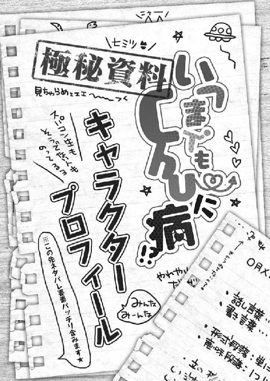
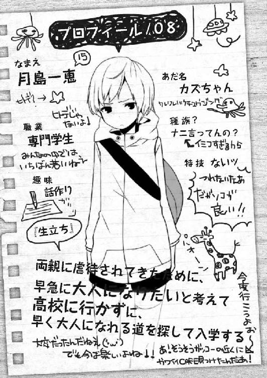

| 桜ノ杜ぶんこ いつまでもChu～に病 | |
| くしまちみなと | |
| (2012) | |
桜ノ杜ぶんこ
いつまでもＣｈｕ～に病
くしまちみなと
「もう、俺にはニートになるしか道はない......」
大学の合格者発表のボードを前にして、田端幸生は肩を落としてボソリと呟いた。
現役合格を目指してがんばってきたのに、日東駒専の四大学はことごとく撃沈。日東駒専がすべて落ちているのだから、記念受験的に受けたセンター試験で、高得点を取れるはずもなく国立大学受験は見送り。最期の頼みの綱として残されていた、必ず通るだろうとＡ判定を受けていた東京明国大学も、試験日前夜に高熱を発して体調を崩してなんとか受験はしたものの結果はこのザマだった。
「名前さえ書けば受かるっていうのは都市伝説だったのかよ......」
そんな下位ランクの大学につきまとう都市伝説を幸生は信じて、苦しい思いをして高熱にふらつきながらもここの受験に臨んだ。それは、ワラにもすがりつきたい瀬戸際の受験生にとって共通する思いだったのだろう。
しかし、その思いは見事に裏切られた。
しょせん都市伝説は都市伝説である。
これが相手が人だったら『裏切ったなー！』とか叫んで憂さ晴らしもできるのだろうが、相手は勝手な思い込みでしかない都市伝説。八つ当たりの対象すらもない寂しさに幸生は打ちひしがれた。
そして幸生の周りには、同じような瀬戸際に立たされていた学生なのだろう。受かって号泣する者。さらには涙しながら在校生に胴上げされている合格者や、ケータイで親に合格を告げる合格者たちがいた。
いや、そんな幸福感あふれる人たちばかりではない。
幸生と同じように呆然と合格者発表ボードを見つめている──恐らく不合格だった受験生。あるいは地面に膝を突いて両手を天に突き上げて、往年の名作映画『プ☆トーン』の名シーンよろしく声にならない絶望の叫びを放っている者。あるいは泣きながらキャンパスから出て行く者。
全部、不合格だった受験生の末路だった。そしてそれは同時に、もうここより後がない状況を示していた。そう、これでほとんどの大学の合格発表はオシマイ。基本的にはここで受験らしい受験は終了する。不合格者たちは二次募集をしている学校を探すか？ それとも予備校を探すか？ あるいは、残されているかもしれないなにか別の路を探すか？
とにかく、受験した大学にすべて拒否られた受験生たちにとって、この期間は重要な分水嶺となる期間だった。道を選び損なってドロップアウトするか、それともきちんとした次の道をつかむことができるのか......。
なんにしても、幸生には、今ココでその新たな可能性のある道を模索する資格は一グラムも存在していなかった。
──今、ここには俺の居場所はない。
そう。今ココに居場所があり、将来へつながる道を模索できる者は、入試で『合・格・者』という三文字を手に入れた勝者だけなのだ。不合格者、あるいは敗者である幸生の居場所なんかあるはずもなかった。
そう感じた幸生は重い足を引きずりながら、トボトボとキャンパスを出て行った。
どこをどう歩いたのか全く覚えていない。何も考えず足の赴くまま歩いていた幸生が、ようやく感じた空腹感から立ち止まると、もう辺りは夕暮れ時になっていた。
合格発表が午前一〇時だから六時間近くフラフラと歩いていたことになる。
とりあえず親には、キャンパスを出る前にメールで不合格だったことは告げていたから問題はない。受験に失敗したことで自殺するのではと心配するほど、幸生のことを信じていない親ではなかった。
「ここはドコだよ......」
問題はソレだ。
訳も分からずに六時間も歩き回った結果、完全に迷子になっていた。
一〇年くらい前ならそれで困ってしまう所だが、世の中は便利なものでスマホという武器がある。バッテリーがかなり消耗しているスマホを出して現在位置を確認すると、中野駅の近辺であることが判明した。
六時間も飲まず食わずで、二〇キロ近くを歩いていたことになる。
実際、電車に乗るにはまだかなり歩くことになるが、すぐ目の前にランドマークとなる建物がそびえ立っているから、ここでスマホのバッテリーが切れても問題はなかった。
「ここは......中野......ブロードウェイ？」
中野にそびえる『東京の九龍城』とも言われるサブカルチャーショップの集合ビル。名前からゴチャゴチャとしている印象を受けるはずのその外観は、一見、ごく普通の建物に見えた。実際にゴチャゴチャしているのはビルの中身であり、外側は誰が見てもごく普通のビルっぽく見える所だった。
幸生もそれに漏れず、外観から判断して『東京の九龍城』と呼ぶのは大げさすぎる気がしていた。
「飯でも食って......帰るか......」
ここから電車で新宿まで出て、家に帰るまでさらに一時間半くらいはかかることになる。
昼食もとらず、飲み物も飲んでいない体はクタクタになっていたし、もう報告する必要もないのだから、空腹を押してまで無理して早く帰る必要なんかなかった。
「家に帰ったら、予備校を探すしかないのか......」
予備校。その言葉を口に出しただけで、一気に人生負け組に転落した気分だった。
ああ、あの子は一浪よ──なんて近所のオバサンたちに囁かれてしまう。まさに、最悪な日々の始まりの予感が幸生には感じられた。予備校生よと噂される程度ならまだしも、『あの子は名前さえ書けば受かる東京明国大学（あってもなくても見えないから、略して透明大などとも言われる）すら受からなかったのよ』などと、敗者の心の痛みを知らない近所の噂好きマダムたちは話しまくるかもしれない。
「やっぱ自殺しといた方が懸命かな？」
そう考えて見上げる『東京の九龍城』は、自殺しがいがありそうな高さを備えていた。
しかし、自殺したところで自分に楽しいことなどひとつもない。それをネタに、また近所の噂好きマダムたちは大盛り上がりするだろう。しかし死んだ幸生はどうなのか？
考えるまでもなく、全然、楽しくない気がする。
──俺の人生は、話題を提供するだけ......か？
人生の春を大学生活で味わうために、高校生活をそれなりに受験に費やしてきたのである。なにひとつ、人生の楽しみを味わってはいない。今、自殺なんかしたら、話題を提供するだけ提供して舞台から退陣するようなものである。しかし、自殺せずに生き恥をさらすことが幸生にできるのか？ 生き恥をさらして衆目の噂にまみれながら、トボトボと予備校の道を一年間通い続けることができるのか？
無理だ──
幸生は自問にそう即答できた。
近所のオババの井戸端攻撃にさらされて絶望的な気分を味わい続けるくらいなら、一生家の外に出ないでネットの世界だけを見ている、自宅警備員になった方がマシな気がしてならない。
ザ・ニート──
定冠詞の〝ザ〟をつけたらカッコよさそうな気がして、幸生の気持ちはもうニート化にかなり傾いていた。予備校は現役合格を目指す高校生たちが行く学校であり、浪人は自宅警備員になるべきだ。そんな思いすら幸生の中で生まれていた。
むしろ、法律でそう決めてくれとまで、頼りない現政権に対して願っていた。そしたら、二〇歳になった時にその政権党に投票してやるのに......とまで思っていたが、政治家が選挙権のない若者の声に耳など貸すはずもない。彼らは口では『未来ある若者たち』という台詞をよく使うが、未来ある若者たちのためになにかをするという事を極力避ける。だって、一円も儲からないんだもの......。
しかし、その未来ある若者たちはまだいい！ 幸生のような未来がまったく見えない若者たちはどうしたらいいのか？ 春を迎えれば高校も卒業という状況であるにもかかわらず、すがりつけるモノは親のスネくらいしかない。
「ドコかの偉い誰かが言ってなかったっけ？ 親のスネはしゃぶり尽くす物って......」
全国の親の六割が聞いたら怒り出すような台詞を、幸生が口にしながらブロードウェイの中に入ろうとした時だった。幸生が開けた扉からちゃっかりと先に出てきた女の子が、幸生の顔を見て『ん？』というような表情を見せて顔を近づけてきた。
──ん？ いきなりモテキ？
見知らぬ女の子とこうした場所で運命の出会いをする。ギャルゲーとかマンガにはありそうなシチュエーションだったが、現実にはそうあるものじゃない。しかし、身も心も疲れ切っていた幸生は、そんな妄想的なシチュエーションがあってもいいじゃないかと考えてしまった。
「あれあれ？ もしかしてユキちゃん？」
「はぁ？」
妄想的なシチュエーションがドンピシャで発動したのかもしれない。
台詞から考えれば、それは幸生が過去に遭遇したり知り合ったりした人が放つ言葉に思えた。つまり過去の記憶の中にいる人だ。
とにかく、受験の時も六〇％くらいしか回転しなかったはずの脳みそが、この時とばかりにフル回転で作動して記憶検索を開始した。
ちゃん付けで呼ばれることなど、高校三年間一度もなかったし、その前の中学三年間も呼んでいた人間に幸生の心当たりがあるのは一人だけだった。しかし、目の前の女の子の姿から記憶の中にいたその女の子の姿は想像できず、あやふやな記憶のままに幸生は聞き返した。
「もしかして......江南か？」
幼稚園から中学三年までのつきあいがあった幼馴染みの目白江南の名前を挙げると、彼女は幸生の両手を取ってうれしそうにピョンピョンと跳ねた。
「そうそう。そのもしかしてだよぅ。久しぶりぃ。元気して......なさそうだねぇ？」
六時間に及ぶ徒歩の旅の疲れもあるだろうし、受験に失敗したという疲れもあるだろう。確かに幸生の顔は疲れていた。
「まぁ、な......」
「高校でいじめられてた？ っていうか、もう高校も卒業だよねぇ」
天然でボケボケした印象のある目白江南は、幸生の記憶の中にあるままのおっとりした話し方をしていた。しかし、そのカッコは幸生の感性から見たら、どこか突き抜けた姿としか言いようがなかった。
「なんてカッコしてんだ？ 全ッッッ然っ、江南って分かんなかったぞ」
「そんなに変なカッコ？ あたしには普通だけどなぁ」
そうやって自分のカッコを見なおした江南。彼女はモノトーンのゴスパン服に死人風メイクをし、さらに薄水色のウィッグをかぶっていた。正直、黒髪でショートカットの江南の中学時代しか知らない幸生が、今のこの格好からかつての幼馴染みと判別したのは、奇跡としか言いようがなかった。中学生の頃にこのファッションに目覚めていたなら、まだ幸生の記憶にも残っていたかもしれない。しかし、江南がこのファッションに目覚めたのは高校デビューからだ。別々の高校に通っていて、しかも家も大して近くない関係なら街中ですれ違う機会だって当然少なく、高校生の女の子と中学生の女の子とでは、雰囲気からして格段に変化するわけですれ違ったところで分からなくなってしまうだろう。実際、今がいい例だった。意識して見ているか、毎日見続けていない限り分かるはずもない。
「なにしにこんな場所に？」
中野ブロードウェイでは、この手の服を売っているのか？ とも幸生は考えたが、江南が手に持つ大きめの紙袋には、薄いパンフレットのような本がギッシリと詰まっていた。持ち手のヒモはピンと張って江南の指に食い込み、かなり重そうである。
「大漁だよぅ、大漁ぅ。こーんなに今日は本が買えたんだよ」
「本？ その薄い本って......」
それは聞いてはいけない台詞だったのかもしれない。
受験に没頭などしていないで、一般化しつつあるその薄い本に関する知識を僅かでも幸生が持っていれば、それは避けられた災厄だった。
往来の激しい場所であるにもかかわらず、彼女が満面の笑みを浮かべながら袋から取り出して幸生に見せた物は、ビジュアル系っぽい男同士が、激しく絡み合うＢＬ同人誌だった。
当然、そんなものを見せられれば幸生もドン引きする。
「ぶっ！ なんで、そんなホモエロ本もってんだよ！」
「ホモじゃないよぅ。ＢＬだよぅ！ ＢＬ同人誌だよぅ」
「ビーエル......」
「ボーイズ・ラブの略だよぅ！」
幸生もその言葉を知らない訳ではなかったが、まさか幼馴染みがそんなモノにハマっているとは思いもしなかった。
「とりあえず、その本を隠せ」
人通りが多いブロードウェイの出入口付近で、ＢＬ同人誌を──しかも、激しい絡みの見開きシーンを広げ突きつけられている。幸生じゃなくても、当事者になればそう言うしかないだろう。
もうこの時点で幸生の脳裏に浮かんだモテキとかいう言葉は消し飛び、困った幼馴染みに振り回されている図しかなくなっていた。
「そうだねぇ。人通りの激しい所で同人誌を読むのはマナー違反だものねぇ」
それを分かっていてここで開くあたり、天然ボケな顔をして実は確信犯的にやっているのではないかとも思えるのだが、江南は何事もなかったかのように丁寧に表紙を傷めないようにしながら、その同人誌を紙袋の中にしまい込んだ。
「いや......そういう意味じゃなく......。まぁ、そういう意味でもいいんだけど......」
言葉に詰まっている幸生の様子をおもしろいものでも見るかのような顔をして笑って見ていた江南は、前振りもなく幸生の手をつかんだ。
「ちょっとお茶しようよぅ」
「え？ あ、ああ......。昼飯を食ってないんで、モノ食べられる場所でいいなら」
「大丈夫だよぅ。お勧めの場所があるよぅ」
幸生が江南に手を引かれるままにつれて行かれた場所は、ブロードウェイの中にある軽食店だった。トーストからピラフ、スパゲティなどがあり、おなかが空いている幸生も飲み物だけでいい江南も満足できる店だった。
「ユキちゃん、なんでこんな所にいるの？」
それぞれ注文を終えてから、江南はそう口を開いた。
「それはこっちの台詞だよ。おまえこそなんでこんな所にいるんだよ」
二人とも埼玉北部の東武線もＪＲ宇都宮線も使える地域に住んでいるので、こんな場所で偶然出会うなど中々ないことだった。
「あたしは、普通に買い物に来ただけだよぅ」
「買い物......」
先ほどの薄いＢＬの本が幸生の頭に浮かび、しかも口調からするといつも来てそうな雰囲気を感じて、幸生はさらに言葉に詰まった。
「ユキちゃんは、なにしてたの？」
「なにって......」
言葉に詰まったものの言わない訳にはいかず、幸生は正直に答えた。
「今日、受験の合格発表日......だったんだ......」
「へぇ、ホントに？ で、結果は......って、受かってたらそんな顔してないよねぇ」
グサッと来る言葉を江南は軽く言い、幸生は受けたダメージで仰け反るようにしてイスの背もたれに寄りかかった。
「軽く言うなよ......。もう、どうしたらいいか、分かんないんだからさ......」
「そうなの？ もしかして、今日が最期の学校だったの？」
たたみかけるように〝最期〟というダメ押しの言葉に、幸生の体はズルズルと背もたれからズリ落ちた。
「そうなんだぁ......。じゃあ、浪人するのかなぁ？」
「おまえ、言いにくいことをズケズケと......。そういうおまえは、高校卒業して進路どうすんだよ？」
幸生の記憶が確かなら、江南は女子校に通っていた。ランク的には幸生の高校よりも偏差値でふたつほど下になる学校だった。
「あたしぃ？ 決まったよぅ。スパコン学院のシナリオ・ノベルズ科に行くんだよぅ」
「スパコン......学院？」
スパコンと聞くと、某女性大臣に『一番じゃなきゃダメなのか？』とコキ下ろされたために奮起して世界一に返り咲いたスーパーコンピュータくらいしか、幸生の頭には該当するものが浮かばなかった。
その〝？〟が浮かんだ幸生の顔から、スパコンの意味が伝わっていないことが江南には分かったのだろう。ちょっとふくれ面をして抗議混じりの口調で補足してきた。
「スーパーコンテンツ学院だよぅ！ 南新宿にある、怪しいビルの」
そう言われると、どこかのアニメにでも出てきそうな、巨大な時計台（たぶん、某怪盗のアニメに登場した時計台）のついたゴシック風の不思議なビルが、南新宿にあるとなにかの情報番組で取り上げていたのを思い出した。もしかしてソコかと幸生が聞くと、江南は嬉しそうにコクコクと頷いた。
スーパーコンテンツ学院とは、新宿駅南口から代々木方面に徒歩一〇分程度の所にある二年制～三年制の専門学校で、今までアニメ・ゲーム・音楽・ファッションというコンテンツ系の学科を手がけていたが、なにを血迷ったか出版不況と言われるこのご時世に、ライトノベルのライターやゲームのシナリオライターを養成する三年制の新学科を設立した学校だった。
「シナリオ・ノベルズ科って......なにやるの？」
「んー？ 将来、ラノベ作家になれたらいいなぁって思ってるよぅ」
唐突な宣言にピラフを食べかけていた幸生の手が止まり、思わず目の前の江南の顔を見返してしまった。
その顔は明らかに、本気でそれを言っている。
「作家に......なるの？」
「そうだよぅ」
ニコニコして答える江南に『無茶だろ』と言いかけて、幸生はそれを口にするのを止めた。人の夢に対してとやかく言う資格はないと思ったから......。
ただ、江南は現国の成績があまりよくなかった記憶が幸生にはあるだけに、果たしてそれが叶う夢なのかどうか、疑問に思えて仕方ない。もっとも、そういう学科がある以上は、そういう職業に就けるように指導してくれるのだろう。本人もその道に進む気があるのなら、国語力だって増すように努力するだろうから、その辺はもう幸生の心配する部分じゃなかった。
「ユキちゃんは、これから先どうする気なの？」
「それは......」
さすがにニートになるとは言えない。かといって幸生としても予備校に行くと宣言するのもはばかられる気がした。ここにたどり着くまでの間に考えていたことが本気なら、どう考えても言えない。
「進路ぉ......決まってないの？」
「うん......」
正直、最後の希望も六時間ほど前に打ち砕かれた訳で、幸生的にもどうしたらいいのか分からなかった。
「ユキちゃんはさぁ、何になりたいのかなぁ？」
「何にって......」
そう言われても、何になりたいのかサッパリ分からなかった。というか、考えていなかった。
将来何になるのか？ それを考える時間が欲しくて大学に行こうと考えていたという言い訳もあるのだけど、ぶっちゃけると誰もが大学に行くと言っていたから、幸生もそれに合わせていただけにすぎない。
──なりたいものなんか......ない？
そう考えると、なにかゾッとするものを感じた。
将来なりたい職業もなれるかもしれない職業も幸生は考えたことがない。ただ漠然と、大人になったら仕事につくんだろうくらいしか考えていなかった。
ひどい話だけど、何かビッグになれる仕事が在学中に転がり込んできて、それを手がけてウッハウッハなんて妄想も幸生は心の片隅で考えていたりもした。そんなこと、現実で起こることなど、宝くじに当選する方が確率的に言えば遙かに高いと分かってはいたけれど......。
どう言ったらいいのか分からず考え込んだ幸生を見て、クリームソーダのストローをくわえたまま、江南は器用にため息をついた。
「ユキちゃんってさぁ......。ちっちゃい頃は大きい夢持ってたのに、今は全然つまんない男になっちゃったよねぇ」
「つまんない男言うなよ......。って、俺、なんか夢を語ってたことあるわけ？」
「言ってたよぅ。幼稚園の頃にやたら超絶的な夢をねぇ」
幼稚園の頃にやたら超絶的な夢と聞いて幸生は首を傾げた。
幼稚園の頃の夢なんて、飛行機のパイロットとか新幹線の運転士とかと相場は決まっている（幸生の認識の中では）。そんな中で超絶的と言われるような夢を自分が語ったことがあっただろうか？ いくら記憶を辿っていっても、回答らしきものは幸生の頭の中から出て来ない。
「俺......なんか言ってたっけ？」
つまんない幸生の答えに江南はふくれ面をして、わざとらしいほど大きなため息をついてみせた。
「すっごくでっかい夢を語っていたんだよぅ。今風に例えるなら、『俺は海賊王になる』みたいな感じで」
「なんて例えだよ」
さすがにその元ネタのマンガを幸生も知っていたが、その例えが何を意味するのかサッパリ分からない。
「もったいぶらずに教えてくれ」
「全然わかんないの？」
「分かんない」
「ユキちゃんは、幼稚園の頃に直木賞作家になって、美女をはべらせてウハウハって夢を抱いていたんだよぅ」
「はああっ!?」
そう言われると確かにそんな夢を抱いていた気がした。
直木賞作家になればモテモテになれて、しかもお金もガッポリ儲かるから、美女を左右にはべらせてウハウハした人生を送れる。そんなバカな夢を確かに語っていた気がしなくもなかった。それは今考えると具体性があるだけで、たまに考えていた何かビッグになれる仕事が在学中に転がり込んできて、それを手がけてウッハウッハなんて妄想と同じような気がした。つまり幼稚園児の頃から進化していない......。
「思い出した？」
「なんと......なく......」
確かに、幼稚園児の語る夢としては超絶的な夢と言われてもおかしくはなかった。直木賞作家に比べれば、パイロットや運転士なら手が届く可能性が格段に高い。今考えると、子どもらしくないアホな夢を語っていたもんだと思ってしまう。
そんな幸生の考えを読んだかのように、江南は不満そうな顔をして唇を尖らせた。
「なんだよ」
「今さぁ、自分の夢をバカにしたでしょぅ」
「え......？ いや、そんなちっちゃな頃の夢なんて、叶えようと思う方がおかしいだろう？ 違うか？」
「ちっちゃい頃の夢を叶えようと思わなければ、夢なんか叶わないんだよぅ」
「う......」
「誰もがあきらめちゃうから夢は叶わないのであってぇ、叶える気になってその夢にしがみつくと、勝利の女神もパンチラを見せてくれるって......体験入学で担任の先生が言ってたんだよぅ」
「............」
最後のオチを聞いて幸生は突っ伏していた。
「どういう例えだよ。その体験入学の先生はさ！」
「あれぇ？ 違ったかな？ 幸運の女神は裸エプロンだからとか言っていたけどぅ......。とにかく、自分の夢をバカにしちゃいけないんだよぅ」
イヤイヤするように首を振りながら言う江南に、今度は幸生がため息をついた。
「自分の夢って言ったって......」
──そんな叶いそうもない夢を追いかけるバカがいるのか？ いや、直木賞作家になる人たちは、きっと追いかけて夢を叶えているんだろうけど。俺のはたぶん、ガキの思い描くバカな夢だ......。
そんなことを考えた時、幸生はそのバカな夢以外に何か考えたことがあったのか？ そう自問して、思わず身震いした。何も考えていないということは、幸生自身に何もなくなってしまうような気がしたからだ。
バカな夢でも追いかけられるものがあるなら幸せなのかもしれない......。
なりたいモノが何もない状態で闇雲にただ受験勉強をするよりも、バカな夢を追いかける方がよっぽどマシな気がした。少なくとも、今のニートになるという選択肢よりもずっとずっとマシな気がする。それが実現するかどうかは別にして、無為に時を過ごすよりも何かをやった感はあるかもしれない。
だけどその夢を追いかけるにはどうしたらいいのか、幸生には分からなかった。いや、分かってはいたが、それを口にするのは何となくはばかられる思いがあった。
「ふっふふふっふふふっ。ユキちゃんの今の心の声に答えてあげようか？」
そんな幸生の心境を見透かしたかのように、江南は腕組みし、偉そうにふんぞり返って笑っていた。
「な、なんだよ」
「スパコン学院のシナリオ・ノベルズ科は、まだ募集を〆切ってないよぅ」
「いや、しかし......」
確かにそれは聞きたい情報ではあったが、問題はそんな本当にスキルが身につくのかどうかも分からない専門学校に行くことに親が反対しないかどうか......ということだった。
もうひとつ。そんな幼い頃の夢に、今の自分の将来を本気で賭けられるのかどうか？ というギャンブル的な部分が幸生にとってもの凄い不安要素だった。自分に作家としての才能があるのかなんて、今まで考えたこともないので未知数過ぎる。
「俺、作家になれると思う？」
「んー......」
腕組みをして江南は大きく首を傾げた。
「んんんんんー......分かんない」
「考え込んでそれかよ......」
「だって、みんな未来は未知数だよぅ？」
真面目にそう答える江南を見ていると、実は自分よりも真剣に考えてそのスパコン学院とかに進学することを選んだように幸生には思えた。中学生の頃は天然ボケでおっとりしていた江南が、こんな土壇場になってその道を選ぼうとする自分よりも、よほどしっかりしているように感じられた。
「未来は......未知数か......」
「そう。未知数だよぅ。だから、挑んでみて損することはないと思うんだよぅ」
そう聞くと、それは耳に小気味いい言葉だった。
幸生としては、なんだかそそのかされた気がしなくもない。
しかしその道を選ぶのは自分だし、その先の将来をつかむのも幸生の能力次第だった。
「じゃあ、後は親の説得だな......」
安易な決め方かもしれないが、ここで江南に出会ったのも何かの運命な気がした。というか、そう考えると、何となく道が開ける気がする。あくまでも気のせいなのだけど。
「スーパーコンテンツ学院か......」
目の前に座ってニコニコしている女の子が自分にとって幸運の女神になるか、それとも地獄のドン底に突き落とす小悪魔になるか......。神ならぬ身の幸生に、そんなことなど分かるはずもなかった。
「で、この先あんたはどうする気なの？」
幸生が家に帰って荷物を置くなり、母親がそう声をかけてきた。
なにかウダウダと小言を聞かされてから、『で、どうするの？』と聞かれるよりもいくらかはマシな気がしたが、いきなりそう聞かれても、幸生としても気持ちの整理ができていないわけだから答えるのが難しい。
「いや、まぁ......なんというか......」
「予備校に行くならその手続きをしなきゃなんないし、専門学校に進むならそっちの手続きもあるんだからハッキリしなさい」
「う......」
こういう時、幸生の母親はズケズケと物を言ってくる。
実際、予備校に行くならいい学校はさっさと入学を〆切ってしまうし、専門学校だっていつまでも待っていてはくれないだろう。
しかし、何の心の準備もしないままに、スーパーコンテンツ学院に行きたいと言うのは、まだ迷いが残っている幸生的にはキツイのが本音だった。
考える時間くらいは欲しいところだ。
「これだけ帰りが遅くなったということは、なにか考えて来たってことじゃないの？」
「う......」
「で、どうするわけ？ 一応、私もお父さんも、あんたの考えを第一にするからさっさと決めなさい」
一応、と区切る辺りが母親のしたたかなところである。一応、子どもの考えを第一に考えてみたけど、考えた結果ダメですと言える魔法の言葉だ。
「俺、スーパーコンテンツ学院のシナリオ・ノベルズ科に行きたい」
「は？」
希望を言えと言われたから幸生はそう言ったわけだが、母親は聞いたこともない学校と学科に小首を傾げた。
「何する学校？」
「えーっとぉ......」
とりあえず、幸生は江南から聞いた学校の情報と、帰りの電車の中でスマホで得た学校の情報を母親に話した。幸生の予想では、ここから母親の顔が怪訝そうに変化し、目が据わって、鬼のような形相に変貌するというものだったが、意外に母親が言った言葉は、
「ふぅーん......」
という一言だった。
「で、そこを出てあんたは何になるの？」
「小説家か、シナリオライターか......。それが無理なら雑誌の記事を書いたりする仕事かなぁ......」
「それに、あなたは本気でなりたいの？」
そう突っ込まれるとどうだろうか？ と悩んでしまう部分はある。
だけど、ここで強く言い切れないと絶対に母親とは反対するものだった。
「うん。なりたい」
「じゃ、いいんじゃない」
「はあっ？」
意外すぎる素直な反応に、幸生は逆に聞き返した。
「普通、反対しない？」
「反対して欲しいの？」
「いや、して欲しくないけどさ......」
「ならいいじゃない。あんたが自分からやりたいって言い出したこと、滅多にないしさ」
「はぁ......」
「なりたいのなら、それを目指せばいいんじゃない？ 将来、あんたに養ってもらおうなんて考えてないしさ」
「はぁ......」
そう言い切られて喜んでいいのか、悲しんでいいのか幸生は分からなかった。
「まぁ、じゃあ遠慮なく行かせてもらいます」
「じゃあ、明日にでも手続きしてきなさい。ただし、援助するのは卒業するまでだからね。そっからニートになろうが何になろうがあんたの勝手だけど、ウチでは養わないからよろしく」
「はあ？ それ、ニートって定義から外れてないか？」
「どこが？ ニートって辞書で引いてごらんなさい？」
幸生は言われるままにスマホの辞書で引いてみた。
ニート──【ＮＥＥＴ】学校にも行かず、就職しようともせず、就業訓練も受けない若者のこと。内閣府、および厚生労働省の定義では、一五歳～三四歳までという年齢線引きまで存在している。
確かに、家に寄生して生活する人という定義はドコにも書かれていなかった。それどころか年齢制限まであるとは幸生も知らなかった。だが、世の中には四〇歳でニートという人もいるわけだが、そういう人たちはなんと定義したらいいんだろうか？ ハイ・ニートとかアルティメット・ニートとか言うのだろうか？
そんな余計な心配をしつつ、幸生はこの親との取引を成立させていいものかどうか悩んだ。
「えっと、一人暮らしもあり？」
「安いところがあるのならいいよ。あんたもその方がいいでしょ。一時間半もかけて通学するよりもさ」
なんだか幸生にとって、トントン拍子に何かが進んでいる気がして仕方なかった。
かなり中二病が進行している人間なら、『これが天意を得ている証拠か!?』などと思ったりするのだろうが、幸生はまだソコまで感染進行はしていない中途半端な状態。なんだか、いいように進んで気味が悪い......と感じるので精一杯だった。
気がつくと、幸生はあれよあれよと言う間に、スーパーコンテンツ学院のオリエンテーションの日を迎えていた。
母親の言葉通りに父親も反対することなく、入学も一人暮らしも認めてくれた。父親的にはニートになるよりマシという返事だったので、母親よりもずいぶんとマトモな意見に思えた。
幸生の一人暮らしが認められたのは、学院が学生向けに確保していたマンションに空室があったからというのが大きな理由だった。そうじゃなかったらバイトしながらの生活になるために正直な話、止めた方がいいと言われただろう。
ほとんど江南のおかげでトントン拍子に進んだと言っても過言ではなかった。
幸生を入学事務局に案内してくれて、なおかつ学校が確保しているマンションについても説明してくれたのだから......。
こういう時、親切な幼馴染みを持っているのは幸せなことだった。
しかし──と思いながら幸生は周囲を見回した。
幸生の隣に座る江南は、今日はデス・メイクはせずにごくあっさり目のメイクで、シンプル系のゴスパン衣装に身を包んでいた。ウィッグもつけておらず、黒髪のままだった。
しかし、意気投合したらしいその隣に座る女の子と『○○×凸凹』という不思議なＢＬ言語で語りはじめており、すでに幸生とは別次元の生き物と化していた。
──ついていけねー......。
なんとなく教室に集まっている人と自分とが異なっているような気がして、幸生は江南のように友達を作っておしゃべりをするということもできないでいた。仕方なく何もすることがないので、教室に集まった面々を観察してみた。
一見してオタクと分かる連中......。
話していることがアニメかマンガ、ゲームのことらしいのだが、会話のあちこちでやたらと声を張り上げ、教室の中でも存在感をアピールしている人たち。
携帯ゲーム機に向かい、周囲から干渉されないぞというオーラを張って独りの世界を作っている人たち。
トレーディング・カードゲームを広げて対戦している人たち。
少なくとも、彼らはオタクと言っても良さそうな連中であり、教室の七割強を占めていた。ちなみに、幸生はその七割強の中に江南とその隣にいた女の子を加えるのを忘れてはいなかった。
一番分からないのは、カバーをかけた小説を読み込んでいる人たち。
ライトノベルを読んでいるのか、それとも一般向けの小説を読んでいるのか？ それは分からない。
そうした人たちに共通するものは、教室の他の人間と一緒にされたくないというオーラを張っていることだった。ある意味、携帯ゲーム機に夢中になっている人と共通するものがある気がした。
あとは、携帯かスマホをいじくっている人たち。
辺りをきょろきょろと見回しているのは、幸生以外一人もいなかった。
──なんか、俺、場違いなのかな......？
幸生は胸を張ってオタクと言い切れるほどにオタクではない。声高々にフィギュアについて熱く語れるほどフィギュアが好きでもないし、ゲームセンターに通ってプライズの景品獲得に命を懸けられるわけでもない。気が向いたらぬいぐるみを取るくらいだし、ゲームだって受験勉強をしていたせいもあるかもしれないが、ロクにやっていない。
小説に関しても、このスーパーコンテンツ学院に通うことを決めてから、公立の図書館に足を運んでラノベ（ライトノベル）や一般小説で興味がわいたものを片端から読みまくった程度で、その読書量はこのクラスの中では最下位に近いレベルだと幸生は思っていた。しかし、見たところ小説とおぼしき物を読んでいるのは数えるほどしかいない。
──こいつら......。本当に小説家になりたいのか？
小説家になりたい人が必ずしも小説を読んでいなければならないということはないのだが、それにしたって、小説を読んでいる人間がごくわずかということが気になるところ。
妙な偏見を持ってはいけないと首を振って偏見を振り払い、幸生は前向きに現状を考えることにした。
──挨拶して回って、ドコかのグループに入れてもらった方がいいのかな......。
一年制の専門学校ならまだしも、三年制の学校で友達が江南だけという三年間は考えたくもなかった。ましてクラスがひとつしかないのだから、幸生としても友達なしで過ごす三年間の学生生活は遠慮したかった。
──仲間入りするなら......。
マンガやアニメの話には、正直、幸生はついていけそうもなかった。
聞こえてくる会話の内容からして、すでに分からないのだから仲間に入れてもらってもなんにもできないだろう。そう考えると、カードゲームで遊んでいる連中が一番馴染める存在かもしれない。
そう決めた時、教室のドアが開いて、ガ☆ダムに出てくるキャラがかぶっているマスクをつけた金髪の男性と、その姿を見るのがとても恥ずかしいという様子の幸生と大して変わらなそうな年頃の女性が入ってきた。
「赤い彗星だ......」
教室の中で誰かがそう呟いた。
「いや、再来の方だろ......」
正直、幸生にとってはどっちでもよかったが、なんでここにコスプレもどきのカッコをした人が入って来るのかが気になって仕方ない。
「おはようございます！」
教室中の度肝を抜いて登場したマスクマンはそう挨拶をしてきた。それにつられて、教室にいた学生たちもバラバラに小声で応じたが彼は気に入らなかった様子だった。
「元気がないな。もう一度行くぞ！ おはようございます！」
「おはようございます！」
「いいぞ。ニューヨークへ行きたいかぁっ!?」
「は？」
「神田先生無理です。私にも分かりません」
学生の全員がポカーンという顔を見せ、マスクマンの斜め後ろに控えていた恥ずかしそうな顔をしたままの女性が、その袖を引いて注意した。
「サトチン先生にも分からないかぁ......」
それもそのはず、その元ネタである『史上最☆！ アメリ☆横断ウルトラ☆イズ』は九二年を最後に番組放送を終了している。最後の放送が生まれた年とか、あるいは生まれる前に放送が終了していたとかという年代だから、ほぼ知っているはずもなかった。
「ノリ悪いなぁ......。まぁいい。俺が今日から君らの担任講師となる神田悠紀夫だ。赤い彗星先生かユッキー先生と呼んでくれていいぞ」
いきなり担任にあだ名で呼べと言われても、すぐにそう呼べる人はそうはいないと思うのは気のせいだろうか？
「俺の本業はＴＲＰＧゲーマーだ。ＴＲＰＧと言っても今の子たちには分からないか？ テーブルトーク・ロールプレイング・ゲームの略だな。みんなが知ってるコンピュータのＲＰＧの原型になったものだ。俺は不死身出版から出ている『悪魔寄生獣』のリプレイでプレイヤーもやっているので、興味があったら読んでみてほしい」
リプレイとは何のことか幸生にはサッパリ分からなかったが、中には知っている学生たちもいて、その名前を聞いて『おおっ！』という驚きと尊敬の声がいくつか上がった。
有名な出版社から出ている本のプレイヤーをしている人なのだから、幸生が知らないだけで本当は有名な人なのかもしれない。実際、知っている学生もいるわけだし、学校はマトモなんだろうと思えて、場違いな所に来て失敗してしまったのではと考えていた幸生は、ほんの少しだけホッとした。
「副担任の町屋聡子です。去年まで、ここのゲーム科の学生でした。年が近いということで皆さんのサポートや生活相談。それと、今みたいに神田先生が暴走した時に止める役をさせていただきます。皆さん、よろしくお願いいたします」
学生からすぐに内勤講師という道は、実は専門学校では結構あるパターンだった。優秀な成績の学生がデビューするまでの期間の足がかりとして、講師をしながらその傍らで作品を作る環境を提供するというのが、そうした制度の基本的な名目らしい。あとは内勤として学生をサポートする講師が少ないということも理由のひとつだった。ただ、中には就職実績を上げるために抱え込んでしまうというケースも存在しているらしい。
「サトチン先生、俺は決して暴走していないぞ」
「なら、そのマスクを取ってください」
「いや、マスクを取る時は、こう......自分のしでかした罪で手が震える時だろう」
「全然ネタが分かりません」
掛け合い漫才の準備でもしてきていたのか、あるいは原稿ナシでもこれくらいのテンポで会話が成立させられなければプロになることは無理なのか？ なんにしても、学生はその二人の講師のやりとりをポカーンとした顔をして見ているしかなかった。
「神田先生、学生が置き去りになっています」
「おおっ、それは済まなかった。それでは、学科の説明をはじめさせてもらおうかな」
そうオリエンテーションらしい状況に移りかけた時、教室の後ろの扉が開いて、格闘ゲームＫ☆Ｆに出ているキャラクターがかぶっているものと同じ帽子をかぶった、体格のいい男がにこやかな顔をして教室に現れた。
「先生、今年もお願いしまーっす」
「なんだよ、日比谷。おまえ、また今年も学校に居座ってんのか？」
「この学科で最後っすよ。また、よろしくお願いします」
幸生じゃなくても気になる言葉は『また今年も』という言葉だろう。少なくとも、前に一学科にいた程度では、そんな言い方はしないだろう。
「えーっと、みんなに自己紹介をしてもらう前に、コイツだけ先に紹介させてもらうな。この学校の主で、ゲーム科、アニメ演出科とハシゴした男だ。ほれ、自己紹介しろ」
「えー、小生は日比谷保充と申します。色々と勉強するのが楽しくて、この学校に居座っております。どうぞよろしくお願いします。こんなんでイイッすか？」
「ああ、いい。じゃあ、席につけ」
日比谷はニコニコしながら空いている後ろの方の席にドッカリと腰を下ろした。
「じゃあ、学科説明に戻るから聞いてくれ。この学科は、小説家かシナリオライターを志望する者のための学科です。なので志願場所が違います！ という場合は、今日中に言ってくれれば、転科も簡単にできるからそのつもりでいてほしい」
そんな感じに、神田先生はこのシナリオ・ノベルズ科の講義概要と講義内容について説明を続けていった。それは幸生が学校のパンフレットで見た内容とほとんど変わらないことだったが、気になった部分は午後の講義のほとんどが選択講義となっていることだった。
注意書きを見ると、必ず選択しなければならないわけではなく単位もない。
──どういうことだ......。
学校の講義であるなら、必ず単位があるはず。この説明を見るなら、受けたくない者は受けなくてもいいことになる。
「それで......。新聞奨学生で来ている学生はいるかな？」
神田先生の言葉に手を上げた者が二、三人いた。
「分かっていると思うけど、新聞奨学生は午後から夕刊配達の仕事があるから、選択講義は受けられない。その分、午前中の講義に身を入れてくれよ」
──そういうことか......。
新聞奨学生は新聞配達をやる代わりに学費を出してもらうという制度。朝刊の配達と夕刊の配達を行わなければならず、夕刊配達の準備があるために午後二時くらいには学校を出なければならない。つまり、午後の講義が選択制になっているのは、彼らに対する学校側の配慮だった。午後にも単位が必要となる講義があれば、奨学生は学校を卒業できなくなってしまう。
「午後の講義は選択制だからよく選んで受けるようにしろよ」
その言葉にも幸生は引っかかりを覚えた。
講義なのだから、取れるなら取れる限り受ければいいはずなのに......と。
「選択講義によっては、追加で教材費が必要となる場合があります。皆さん、お財布とよく相談して決めてくださいね」
町屋先生の補足で何となく納得できたが、それにしてはドコか神田先生の言葉には棘があったように思えた。それは幸生の気のせいなのか？
「講義を全コマ入れたら、遊ぶ時間なくなっちゃうね」
江南の囁きに、幸生も思わず頷いた。
午前四コマ、午後四コマの計八コマの講義を隙間なく全部受けたら、ハイパークリエイターになれそうな勢いだったからだ。
小説家を目指すための基礎文法講義が午前中の大半を占めており、金曜日だけぶち抜き午前中の四コマがマンガ原作者の住吉正敏先生のストーリーゼミというものになっている。それ以外にも外来講師によるゼミ形式のコマがいくつかあるが、基本的にそれらは午後の選択講義のコマに分けられていた。ゲームのシナリオ関係の講義はそっちに配分されており、基本的に講義のウェイトは小説の方に寄っているように思えた。
「選択講義って、二、三年になっても選択できるんでしょうか？」
誰かが質問の声を上げた。
江南とは真逆のハキハキしたしゃべり方をする、しかしどう見ても幸生よりも年下の女の子だった。中学生くらいにしか見えない。
「えっと、名前は？ 質問と一緒に、名前を言ってくれ」
「月島一恵です」
「月島さん......ね。基本的にその外来の先生が残っていれば、選択することはできるはず。っていうのも外来の先生は一年毎の契約だから、来年はいなくなってしまう可能性がある」
「ありがとうございます」
「講義の受講申込みは今週中だから、できるだけ早く組んで事務の窓口に提出するように。講義の組み方で分からないことは、学院の主の日比谷か......同じように別学科から転科して来た湯島に聞いてくれ。むろん俺たちに聞いてもかまわない。サトチン先生は去年まで学生だったから、キツイ講義とか分かっているからな」
そんなぶん投げっぱなしというか、ざっくばらんな感じで学科説明は進められた。
「じゃあ、これから自己紹介をしてもらうからな。名簿順ではなく、こっちの席に座っている人から順に話して言ってもらおう」
大体の説明が終わった後、入学初期にはつき物の行事が待ち構えていた。
幸いというべきか、神田先生が指定したのは幸生と反対側の端の席。考える時間と他の学生の様子をうかがう時間はたっぷりとありそうだった。
「じゃあ、俺からっすか......」
自己紹介のために最初に席を立ったのは、やたらとオヤジ臭い老けた顔と格好をした、眼鏡をかけた男だった。
「えと......新潟から上京してきました、入谷徹、一八歳の独身です。趣味は......月に向かって走ることです」
奇をてらって考えた言葉なのかもしれない。
しかし、『月に向かって走る』という趣味と、顔に似合わず一八歳という若い年齢に、その場にいた全員が首を傾げた。
「本当に一八なの？」
全員の疑問を神田先生は代弁した。そう、彼がかもし出す雰囲気は、どう考えても四〇代後半独身。彼女いない歴年齢というものだったから......。
「本気で一八ですよぉ」
「そっか......。苦労してんだな。じゃ、次」
意外に軽く流して神田先生は、次の学生を指名した。
「オ、オレっすか？」
眼鏡をかけてちょっと小太りな、やっぱりいかにもという雰囲気が漂う男が立ち上がった。
「オ、オレは......茗荷谷次郎っていいます。年齢は一九です。好きなモノは......幼女ですかね。よろしくお願いします」
あまりにも正直な趣味の発言に、教室中が静まり返った。
「お前......正直な発言はいいことだが、正直すぎる発言をして大丈夫か？」
「ウハン、大丈夫っす！ 三次元に興味は......ほとんどないっすから」
「えっと、じゃあ幼女も二次元のものなんだな？」
「なに言ってんですか、先生！ 幼女は四次元の産物ですよっ！」
どうやら茗荷谷の世界では、幼女は別次元の存在らしかった。
「いや、じゃあ......幼女のどのへんがいいんだ？」
「ランドセルが似合うか似合わないかになるギリギリのポイントがいいんですよ！」
なんだか語らせると終わりがないような気がしたのだろう、神田先生は後で思う存分語ってもらおうと言って茗荷谷を座らせ、次の学生に自己紹介を促した。しかし、この変な発言二連チャンが、それぞれの自己顕示欲に火をつけたというか......手が付けられない状態に引きずり上げることになろうとは、神田先生も予想外のことだった。
「自分は、市ヶ谷佐之助です。歳はみなさんよりも若干離れて二六歳です」
若干？ 大半の者はそう感じたはずだった。ゲーム科三年間とアニメ演出科二年間を渡り歩いてきた日比谷ですら二三歳のはずだから、それよりも三歳も年上ということになる。
「自分は、エロゲーを作りたくて陸上自衛隊第一空挺団を除隊し、第二の人生を始めるべくここに参りました。よろしくお願い致します！」
元自衛官──
入学者の前職がどんなものであれ構わない訳だが、その除隊理由が理由なだけに聞いた者は開いた口がふさがらない状態だった。
「ええと、市ヶ谷君......。本気でソレ言ってるのか？」
「ハイッ！ 自分は本気であります！ 除隊の際の挨拶でもキッチリ宣言して来ました。『自分は、除隊後に日本一のエロゲーを作って世界に日本のコンテンツの素晴らしさを広めるつもりであります！』と宣言しました」
宣言された上官たちも、きっと困っていたことだろう。
こう、どう手をつけたらいいのか分からないイタさに、幸生は頭を抱えた。
──こんなヤツらばっかりなのかよ......。
オタク・コンテンツ系の専門学校がイタいことは十分に承知していたが、某巨大掲示板の情報で知るのと、実体験するのとでは衝撃に雲泥の差があった。
「月島一恵、一五歳の中卒です。好きな作家さんは、雪☆紗衣さんや小野☆由美さんです。よろしくお願いします」
変な自己紹介が続いたためにようやくマトモな自己紹介っぽく聞こえたが、ここでも幸生は我が耳を疑った。
──一五歳の......中卒？
この手の専門学校（正しくは各種学校）の中には、入学資格は義務教育課程を卒業していればＯＫとしている所もある。場合によっては専門学校が経営している高校（その多くはサポート校だが）が併設されている事もあり、高校に行きながらこうしたコンテンツ系の勉強ができることをセールス・ポイントにしていたりもする。そのため周囲の視線を気にすることなくドップリとオタク生活をエンジョイできるということになり、こうした場所を率先して選ぶオタク中学生や高校転入生も多いということだった。
しかし、月島一恵はこのスーパーコンテンツ学院高等部には所属せずに、スッパリとこの学科入学のみを希望していた。
「えっと、月島さんは高等部の併学はいいのかな？ 今からでも申し込みはできるけど」
「いりません、高校なんて。作家になれれば、学歴なんかいらないでしょ」
「まぁ、そうだな」
確かに作家に学歴は、あまり必要はない。
ただ、一恵の言葉にはどこか棘があり、高校という場所を嫌悪しているようにも聞き取れた。
「そうなんだが......。まぁ、行く気になったら相談してくれ」
「はい」
中卒の場合この先どうするのか？
他人事ながら幸生は心配になっていた。
この三年間で作家になれればいい。でも、なれなかった時はどうする気なのか？
実際、そんな後ろ向きなことを考えていても仕方ないことは幸生も分かっている。だけど、どうしたってその先の可能性を考えてしまう。
「じゃあ、俺ですね。千石賢一って言います。えー、一八歳です。えー、苗字と名前の間を取って、イシケンって呼ばれていました。えー、みんなから頼りにされるような男になるために勉強してます。えー、よろしくお願いします」
そう自己紹介されたが、イシケンはあんまり頼りにしたくない印象の男だった。
なんかコッテリとかギットリとかしてそうな雰囲気の中に、キョトキョトと目を動かしていて挙動不審なところが見られ、どこか頼りない印象が含まれている。そんな第一印象なのだが、見た目とは違っている可能性もあるので、それだけでこんなヤツと決めてしまう訳にもいかない。
なによりも普通の自己紹介なので、これまでしてきた特異な連中よりもかなり普通な人間に見えてしまうのも問題だった。そう、普通の人に見えたのだが──
「ああ、そだ。えー、物まねをひとつ、やってもいいっすか？」
「え？ ああ、いいぞ」
「えー、じゃあ、狂牛病にかかった牛の真似をします」
「は？」
あまりにも不思議な言葉に誰もが呆気にとられている隙に、イシケンはノタノタと教卓の脇に歩いてゆき、そこで彼が言う『狂牛病のモノマネ』を披露した。
パンチドランカーにかかったボクサーがノーガード戦法をするようなダラリとした姿勢を取り、クチをぱっくりと開けて何とも言い難い表情をし、身体をフラフラとさせた。
「えっと......それが狂牛病にかかった牛の真似？」
「はいっ。子どもの頃からの得意技っす！」
嬉しそうに語るイシケンに対して、学生たちの視線はなんとも言えない生あたたかいものだった。
イシケンを普通っぽいと感じたのは、幸生の大きな間違いだった。
そんな感じで次々と自己紹介が進んでいき、幸生の隣の江南が順番を迎えた。
「目白江南、一八歳ですよぅ。趣味はコスプレとＢＬ同人書きです。ペンネームは白江で、コスプレネームは杏姫ですよぅ。よろしくお願いします」
江南のコスプレネームを聞いて反応する者がいたことに幸生は驚きを隠せなかった。少なくとも、江南は同人とかコスプレというジャンルである程度の認知を得ている存在である証拠だし、それは幸生よりも二、三歩先を歩いている存在のように思えた。
「じゃあ、次」
いよいよ幸生の番だった。
しかし、これまでの自己紹介を見ていると、ドコの賞に応募する予定とかそんな話をする者は一人としていなかった。もしかして、頑張っちゃっている？ とかと思われることを警戒しているのだろうか？
そんなことを考えると、『直木賞目指してます』などと言ったら浮いてしまう気がした。
無難に目立たない方がいいのかもしれない。実際、変なことを言おうにも、最初に挨拶した茗荷谷やイシケンたちのように、変わった特技とか趣味を幸生は持っているわけじゃない。無難な挨拶で済ませておくのがいいのかもしれない。
「田端幸生、一八歳です。趣味はビリヤードで、好きな作家は菊☆秀行、小野☆由美、氷室☆子です。よろしくお願いします」
色々と考えた結果、幸生は名前と趣味、好きな作家を言うだけの簡単な自己紹介で終わらせてしまった。
──スタートとして考えた時、あんな自己紹介でよかったんだろうか？
自己紹介を終えてから、幸生はそんな反省じみたことも考えてみたが、もうすでに後の祭りだった。
「さて、クラス委員を選抜してもらわないとならないんだが......。どうするかな......」
神田先生が学生たちの顔をひとつひとつ確認するように見回すと、イシケンが手を上げたそうにウズウズしているのが確認できた。
「えっと、とりあえず先生からの推薦は......八丁堀君かな。お願いできるか？」
「ギャース！ ワシですか？」
神田先生の推薦を受けたのは、八丁堀と言う名前で、なにを血迷ったのか浪人した末に入った大学を中退してここに入学したという二三歳。どこか枯れた印象のある年寄り臭い男で、見た目で年齢を言うならもう五〇末から六〇前半くらいの印象だった。中学時代からあだ名はジイちゃんで、趣味は釣りとトマト栽培。話し方などを聞く限り、もの凄く真面目そうな印象を誰もが受けたのでその推薦に文句のつけようはなかった。
「みんながいいなら、ワシはかまいませんが......」
八丁堀はイシケンの隣だった分、彼がウズウズしているのが分かっていたのだろう。無難にそう返事をした。
「じゃあ、他に推薦あるかな？ なりたいやつは、自薦でもかまわないぞ」
「じゃあ、あー...えーっと、俺やりたいです」
率先して手を上げたのは、やはりイシケンだった。
あの狂牛病の真似をしていなければ、イシケンでもいいという人がいたかもしれない。しかし、アレをしていたばかりに、イシケンはヤバイという印象がクラスの全員に植え付けられていた。
「他にいるかな？ 委員長の他に副委員長もいるからな」
その神田先生の微妙な言い回しは、誰かもう一人を推薦しないとイシケンが最低でも副委員長になっちゃうぞということを暗に告げていた。学生たちの間に動揺が走る。
「はいっ！ じゃあ、目白さんを推薦します」
「えええええっ！ アキちゃんヒドイよぅ！」
「目白さんは面倒見がいいと思いますので、いいと思っただけです！」
今日会ったばかりなのに、面倒見がいいか悪いかなど分かるのだろうか？ と幸生は思いつつも、悪くない選択のように思えた。少なくとも、江南は中学時代に副委員長を何度か経験していたのを知っていたからだ。その在任期間中は、みんななんとなく手伝ってあげないといけない気がする副委員長として支持を得ていた。
「他にいないか？ じゃあ、この三人で投票をしよう。用紙には委員長と副委員長にしたい人の名前をそれぞれ書いてくれ」
投票用紙が配られた。幸生は委員長に八丁堀、副委員長に江南の名前を書いて提出した。
すぐに開票された結果、委員長に八丁堀。副委員長に江南が当選し、イシケンに投票した者は七人もいた。彼が当選することによって発生するであろう問題を予測できないで、ただおもしろがって入れただけの投票だろう。
意外だったのは、推薦された学生以外に幸生が一票だけ入っていたことだった。
入れた相手は......確認するまでもなく江南だった。
「なんで俺の名前書いたんだよ？」
「だってぇ......書く人の名前がないんだもん。仕方ないじゃんだよぅ」
「アホ。自分の名前を書いとけ」
「そんなの、あたしの勝手なんだよぅ」
「ま、いいけどさ」
「よくないよぅ。これじゃ委員会とかあった時、あたし一人が取り残されちゃうことになっちゃうよぅ」
「んー......。一人じゃなく、ジジ臭いのがいるだろ」
「あー......まぁ、おジイちゃんがいるねぇ......」
クラス委員として江南とジイちゃん（八丁堀）が並ぶと、若い祖父と孫という印象を受けた。ジイちゃんが江南を見る視線の枯れ具合もまたその印象を助長するもので、どう見ても二〇代の男が女の子を見る視線ではなく、本当に好々爺という印象だった。
「せっかく同じマンションに住むことになるんだから、一緒に帰ったっていいじゃないかよぅ。普通の男の子ならさ『じゃあ、俺は江南のことをずっと外で待っているから、安心して委員会とかに出てこいよ』くらい言うんじゃないの？」
「ドコの乙女ゲーマニアの発言だよ」
「ほほぅ。そう言うことが言えるようになりましたか」
「おかげさまでな」
入学までの約一ヶ月間、図書館でラノベなどを借りまくっていたのは前にも言ったが、同時に江南のお勧めのゲームなどもやらされた。もっとも、そのほとんどが乙女ゲームだったせいで、甘ったるい台詞に脳みそを浸食されて口や耳から色々なモノを出しそうになっていたが、それでも後学のためと思い必死でプレイしたのだった。
「そういう発言は、彼氏にしてもらえ」
「ぶぅ......。そんなのいないんだよぅ」
ふくれ面を見せる江南を見ながら、別の意味で幸生はため息をついた。
──大丈夫なのか、自分？
集まったクラスメートたちを見て、幸生はそんな思いを抱いていた。
あまりにも個性的な人間がそろっており、自分はあまりにも平凡過ぎるんじゃないか？ そんな思いすら浮かんできた。
「なによぅ。人の話の最中にため息なんかついちゃってさぁ」
「いや、なんでもない。お前のせいじゃないよ」
そんな言葉でごまかした時に神田先生が解散の号令をかけたので、それに合わせて幸生たちは立ち上がり、礼をした。
「おつかれさまでしたー！ さて、帰るか」
「あーっと、他の学科のクラス委員と顔合わせがあるから、クラス委員はちょっと残ってくれ」
「あ、あああ、ううううっ！ うーうーうーっ！」
早速の横槍に江南はしかめ面をして幸生の服の袖をつかみ、ウーウーと唸り続けた。
「はいはい、袖を離そうな。俺はさっさと帰るからよ」
「薄情ものぅ......うぅぅぅっ」
「先帰って飯作っといてやるから、なんか飲物買ってこいや。引越祝い兼転居祝いをしておこうぜ」
「ううううっ......。ご飯で釣るなんて卑怯だよぅ」
「じゃあな」
後ろ手に手を振り幸生は教室を出た。
教室から幸生が出るなり、まるで待ち構えていたかのように、デデデデっと茗荷谷が奇妙な走り方で近寄ってきた。
「あのさぁ、君、杏姫ちゃんと知り合いなの？」
「アンキちゃん？」
そう聞いて、それが江南のコスプレネームだということにたどり着くまで、幸生はかなりの時間を要した。
「ああ、江南のこと？」
「ウハンッ。呼び捨てにしてるしぃーっ！」
「え......？ あ......？ ああ、もしかして、その......杏姫ちゃんの...ファン......なの？」
「いやファンというか、信者っすよぉ信者。で、君......えと、田端君は、どんな関係なのかな？」
「どんな関係って......幼馴染みだけど......」
「マジッすかー!?」
幼馴染みという言葉に通りがかったイシケンが食らいついてきた。
どうやら、幸生と茗荷谷に話しかけるタイミングを窺っていたらしい。
「なんてリア充なんすか！ 俺、もう爆発しちゃいますよ！」
「ちょっと待て、イシケン。お前、リア充に対して爆発しろって言うのであって、リア充じゃないお前が爆発するわけじゃないからな」
茗荷谷に指摘されたもののしばらくの間、自分の言葉のドコが間違っていたのか分からなかったのだろう。イシケンはアーとかウーとか唸りながら、考え込んでいた。
「まぁ、とにかくリア充ってわけだよね？」
「なんで？」
勝手にリア充って盛り上がられたものの、当の幸生的には別にリアルで充実している覚えなんかひとつもない。事実、価値がないから透明大学とまで言われる大学にすら受からなかった身分である。仮に江南が彼女とかならまだそう言われてもいいかもしれないが、江南と幸生の関係は幼馴染み以外の何者でもない。
「なんか勘違いしてないか？ 俺と江南は幼馴染みであって、別に付き合ってるわけじゃないぞ？」
「あー......え？ でも、あー......あんな可愛い子と幼馴染みでしょ？ あー......オマケに、同じ専門学校に通うなんてねぇ」
「幼馴染みに幻想抱いてるなら勘弁してくれ。幼馴染みだから好きだの嫌いだのって、あんまりない」
そんな幸生の言葉にイシケンも茗荷谷もピンと来ていない様子だった。
「まぁ、なんだ。とりあえず、幼馴染みに女の子を持っているというだけで、お前はリア充なんだよおぉぉぉぉぉおぉおぉぉおっ！」
なんだか血の叫びを聞いた気がして幸生はたじろいだ。
というか、本気で血の涙を流して泣いていそうで怖かった。
「女の子と知り合いというだけでもリア充だな」
「あー......そうだね。できれば紹介してくれるとかあるといいけどさ」
「ていうか、クラスメートなんだから紹介もクソもないだろ？」
「ウハン！ そう簡単に話しかけられたら、苦労はしないんだよぉ！」
「いや、俺に話しかけるノリで話しかければ、江南も普通に乗ってくると思うけど」
「マジッすかー!?」
なんだかオーバーアクションな二人。なんでそんなに激しく叫ぶように言う必要があるのか分からないが、慣れてくるとなんとなく面白味も感じられた。
「杏姫さんとお近づきになれたら、君を心の友と書いて心友と呼ばせてもらうよ」
それは遠慮しておくとはさすがに言えず、差し出された手をちょっと気が引けつつも握ると、茗荷谷は両手で掴んでしっかりと握手してきた。それにしても、茗荷谷は三次元の女に興味があったのか？ と突っ込んでもみたかったが、またリア充だのと言われるのが嫌で、幸生はそこは言葉を飲み込んでおくことにした。
とりあえず、学校生活の第一日目にあたるオリエンテーションも無事に乗り切れた。
これからどんな講義が始まるのか楽しみではあったけど、幸生的に気がかりなのは自分があまりにも無個性じゃないかということだった。
帰り際に話した茗荷谷にしてもイシケンにしても、幸生に比べたらはるかに個性的だった。それがいいかどうかは別にして、作家なんて自分の個性を売る仕事なわけで、今の幸生みたく非個性的でいいのか？ あまりにも平凡過ぎる気がして、正直どうしたらいいのか分からなかった。
──まだ、スタートラインなんだし......。
とにかく三年制の学校なんだし、今はスタートラインでしかない。幸生の個性だって、その間に見つかるだろう。とにかく今はそう考えるしかなかった。
そんな悩みよりも、まずは江南と約束を守らないといけない。さっさと先にマンションに帰った幸生は、まだ半分しか開けていない荷物の段ボール箱を部屋の隅に押しやって、適当にあるもので食べ物を作り始めた。引越祝いのささやかなパーティの準備だった。
学校が借りているマンションは新宿から一駅離れた南新宿駅とその次にある参宮橋駅のちょうど中間にあり、交通の便はまずまずなのだがすぐそばに明治神宮の森があるためにとても東京とは思えない静かな環境にある。電車を使っても行き来できるが、歩きでも十分に通学できる距離だった。
部屋はさほど広くもないし建物は古いが、それでも一人暮らしを始める者にとっては十分な環境だった。
幸生がある程度の準備を終えた時、ピンポーンと部屋の呼び鈴が鳴った。
インターホンなんてものはついていないボロマンション。玄関の扉もそう厚くない。
「ユキちゃーん。江南、お呼ばれに来たよぅ！」
「あいつめ......。あんなデカイ声を出しやがって......」
外の声が丸聞こえだった。
早足で玄関まで向かい、扉を開ける。
すると──
「じゃーん！ お呼ばれ二号でーっす！」
「はぁ？」
江南の隣には、今日、江南と意気投合してＢＬ話に華を咲かせていた新大久保秋葉が立っていた。
「ちゃんと差し入れも持ってきたから、同じマンションのナマモノ同士、引越祝いのパーティに入れてね」
「え？ ああ、どうぞー」
さすがに同じマンションに住む同じ学科の学生が他にもいるとは幸生も気づかなかった。しかし考えてみれば一人暮らしを望む学生はたくさんいるわけだし、同じ学科の学生がいても不思議じゃない。
「ユキちゃんってアタシも呼んでいい？」
「いや......あんまし......いくないかも......」
「えー？ じゃあもしかして、ユキちゃんって呼んでいいのは江南だけの特権なの？」
「いや、それもどうだろう？ もう、ちゃん付けで呼ぶ年齢じゃないだろ？」
「ぶぅ......。でも、江南は呼び方を変えないんだよぅだ」
さすがに一八年間（その内の高校三年間は会っていないが）も〝ユキちゃん〟の呼び方で江南は通してきたのだから、今さら変えろと幸生も言えなかった。
「エナちゃんだけユキちゃんって呼ぶのは特別扱いでズルくない？」
「分かった......。呼んでいい」
別に江南だけ特別扱いしている気はまったくなかったし、何よりも茗荷谷とイシケンの一件があったので、気安く呼べる友達は増やしておけばいいと幸生は思ったのだが......。ある意味、自分で彼らの新たなツッコミ口となる墓穴を掘っているとしか思えなかった。
「よろしくね。アキって呼んでいいよ」
「アキちゃんね。よろしく」
秋葉はニッコリと笑い、途中のコンビニで買ってきた袋から冷凍食品とおつまみ系の物をテーブルの上に広げだした。幸生はそこから冷食だけ受け取り、キッチンのレンジで温めに入った。
「うーむ......。手際いいねぇ」
「そう？」
「そうそう。ユキちゃんって昔から自分でオヤツとか作っていたから、お料理できるんだよぅ」
「ふむふむ。それはマスマスポイントが高いですのう！」
女の子にほめられて悪い気はしないが、なぜか口裏を合わされているような気がして、幸生は背筋に悪寒が走りっぱなしだった。
「なにほめてんだよ。薄気味悪いな」
「いやいやいや、まずは乾杯をしましょう。乾杯！」
「そうそう。乾杯だよぅ」
なにか裏がある。そう思いつつもそれが何なのか分からず、幸生は言われるままにコップに江南が買ってきたジュースを注ぎ、コップを合わせた。
「かんぱーい！」
「で、いったい何をたくらんでいる？」
「そんなダンナァ、たくらむだなんて考えていませんぜー」
「そうそう、考えていないよぅ」
「で？」
幸生に促され、江南と秋葉は顔を見合わせると照れくさそうにモジモジと演技しながら、幸生にある提案を披露した。
「一人暮らしって食費がバカになんないと思うんですよ。だからね、三人で一緒にご飯を食べれば材料費も安く済むと思うんですわー」
「で？」
もうすでに、幸生はこの二人が何を言おうとしているのか見当がついていたが、あえて最後までしゃべらせようと思った。
「だからね。みんなで食費を出し合って、一緒にご飯を食べるといいかなーって思ったんですよー」
「ですよぅ！」
「なるほど。女の子二人の手料理がいただけるのなら、とても素敵な提案だな」
「そうそう。って、なんでアタシらが作らないとならないんでしょーか？」
「俺が毎日、料理を作るのかよ！」
「アタシのレパートリーは多いけど、お金がかかるのよ」
お金がかかるレパートリーと聞いて、幸生の脳裏には女の子向けに売られている豪華な洋食系のレシピ本が浮かんだ。
「とりあえず日新系でしょ。エースコップと東陽水産と......。明城もあったね」
「ちょっと待て！ それはインスタント麺のメーカーだろうが！ レパートリーって言うのかよ！」
「レパートリーじゃん。この辺のスーパーを見て回ったけど、結構高いのよね」
確かにそれはレパートリーだった。過去にも偉大な漫画家の鳥☆明氏が、作中でカップ麺をレパートリーとキャラクターに言わせている。
「江南は、ホットケーキなら作れるよぅ」
「相変わらず、中学の時からレパートリーが増えてねえのか......」
その昔、幸生の家でお菓子を作るといってやってきた江南が、チョコレートを溶かすのに湯煎という物を知らずにそのままお湯に放り込んだことを思い出した。
「頼みますよー。ユキちゃん大明神様！ 一人暮らしすんのは楽しいんだけど、ご飯が食べられないのはヒモジイんですよー！」
へへーっと土下座するように頭を下げた秋葉を、江南はポケッとした顔をしてスティックサラミをアグアグしながら見ていた。
「なんで、おまえも頭を下げんのだ？」
「え？ だって、江南のご飯はユキちゃんが作ってくれるんだよねぇ？」
「なんでそうなんだよ！」
「えええっ！ そんなのヒドイよぅ！ ユキちゃんが隣でおいしいご飯を食べている時、江南はグルキュキュキュって飢えて悶えていろっていうの？」
ヒドイもなにも、勝手に家政夫扱いされそうな幸生の方がよっぽどヒドイ話だった。
「お願いしますー。女の子二人が餓死してもいいんでげすかー!?」
「............」
幸生が黙ったままでいると、ジーッという非常に強いプレッシャーを感じる視線が二人から注がれ続けた。それを無視して幸生がジュースを飲み続けると、
「ジィィィィィィィィィィィッ！」
今度は効果音付きにレベルアップさせ、さらにプレッシャーをかけてくる。さらに秋葉もそれに同調し、ジィィィッの効果音がステレオ効果で部屋に響き渡った。
目線をそらすと江南が回り込んでくる。
「で、それでお前らの料理番をさせられる俺になんの利点があるわけ？」
「可愛い女の子二人とご飯が食べられる！」
「利点になってねー！」
「えーっ、そんなことないよぅ！ 江南とおいしいご飯が食べられるのは、すっごくいいことだよぅ！」
しかし、食費を安く済ませられるというのは秋葉の言うとおりだった。三人の食費合計はかなり抑えられる自信が幸生にはあった。
「とりあえず初月はやりくりの調整がかさむから、食費は変動するぞ。あと、どうにもならんと判断した時は止めるからな」
幸生の言葉に二人は目を輝かせてコクコクと頷いた。
「それから、食費は月頭支払いで、お皿のたぐいは各人持ち。食後の後片付けはそっちの二人が交代なりで受け持ちな」
ちょっと返事に詰まったが、これにも二人はコクコクと頷いた。ご飯を食べる代償として後片付けをするくらいならなんとかするという様子だ。
「じゃあ、とりあえず一人一万五千円な。足りなかった時は後で徴収するから、五千円は取っておくように」
「やったーっ！」
幸生としては強引に任された気がしなくもないのだが、引き受けるまで絶対に部屋から出て行かないだろうという予想もあったので、この二人を部屋に入れた段階で負けだったと素直に認めることにした。これもまたひとつの経験だし、今後なにかのネタになるかもしれないという考えもあったから......。
──それにしても......大丈夫なのか、自分？
料理にかかる時間やその他諸々を考えると、この先自分の時間を作って作品制作とかをやっていけるのかはなはだ疑問だったが、そんなことは神のみぞ知ることだった。
四月上旬に入学式や健康診断などが入るが、専門学校によってはその後に空白期間を置いて月末近くに講義開始となるケースがみられる。専門学校とひとくくりに言われるが、専修学校だと年間の授業時間の規定が年間八〇〇時間以上とあるためにできるだけ早い時期から講義開始となるのだが、各種学校という分類に位置する学校だとその規定が甘くて年間六八〇時間となっている。講義開始時期が早くて夏休みも短い学校は基本的に専修学校で、講義開始時期が遅くて夏休みもたくさんあり、授業時間が少ない学校は各種学校という見方ができる。
大きな違いは、専修学校の場合は卒業すると〝専門士〟の称号を名乗れるが、各種学校の場合は名乗ることができない。
ただ、専修学校だからいい学校かというとそうでもなく、例えば新聞奨学生はその就労状況から午前中しか授業が受けられず、留年する可能性も出てくるなどの問題も発生しがちになる。
かたや各種学校だと講義時間が短くても問題がないために、新聞奨学生も普通に就労しながら勉強することもできるが、その短さから授業内容が薄く、学生の質に疑問が生じることが多くなるとも言われている。
このスーパーコンテンツ学院は、年間の基本講義時間が午前中のみの六八〇時間程度しかないために、分類上では各種学校となる。しかし、午後に選択制講義があるために〝本人のやる気次第〟という学生任せの方法だが、学生によってかなりの講義時間を確保することができる仕組みになっている。選択した講義数によっては専修学校の規定授業数を満たすのだが、基本が各種学校のために〝専門士〟の称号資格を取る事はできないややこしい専門学校と言えた。
そのために目的の職業に就けなかったら、専門士の称号も取れずにお金をドブに捨てるだけの、ただ楽しい学園生活の思い出を作るカルチャースクールになりかねない。そんなキビシイ側面も持っていた。
入学式も終わり、食事時間だけ三人暮らしの一人暮らしという微妙なシェア生活にも慣れた四月中旬頃、ようやく幸生は講義第一日目を迎えた。時期的に考えるとあっという間に各講義の講師と顔を合わせただけになり、すぐにゴールデン・ウィーク突入という状態だった。
内勤講師である聡子先生の講義から開始となったが、その講義は眠気と闘う基礎文法だった。確かに文法の基礎を学ぶことは重要だと思うが、高校の現国の延長でしかないものだと、その講義は苦行に匹敵する。
詰め込み型の受験勉強をしていた幸生にはそれほど苦痛ではない講義だが、受験勉強を回避したいがために受験のない専門学校を選んでしまった者にとっては地獄だった。
事実、幸生の隣に座る江南は目をクルクル回して失神寸前だし、月に向かって走る男は完全に机に突っ伏して寝コケていた。
「ハイハイ！ 苦痛なのは分かるけど、小説家になるために文字を扱うのなら大切なことなんだからちゃんと聞いて！」
聡子先生も疲れた様子でそう注意していた。
「じゃあ、座学よりも実践しましょう。ノートパソコンを使って、テキストデータで自己紹介を書いてみてください」
「自己紹介......？」
すでに自己紹介は済ませたはずなのに何を書けというのか？ 誰もがそんなことを言いたそうな顔をしていた。
「どんなことを書くかと言うと、自分に起こった面白エピソードを書いてください。それを通して、自分はこんな人間なんだってことを知ってもらえるように。容量制限は二キロバイト──つまり、一キロバイトで五一二文字ですから、一〇二四文字以内になります」
「えええっ！ そんなに書くんですか!?」
イシケンが悲鳴混じりに近い声を上げた。教室にいる過半数が同じような感覚になっている様子だった。実際、一〇二四文字という文字数を聞くと、書かされる側はイシケン同様に引いてしまうかもしれない。しかし、それは四〇〇字詰めの原稿用紙に換算するとわずか二枚半でしかなかった。
「時間は午前中の残り時間......二限と三限の時間を使ってください。必ず三限終了時のお昼には提出すること。いいですか？」
「はーい......」
学生たちは思い思いに何かを書き始めた。いきなりＰＣのキーボードを打ち始める者。ノートを取り出して、そこに何かを書き始める者。幸生はとりあえず手持ちのノートにだいたいの話の流れを書いてからＰＣに向かうことにした。
長々と適当に書いたのでは指定の文字数を軽くオーバーしてしまいかねない。一コマ五〇分の講義時間が二コマ。休み時間が一〇分あるから、それを入れても合計で一一〇分しかない。あわててストレートになにも考えずに書き出しそうになるのを抑えて、幸生はノートにペンを走らせた。
──自己紹介。自分にあった面白エピソード......。そんなものあるのか？
正直、幸生がノートを前にして自分が面白いことを体験してきたか考えた時、思い浮かぶモノがひとつもなかった。
今まで自分がなにをしてきたか、具体的に覚えていることってどんなものがあるだろうか......？
意外に思い出すものは、小学校の時の夏休みの体験や旅行に行ったこと。中学時代は二年生頃までは色々な出来事を覚えているものの、三年生の高校受験勉強期になると面白いと思えるエピソードは極端に減る。それを境に、高校時代はほとんど思い出すことがない。
ゲームと大学受験に備えた勉強ばかりの期間。
──うっわ......俺、全然、人に言えるような遊びをしてないじゃないか......。
自分の中から引っ張り出せる面白そうなネタがない。幸生はしょっぱなから頭を抱え込んだ。
「他人が見て面白そうなお話というのは、時として自分にとっては恥ずかしいお話だったりします。恥は自分のネタの元、そう考えて書き出してみてください」
──自分にとって......恥ずかしいこと......。
真っ先に思いつくのは、体調を崩して透明大にすら合格できなかった自分のことだ。
「恥はネタの元。これは神田先生の受け売りですけど、自分の恥をさらしてこそ、利益につながるものだそうです。恥ずかしい思い出があったら、喜んでそれを脚色するなどして明かしてみましょう」
恥ずかしい思い出ほどネタになる。
その考え方に驚くと同時に納得がいくものもあった。確かに他人を笑い物にすることはバラエティー番組で芸人がよく使う手だった。
しかし、自分自身を笑い話のネタに提供することに幸生は抵抗があった。
「自分自身の経験をネタにして笑いを取った作家では、原田☆典さんという方がいます。電車の中で読むことが危険なエッセイですが、ぜひ読んでみてください」
誰もが恥ずかしいネタということにビビりを見せているのに気づいた聡子先生は、そんな作品例となる作家の名前を挙げてみせた。幸生はその名前をメモりつつ、受験の失敗ではなく、押し切られて料理係になってしまったことを簡単にまとめ、自己紹介文を書き上げた。
心のキズに近い受験のことをネタにできるほど幸生は自虐的になれなかったし、そんな話をされても聞く方が困るような気がしたからだ。
三限目の終わり頃になり、クラスのあちこちから書き上げた様子が見えて来ると、聡子先生は学校の課題サーバにつないで、そこの提出フォルダーにデータを入れるように指示した。そして──
「全員、このクラスメートの課題には目を通してくださいね。お互いのことを知るいい方法になりますし、作品は人に見てもらって意味が出ます。そして一言でいいので、自分の感想データを作ってそこに感想を書いてあげてください」
たちまち学生たちから『エエーッ』という声があがった。
「はい、静かにしてください。さらに条件があります。学生同士で作品の批評を行う時は、批判せずに必ずほめるところを探してください。他人の作品を批判することは簡単ですが、ほめることは凄く大変です。それだけ技術も上がります。批判や添削は先生たちがしますので、皆さんはとにかくほめるところを探しましょう」
そういうものかとなんとなく納得した幸生は、課題サーバに接続して、すでに提出されている学生作品に目を通してみた。もちろん、提出した自分の作品には触れずに。
──まずは......イシケンかな。
とりあえず幸生はオリエンテーションで話しかけてきた、狂牛病の真似男の作品をみることにした。
あれだけ変な真似をしたのだから、よほど面白いことが書いてあるのだろう。そんな楽しみと参考にする思いでイシケンのデータを開いた。
一目見た瞬間、幸生はそのデータを選んだことを後悔した。
一限目に聡子先生が教えていた、学校国語ではなく小説を書くことに必要な基礎文法の講義がまったく活かされていない。
まず、段落というものが一切なく改行すらなかった。そればかりか、明らかに句読点がなければおかしいところにソレがなく、普通の文章であったらおかしい句点の連発があちこちにみられた。三点リーダー（...）の存在すらも知らないらしい。
とにかく、ワードデータの紙面にビッシリと書かれている黒々とした文字の塊。それを見ただけで、読む気力が失せてしまう。さらにこれが手書きだったら......と想像し、幸生はデジタルデータであることに感謝した。明らかに、イシケンは字が上手そうではなかったし、そんな汚い字がびっしりと並んだ原稿用紙を見せつけられたらと思うとゾッとして仕方なかった。
──ここに来る前に、ある程度の小説の知識くらい仕入れて来ないか？
そう幸生は思ったが、他の学生作品をみていくと、実はその考え方が非常にマイナーなことが分かってきた。
出版の基礎文法をそれなりに守っている学生は、全体の約四割程度しかいない。
なぜ、聡子先生が誰でも知っているような基礎文法をクドクドと一時間も語っていたのか幸生はようやく理解できた。作家を目指す者なら基本として知っていなければならないことなのに、誰もが知っていることじゃないのだ。
──これは......手こずるぞ。
どこをどうやってほめればいいのか？ それが幸生には分からない。
──小学生の作文じゃないか......。
敬体の『です・ます』調や、常体の『だ・である』調の統一すらない。
この作品の存在自体が、ある意味笑い話だった。
しかし、読んで感想を書かなければならない身としては、笑ってばかりもいられない。オマケに批判的な感想を書いてはいけないというカセまでかかっていた。ヘタな課題よりタチが悪そうだ。
そして書いてあることは、買ったばかりの肉まんを店を出てすぐに落としてしまい、もったいなくて叫んでしまい、恥ずかしかったということだった。はっきり言ってつまらない。
幸生は『肉まんもったいなかったね』程度の感想しかかけず、ため息をついてファイルを閉じた。正直、幸生は自分が書いたものが一番つまらないと思っていたために最下位ではないと安心したところもあるが、こんなんでいいのかと思うところもあった。こんな文法弱者が作家になれる気でいるのかと──
幸生は自分だって間違った文法を使ったり、知らないことがたくさんあることは知っている。だが、コレは論外だろう──
そんな思いで別のファイルを開いたら、イシケンとドッコイドッコイの文章だった。
つまり、幸生が思っているほどに、みんな波乱万丈な人生を送って来ている訳でもなければ、きちんとした文章を書ける訳でもないということだった。
ホッとしていいのか悪いのか分からない現実に幸生が戸惑っている間にチャイムが鳴り、午前中の講義は終了した。
書きようのない感想文は宿題ということになり、提出はゴールデン・ウィーク明けとなった。それまでには、すべての文章を読まなければならない。
もう幸生は憂鬱になり、『海に行ってきます』の立て札を立てて逃げたい気分だった。
「時にユッキー君。ちょっといいかなぁ？」
「あん？ なにか？」
頭を抱えて机に突っ伏した幸生に声をかけてきたのは、オリエンテーションの帰りと同じく茗荷谷だった。あの日と違う部分は周りにイシケンがおらす、軍曹というあだ名に決まった元自衛官の市ヶ谷が一緒にいることだった。
「君の話を読ませてもらったのだがね。あれは事実なのかね？」
「そうだけど......。今日も帰りに夕飯の材料を買っていかないと...」
幸生がそこまで言った時、ステレオで罵声が響いた。
「このリア充がああああああああっ!!」
突然の叫び声に意表を突かれた幸生がキョトンとしているのを幸いと、茗荷谷と軍曹は幸生を罵り続けた。
「ウハン、リア充度じまんしやがってーっ!!」
「女の子二人を餌づけ中だなんて、エロゲードリーミングなことをたくらみやがってーっ!!」
それは、バカすぎるほどバカな、血の叫びだった。
「お、俺がたくらんだことじゃねえよ！ あれはアキちゃんが...」
「ア、アキちゃんだとおおおおおおおおおおおおっ!?」
女の子を名前で気安く『ちゃん』づけして呼べることも、爆発していいリア充の特徴として挙げられた。まして、幸生は〝名前を呼び捨て〟にできて、結構有名な〝コスプレイヤー〟の〝結構かわいい〟〝幼馴染み〟を持っているのである。これをリア充と言わずしてなんぞや？ という気分になっても仕方ないだろう。妬まれたとしてもそれは仕方なさすぎる。
まして本人にその自覚がないのだから、余計にムカつくというかタチが悪い。
「だから、なんで俺がリア充なんだよ!?」
「ウハン。軍曹、こいつこんなこと言ってやすぜ！」
「こいつは銃殺ものだな！ イヤなら合コンに誘え」
「は？」
「だから、杏姫さんと秋葉さんをだな、合コンに誘うのだよ」
「アンキ？ ああ、江南のこと？」
「そうだ！ 親しい貴様が誘えばあの二人も来るだろう！ そしたら、貴様のリア充っぷりには目をつぶってやるし、生涯の戦友と呼んでやろう！」
市ヶ谷軍曹に生涯の戦友と呼ばれたくもなかったが、その鬼気迫る迫力に気圧されて幸生はカクカクと頷いた。
「おおっ、快諾してくれるか？ それでこそ戦友!! いや、まだ合コンは成立していないから戦友ではないな。では、仮戦友だ!!」
「合コンは、いつ？」
「いつでもよい！ 杏姫さんのご都合に合わせよう!!」
要するに、軍曹たちに差し迫って問題となるような予定などなかった。
「えと、合コンだと誘いづらいから、飲み会でいいスか？」
「口実などなんでもよい！」
今すぐ誘ってこいという言外の言葉を聞き取り、幸生は渋々と江南を誘いに動いた。
江南は秋葉と男同士のかけ算（要するにＢＬ）話をしながら、ちょうど教室を出て行くところだった。
「江南！ あと、アキちゃん！」
「お？ なにー？」
「あの......飲み会誘われたんだけど......一緒に行かない？」
「飲み会？ 誰に？」
秋葉の質問に幸生は目線で軍曹と茗荷谷を教えた。
「アタシはパース！ 自分で誘えない男はつまんないもんね」
「じゃあ、あたしもやめとくよぅ」
「ちょ、ちょっと待った！ プリーズ、プリーズ！ 実際誘われてんのは、俺じゃなく江南とアキちゃんなんだ。二人が来ないと意味がない！」
「えーっ！ でもなぁ......」
「それに飲み会に俺が行ったら、夕飯はなくなるぞ」
「それは困る！ ねぇ、軍曹！ 飲み会はおごり？」
「も、もちろんです！」
「なら、アタシは行ってもいいよ」
「じゃあ、江南も行こうかなぁ......」
あまり気乗りしない様子の江南の返事だったが、それでも二人が行くことを承諾してくれて幸生はホッとした。これ以上、リア充と絡まれるのはウザったくて叶わなかったし、それで友達ができなくなるのも嫌だった。
「ユキちゃんも行くんだよねぇ？」
「え？ ああ、そうだな」
「じゃあ、行ってもいいよぅ」
こういう江南の態度も幸生のリア充度に拍車をかけるものなのかもしれない。
軍曹の合コンというシークレット・コードネームを持つ飲み会には、なぜかイシケンもちゃっかりと参加しており、その他の男子の参加者はそばで聞きつけて参加を表明した日比谷とジイちゃん（八丁堀）で、女子は湯島香織という日比谷同様に他の科を卒業後、新たにこのシナリオ・ノベルズ科に編入してきた子だった。月島一恵も来たがったが、さすがに一五歳の子を飲み会に誘う訳にはいかなかった。よって、軍曹の思惑とは裏腹に、女子三人に男子が六人という計九人による飲み会となった。女子率低いと軍曹が陰で泣いていたと、後に茗荷谷がコッソリと語っていた。
「湯島さんって、元ゲーム科なの？」
「そだよ。だから、あんたらよりも三歳も年上なわけ。ああ、三つも上だとなんだかオバサンな感じがするわー」
「いや、そんなことないッスよー。湯島さんがオバサンなら、俺なんかオジサンもいいところじゃないですかー。はっはっはっはっ！」
「市ヶ谷軍曹は立派なオジサンでしょ」
「グサッ......」
「軍曹撃沈！ あはははははははっ！」
年が近いと話題を振った軍曹の言葉はかすりもせずにかわされてしまった。あははと軽く笑ったものの、話題がうまくかみ合わず、女の子だけで盛り上がっているようなこの状況はとても歯がゆくて仕方がない。
そもそも、席順からして軍曹は納得がいかなかった。
リア充は端っこに行けとばかりに幸生を一番奥に押しやったのだが、その隣に当然という顔をして江南が座ってしまった。仕方なく幸生を抜いた男だけでくじ引きをしたのだが、その隙を突くように、端がいいと香織が言い出して止める間もなく幸生の真向かいに座ってしまった。さらに合コンじゃないんだからと言い出され、香織が強引に自分の隣に秋葉を引っ張り込んで固めてしまい、結果として幸生が三方を女子に守られた将棋で言う穴熊の構えに布陣されてしまったのである。
──おのれリア充には、天佑もあるというのか!?
単にギラギラしすぎるほどにギラついた軍曹やイシケンから離れたかったというのが、香織の本音なのだが、そんなことを飢えた非リア充が知るよしもない。
さらに軍曹の癪に触ることに、唯一潤いが求められる秋葉と江南の隣は、それぞれ八丁堀と日比谷が座っていた。つまり、くじで負けた軍曹は誰からも遠いお誕生日席。左右にはイシケンと茗荷谷という濃い面々が陣取っていた。同時にその席はドコを見渡すこともできる特等席であり、そこからは幸生の花園っぷりが妙にキラメキ輝いて見えるのだった。
──あいつは戦友じゃない。エネミーだ！
そんな幸生に対する仮想敵国判定を軍曹がしていた頃、幸生は料理をつまみながら完全に女の子会話の聞き役に回っていた。
「じゃあ、香織さんって聡子先生の同級生だったんだー......」
「そうなの。同級生だったサトチンが春を迎えた瞬間から先生にチェンジよ。正直、キツイわー......。まぁ、あの子は優秀だったから、仕方ないのかもしんないけどさ」
軽く言っている様子だったが、本心からキツイと思っているのだろうことは幸生にも察することができた。
「まぁ、ワシは他の学校から来たわけだからあまり気にせんけど、聡子先生は年下になるわけだからのう。人生それぞれなんじゃないかのう」
「ちょっと、ジイちゃんって、本当に二三？ どう聞いても、その発言は日本昔話に出てくるようなおじいさんよ」
「ギャース！ ワシは本当に二三歳じゃよ」
「そのしゃべり方を変えれば......」
そう言いかけてジイちゃんの顔を見た幸生は、あきらめて首を振った。
「変えても、ジイちゃんはジイちゃんだな......」
「オゥノー！ まぁ、ワシは適度に枯れている今の状態が幸せなんじゃ」
そう悟りきったようなことを言って、ジイちゃんは日本酒のグラスをあおった。その仕草、その場に枯れ専の女性がいたならキュンキュンしちゃうくらいの枯れた仕草だったが、残念なことにその場にいた女の子たちの目には、祖父の晩酌姿程度にしか映っていなかった。
「あー......あのー。あー......そろそろ席替え、しませんか？」
軍曹にせっつかれてイシケンがそう提案したが、
「面倒だからこのままでいいよ」
という香織の言葉で一蹴された。
「あー......でも......」
「イシケンさあ、空気読んでくんないかなぁ？ っていうか、空気読めないって言われたことない？」
「ま、マジっすか!? お、俺空気読めないっすか？」
「いや、そう言われたことない？ って聞いてるんだけど」
「あー......えー......」
「..................」
「まままままーまー。イシケン、大事な歓談の席を壊しちゃダメじゃないかー！」
香織が微妙に機嫌悪そうな顔をしたのを察知した茗荷谷は、慌てて割って入ってイシケンを引っ込めた。
「いや、あー......俺は別に......」
「ウハン。やっぱコイツ空気読めねーっ！」
そんなバカ話で盛り上がる他に話題となるものは、基本的にアニメやマンガ、ゲームが中心だった。幸生も軽くならついていけるが、深い話になるとまったくついていけなくなる。まして深夜にやっているアニメも観ていなかったから、それが話題になるとまったく分からなかった。
──これって、マズイよなぁ......。
幸生がマズイと感じているのは純粋にクラスに溶け込めないということのマズさではなく、これから書くであろうライトノベルの読者が好きなものを、自分がロクに知らないということにつながるためだった。
「あのさ、観ておいた方がいいお勧めのアニメとかあるかなぁ？」
「なんで？」
「いや、話についていけないとつまんないし......」
「ユッキー君が、アニメにどっぷりハマるのはお勧めできないけどねー。このクラスで普通の人っぽいところがユッキー君らしさだと思うんだけどなぁ」
普通の人──
それは作家を目指す者にとっては嫌なレッテルのように幸生には思えた。
非個性的ということだし、それでは人に読んでもらえるものなんか作れない気がする。
「まぁ、どっぷりオタクになるという訳じゃないんだから、お勧めのアニメくらい見てもいいんじゃないかなぁと、小生は思うよ」
そう言いながら日比谷は二、三の良作と言われるアニメの名前を挙げた。さらに、それがなんで良作と言われるのかというポイントも教えて、メモにしてくれた。それは、オタクの入口に立っている存在でしかない幸生には嬉しい情報だった。
「やっぱり男の子向けのアニメばっかり観ているのは、江南はいけないと思うよぅ」
「あ、それはアタシもそう思うー！」
江南は日比谷が書いたメモの裏側に、今度は自分のお勧めのアニメを書き込んだ。それに秋葉も倣ったので、調子に乗って香織も続く。あっという間に観るべきお勧めアニメが一〇本近くにふくれあがった。
「こんなに観るのか......」
「まだまだお勧めはあるけどさ。とりあえず、観ておくといいかもね」
そんな光景を見ていた軍曹の脳裏に、ある秘策が思い浮かんだ。
そう、きたる週末（つまり明日）に実施すべき悪魔的秘策が......。
──今はその至福のひとときを楽しむがいい......。その後、貴様にはもうそんな時は訪れないのだから......。
幸生に見えないように軍曹はほくそ笑んだ。
ピンポンピンポンピンポン！
翌朝、けたたましい玄関の呼び鈴の音で幸生は目を覚ました。
「なんだよ......うっさいな......」
ブツブツこぼしながら玄関の扉を開くと、そこには自衛隊の六五式作業服（私物）を着込んだ軍曹が気をつけの姿勢で直立していた。
「もう、飲み会の約束は昨日果たしたはずだけど......」
「いやいや戦友！ 今日はそのお礼に来たまでである！」
「はぁ？」
振り返って部屋の時計をみると午前七時。土曜日なのだから、もう少しゆっくりと寝かせて欲しいところだった。
「別に礼はいらないから......」
そう言ってドアを閉めようとしたが、軍曹の編上靴（要するにコンバットブーツ）が邪魔をしてドアは微動だにしない。
「えっと......。なにがしたいの？」
「昨夜、戦友はお勧めのアニメと言っていたではないか。だから、とっておきのアニメを用意してきた」
よく見ると、軍曹のかたわらには荷物持ちとして呼ばれたのか、茗荷谷が嬉々とした顔をして立っていた。
──なんで......そんなに嬉しそうなんだろ？
「では、早速視聴会に入るぞ。同志・茗荷谷！ 作戦開始！」
「アイ・サー！」
言うが早いか、茗荷谷は幸生を押しのけて部屋に侵入。
「タッチ・ダウン！」
かけ声と共に部屋の中にかなりの大きさの段ボールがたたき込まれた。
「なんだよ！」
「これがお勧めのアニメである！」
「バーンッ！」
ジ☆ジョの擬音っぽいかけ声と共に、ジ☆ジョ立ちする茗荷谷の手で開けられた段ボール箱。
その中には、隙間なくびっしりとＤＶＤトールケースが縦に並んでいた。
その数およそ五〇本。
「こんなにお勧めがあんの!?」
「当たり前だ、戦友。これはシリーズモノのアニメで、現在小さな子から大きなお友達まで幅広い人気のある『キュア』シリーズの第一シーズンから第三シーズンまで。そして、特撮モノを数本用意した！」
三〇分物のアニメの場合、二話～三話入っているわけで、それが五〇本ともなると一〇〇話～一五〇話はあることになる。
「こんなにいつ見れば......」
「決まっている。なんのための週末か!! 答えてみろ、田端上等兵！」
「............いえ、全然分かりません」
「代わりに答えてみよ、茗荷谷伍長！」
茗荷谷は踵を鳴らして敬礼し、叫ぶように答えた。
「アイ・サー！ この週末を利用して四八時間ぶっ通しでアニメを観るためです！」
「はあああああっ!?」
「一話二五分と考えて、一巻辺り約七五分。素早いディスクチェンジでロスタイムを極限まで減らせば、持ち込んだこの五〇巻計三七五〇分は六三時間と三〇分で見終えることが可能である！ なんのための週末！ なんのためのゴールデン・ウィーク！ すべては、このアニメ・マラソンを行うためのものである！」
「帰れっ！」
「ウハン。即答で拒絶したよ！」
「まぁ、だまされたと思ってこの好意を受け取ってみろ！ 見終えた後には、必ず感謝の手紙を書いているぞ！」
「いいや、絶対にそんな手紙なんか書かない！」
「いいからいいから、観てみろ！ この良作の山を！」
軍曹が強引に幸生をテレビの前に座らせ、茗荷谷がゲーム機兼ＢＤプレイヤーのスイッチを入れてそこに『キュア』シリーズのＤＶＤを差し込んだ。
「これを観れば、貴様もオタクが理解でき、そしてオタクの仲間入りができるという寸法である！ ありがたく傾聴せよ！」
これこそが軍曹の策略、アニメ二四時間漬けだった。
土日の三〇時間強をアニメ漬けにしてしまい、さらにゴールデン・ウィークも遊びに行くヒマをなくし、脳みそが蕩けるほどのアニメ漬けにする。その結果、立派なアニオタが短期間で育成されるという計算だった。
幸生が普通っぽい人間だからリア充するのであって、それをオタク化してしまえば非リア充の仲間入りとなる。もう二次元キャラしか見えないという立派なオタクに成長させればいい。
第一段階として、二次元しか興味のない人間に幸生を改造してしまえばいいのである！
ここで問題となるのは、しょせん幸生がオタクになったところで、元々オタクの江南や秋葉とは話が余計に合いっぱなしになるということだった。
しかし、そんなことを予想できない軍曹ではない！
育成第二段階として、江南もドン引きするくらいの二次元しか見えないエロゲー・マニアにするためのエロゲー漬け大作戦を展開する予定だった。
江南も秋葉も端から見ていても分かるほどの腐女子。つまり、男性向けエロゲー・オタクとは中々相容れない存在である。
幸生がアニオタで男性向けエロゲー・オタクになれば二人と会話が合わなくなり、自然と離れていく。しかし、幸生は望み通りのオタクになれるのだから、誰もが幸せになれる素晴らしい策略だった。
幸生と離れてしまう江南は幸せになれないではないか？ と突っ込んだら、軍曹は腕組みして不敵な笑いを浮かべるだろう。
幸生はアニメとゲームのキャラしか見えないオタクとなる。
心優しき軍曹は、アニメ・ゲームキャラも好きだけど、杏姫も好き。
ゆえに江南は軍曹を好きになり真実の愛に目覚める！
なんて素敵で妄想チックな三段論法！
──幸生と離れて傷心の杏姫さん。自分がすぐそばに参りますからね！
自分も幸せ、幸生も幸せ、そして杏姫さんも幸せになれる。軍曹はそう心の底からその三段論法（？）を信じていた。
「ささ、観るのだ！ そして感じるのだ！ このアニメの素晴らしさを！」
「うー......」
せっかく持ってきてもらったものだしと、幸生はテレビの前に座って軍曹お勧めのアニメを見始めた。その間に軍曹は幸生のノートＰＣのスペックを確認し、ハードディスク容量とＣＰＵ速度を確認してメモった。これで問題のない快適なエロゲーを準備すればいい。
同時にコッソリと茗荷谷が幸生が好きな戦闘機のゲームやアクション系ゲームを隠し、目につく範囲に良作ギャルゲー群を配置する。とにかく、やってみたいと思わせるために＆やるものがソレしかないという状況に追い込んでいく。
テレビに向かっている時はアニメかギャルゲー。
ＰＣに向かっている時はエロゲー。
すべての時間がオタク漬け。
──まさに、諸葛孔明の手中で翻弄される魏の武将（顔量産型）という感じだな！
スタイリッシュアクションゲームの雑魚キャラに幸生を例えて、軍曹は悦に入った。
──この作戦名は『オペレーション・ダブルトラップ』と命名しよう。
視聴を開始してから約二時間が経過した。ＤＶＤも二枚目に入り、そろそろ幸生も疲れてきた。
「ちょっと休憩して朝飯でも......」
「イカンイカンイカン！ ユッキー。君がテレビの前から離れる必要はない。俺が完璧に食事の準備もしておくから、君は極力トイレにも行かずにここで見続けるのだ！」
「でも......」
「デモなどない！ お前はオタクを理解したいのではないのか!? ならば、オタクの見方を学び、オタクの暮らしを体現すべきである！」
「そ、そうなのか......」
「うむ。すべては貴様のためである！」
なんとなく押しつけがましい感じがしないわけではないが、それでも親切心でやってくれているのだと幸生は素直に受け取り、テレビの前に腰を据えることにした。
「これが朝食である！」
バリッと袋を開ける音に振り返ると、大量の四角いワッフルが入った紙トレイが差し出された。
「これは？」
「ＭＲＥのワッフルである。心して食え！」
「ＭＲＥ？」
何のことか分からず、とりあえず一枚もらって食べてみた。
保存料の臭いがなんとなく鼻につくモサモサした食感。味もプレーンのみであり、非常に変化に乏しい。紙のトレイはＡ４の用紙くらいの大きさで、ワッフルはそこに六枚×三段の計一八枚も入っている。
「これ......ドコの？」
「米軍の戦闘糧食である。オタクになりたければ、これをありがたがって食え！ 軍事オタクの気分が味わえるぞ」
「なるほど......」
アメリカ製と聞いて、大味な感じなのも納得できた。
「せめて、牛乳とかマーガリンはダメ？」
「この、軟弱なヤツめ......」
軍曹は仕方なさそうに勝手に冷蔵庫を開けて、中から牛乳とマーガリンを取りだし、幸生の脇に置いた。
このＭＲＥワッフルだが、味の変化が非常に乏しい上にモサモサしているために、マーガリンでも塗らないことには複数枚食べるのは非常に困難な食べ物だった。さらに飲み物ナシというのもキツすぎた。
なんとも味気ない朝食を食べながら幸生のアニメ鑑賞が続き、ディスクが三枚目に突入した時、玄関のドアが開いて眠そうな顔をした江南が現れた。
「ユキちゃん、おなかすいたよぅ」
「おおっ！ 杏姫さんの寝起きの顔を見られるとは！」
「ふえ？ あれれ、なんで軍曹さんがいるんだよぅ？ あと、生姜谷さんも......」
「ウハン、茗荷谷っす！」
「あれれ？ 茗荷谷さんに軍曹さん。おはようございます」
「おお、秋葉さんまで......くぅぅぅ......うらやましいヤツめ......」
憎々しげな視線を幸生に向けつつ、直後に軍曹はフッと笑みをこぼした。
──今日ここで、貴様のこのハーレム生活に終止符が打たれるのだ！
「ユキちゃんがアニメ鑑賞真っ最中だと、アタシらのご飯はどうなるのかな......。もしかして......ナシ？」
「ふえええっ。ナシはおなかが空いて嫌だよぅ！」
江南の文句に幸生はＤＶＤを止めて遅い朝食作りに立とうとしたが、軍曹はそれを制止した。
「大丈夫。私が素敵なブランチをちゃんと用意している！」
「ブランチだなんておしゃれな言葉をよく知ってるねぇ」
半ばバカにされている台詞とも思えるのだが、江南ののんびりした口調も相まって、軍曹は気にもせずに胸を張った。
「ご覧あれ、この特別メニューを！」
そう言って軍曹が取り出したのは、英語がたくさん書いてある厚紙製の梱包箱。
「なにコレ？」
「ＭＲＥレーション──アメリカ軍個人携帯用戦闘糧食です。その中から、今日のブランチとしてハムスライスとバターヌードルを用意させて頂きました」
幸生には山盛りワッフルで江南と秋葉にはハムスライスとバターヌードルのブランチとは、ヒドイ差別がされている気がして仕方がない。
「軍用食を食べる機会なんて普通ないし楽しみだね」
「そうだね。ワクワクだよぅ」
「ふふふふ。慣れると非常に美味しいものですよ。本日の料理ですが、ハムスライスのメインディッシュとバターヌードル。この他にクラッカーにチーズスプレッド、デザートにパウンドケーキとココアを用意してあります」
「おおーっ！」
二人の歓声に軍曹は得意顔だった。
そして二人の視線を全身に感じながら軍曹は調理を開始した。箱に入っている専用ヒーターに水を入れると、その化学反応でレトルトの食材はすべて温められる仕様になっている。待ち時間は約二〇分とインスタント系と考えるとかなり長めだが、それだけに本格的な気がして江南と秋葉はワクワクしながら待ち続けた。
「おなかギュルギュルだよぅ」
幸生も興味津々だったが、テレビの画面から顔をそらすと軍曹が怒るので、横目でその調理方法を見物し続けた。確かにこれだけ手間がかかっているのなら、きっとこの味気ないワッフルよりも美味しいに違いない。
そんな期待が盛り上がる中で、得意満面な顔で軍曹が熱くなったアルミパックを開けた瞬間、中からこぼれ出した〝臭気〟に全員（軍曹を除く）が鼻を押さえた。
「な、なんだこの臭いは......」
軍曹が持参した学校給食で使われているような、仕切りがついたアルミトレイに盛られたモノを見る限りでは、確かにそれは食物らしかった。
ハムスライスと書かれている割には、なぜか１センチくらいの厚さのあるハムステーキっぽいもの（スライスじゃないと、誰もが評価する厚さです）。それから立ち上る異様なまでに濃いレトルト臭と合成スモーク臭はかなり強烈に鼻を刺激する。そこに添えられたバターヌードルは、ヌードルという言葉から想像するカップヌードルのような物とは非常にかけ離れた、例えるならきしめんのような幅広麺であり、大量のバターが使われているのが遠くからでも分かるくらい油でギトギトと光っていた。どの辺がヌードル？ と思える追加ポイントは、麺が細かくボロボロに千切れており、マカロニを細かく砕いてからゆでましたという印象の代物だった。
「自衛隊食の方がはるかに美味いのですが、本日は手に入りませんでしたので、こちらで我慢して頂ければ幸いです。これはこれで中々味のある食品ですので」
「食......品......？」
平然と食べ出して『うん、美味い』と頷いた軍曹を見て、江南と秋葉はもしかしたら想像と違って味は美味しいのかもしれないと考えた。世の中には、ウ○チの香りのするフルーツの女王と言われる果物もあるわけだし、とにかく食べてみることにした。
「いただきまーす」
とりあえずハムステーキっぽいものにナイフを入れてみると、非常に柔らかく大した抵抗もなく切ることができた。レトルト故に臭いがキツイだけなのかと、二人はいっせーのという調子で同時にそれを口に入れた。
口に広がるのは、なんとも言えない合成調味料の味と臭気としか書きようのないレトルトのフレーバー。
ハムを焼いたというよりも水で煮たという方が近いかもしれない歯ごたえのないその食感。缶詰のとてつもなく不味いソーセージの方が、よほど歯ごたえがあって美味しいと思えてしまうような味だった。
「うええええええ......」
さすがに口に含んだものを吐き出しこそしなかったが、江南は今までみたこともないようなしかめ面をして顔全体でその不味さをアピールしていた。
「ヌ、ヌードルは......どうかな？」
冒険者・秋葉はフォークで刺すとボロボロ崩れてしまうヌードルを、フォークですくうようにして目線の高さまで持ち上げた。見るからにくどい味付けなのが分かる代物だった。
やめておけと制止する心の声を振り払い、それを口にしてみる。ふにゃふにゃした食感に予想以上のクドイ味。一切の水を使わずに大量のバターと大量の塩でゆでましたという印象を受ける味であり、その食感具合は秋葉得意のカップラーメンを二十分ほど放置していたらこれくらいになるだろうか？ というものだった。
「もういらない」
「ええええええええええええええええっ！ ク、クラッカーはどうですか？」
二人は渋々とクラッカーを口に運んだが、まったく味のしないパサパサのナニかをほおばっている気がして仕方がない。
「こ、このチーズスプレッドをつけるといいのかな？」
アルミパックに入ったクリームチーズのような物を開けると、中からオレンジ色の物体がうにょ～んと顔を出した。オレンジ色のチーズという物にビビリつつ、それをニョリンとなすりつける。
「まぁ、あっちのチーズってこういう色をしているのもあるよね......」
そう自分に言い聞かせるようにしながら、二人はそれぞれチーズらしきモノをクラッカーの上にのせて口に運んだ。
「やめとけ」
そのチーズの臭いをかいだ瞬間、ある刺激臭を感じた幸生が制止の声を上げた。とっさに江南は手を止めたが、秋葉は一瞬遅く、すでにパクリとチーズのついた部分を口に入れていた。
「ンッんんんんんんんんんんんんんんんんーっ!!」
恐ろしいほどにエグイ刺激が口内に突き刺さり、飛び上がった秋葉はあわてて口を押さえてキッチンに駆け込んだ。
「なに？ どしたの？」
「それ、ハラペーニョの臭いだ」
「うえ？ あの辛いヤツ？」
確かに、チーズスプレッドにはウィズ・ハラペーニョの文字が書かれていた。慣れた人には美味しい刺激だろうが、辛すぎるモノが苦手な江南が口にしていたら、秋葉どころの騒ぎでは収まらなかっただろう。
元々、江南が辛すぎるものは嫌いなのを聞いていたために、食材にそれらを避けていた幸生だからこそ気づけた刺激臭かもしれなかった。
一方、それを口にしてしまった秋葉は、キッチンの蛇口から勢いよく水を噴き出させ、その水流に舌を突っ込むようにして洗い流そうとしていた。それくらいにとんでもなく辛すぎる味。
「こ、このパウンドケーキは最高に美味しいんですよ！ 口直しにどうですか？」
軍曹が最後の頼みとばかりに勧めるパウンドケーキは、表面に白く砂糖が浮いた、いかにも甘そうな様子のケーキだった。一見すると、究極のジャンク・スイーツと言われるト☆インキーを思わす外見をしているが、実際は米軍の軍用食の中では飛び抜けて美味しい存在だったりする。欠点は、やっぱりレトルト臭がかなりキツイこと。そのために、これまでの三つの食品を口にした後では、二人とも食べる気力が失せても仕方なかった。
「ごめん......さすがに、もう食べられないわー」
口内流水洗浄が終わってようやく口の中が落ち着いたのか、ゲッソリした顔の秋葉が首を振った。
「ユキちゃーん。ユキちゃんのホットケーキが食べたいよぅ」
「え？ ああ、じゃあ、ちょっと待ってな」
番組的には話の後半に入り、これからクライマックスというところだったが、食品ダメージを食らってゲッソリしている江南と秋葉をそのまま放置するわけにもいかず、幸生はポーズをかけてＤＶＤを止め、立ち上がった。
「ちょっと、お前、今からいいところなのになんで止められるんだよ！」
「いや、だって、江南がかわいそうだし」
「あと、五、六分だろうに」
「うん。でも、アニメは止めておけるけど、おなかが空いているのを待たせるのはキツイだろ。軍曹が見続けていたいなら進めていていいよ。貸しておいてくれれば、時間がある時に見るし」
──これが、リア充の潜在能力なのか......。
軍曹は自分の完全な敗北を悟った。同時に、幸生のオタク洗脳計画をどれほど実施しようともこの環境では、絶対に完全なオタク洗脳はできないと感じた。
三度の食事のたびに、恐らく幸生は食事作りを優先するだろう。そして、二人の女の子が食べに来る。そんな邪魔がたびたび入ってしまっては、二四時間アニメ見っぱなしなどできるはずもない。
「軍曹さん......」
「え？ なんでしょう？」
「毎日これを食べてるの？」
「毎日ではありませんが、週に五日は食べております。色々と味がありまして、結構楽しめるのですよ」
「ふぅん......。でも〝こんなもの〟を食べていると、味音痴になっちゃうよぅ」
「グハアアアッ！」
軍曹はトドメを刺され、這い上がることのできないドン底に落ち込んだ。
この瞬間、彼の計画はすべて頓挫したのである。
講義開始から一週間。
早い学校だとそろそろ欠席する新入生が出始める。
最初の一週間で講義についていくのは無理と判断して中退を考え出す者。あるいは一人暮らしの緊張が抜けて、時間を自分の判断で自由に使えることに気づいてサボりはじめる者。
早期欠席者に最近多く見られるパターンとしては、親の願望で専門学校に入れさせられてしまった学生が、やっぱりダメだと判断して辞めていくものだった。具体的には心身的な問題などから、就職も大学進学もできないと判断された子どもを持った親の『せめて子どもに楽しい学校生活を味わって欲しい』あるいは『社会生活のリハビリをかねて専門学校で集団生活に慣れて欲しい』という願望なのだが、アミューズメント・コンテンツ系の専門学校という場所は、そうした場所に向いているようでいて向いていない所だった。
それは、高校デビューならぬ専門学校デビューができる場所であることが、その原因とも言えた。
一般の中学・高校で、オタクや暗い（すでに死語化しているが昔風に言うならネクラ）といった形で差別されて来た学生たちが、同じ趣味を持って理解してもらえる存在とふれあい、大声でそれを語っても問題のない、ハッチャケ放題の場所が得られることになる。その結果、それぞれの趣味に対して主張し合い、自分の趣味の正当性を語るために、一般の大学や職業専門学校よりも、より強い自己主張の嵐が吹き荒れる。まして空気を読んで行動することを教えられたり、学んできたわけではない人が多いために、その主張は個人に強く当たり、結果的にはより強い心身的ダメージを食らって、またダウンしてしまうことになりかねない。
そのために専門学校側もかなり気を遣い、欠席者のチェックに真剣に取り組み、すぐに学生にメールで連絡を取ったり、親に連絡をしたりする学校も少なからず存在している。
ここ、スーパーコンテンツ学院でも、月に向かって走る男こと入谷徹が無断欠席をしたために、聡子先生は入谷の携帯にメールを送っていた。しかし、いつまでたっても返答はなかった。
最初の自己紹介で突飛なことを言い出し、さらに遠方から来て一人暮らしをはじめた学生ほど、そうした早期欠席者になりやすい傾向がある。
入谷徹は、まさにその典型だった。
「はぁ......とうとう欠席者が出てきましたね......」
「まだ、一人だろう？」
さすがに教員室では例のマスクをかぶっていない、ごく普通の三〇代男に見える神田先生はノンキそうな口調でそう聞き返した。
「そうですけど......。この時期に一人出てくると、ゴールデン・ウィークを明けた時にはかなりの数が減ってるんですよね......」
聡子先生のため息混じりの言葉は、彼女の学生時代の三年間も同じような状態だったから分かることだった。
「まぁ、辞めたいヤツは辞めちまえ......と言えないのが、内勤講師のつらいところだな」
専門学校に限らず、義務教育を過ぎた学校はすべてボランティア団体ではない。ある程度の学生を確保しておかねば利益が出ないわけで、そのために必死にもなる。なるべくなら一年次に退学者を出さずに次の年度の学費も支払ってもらいたいというのが心情だろう。しかし、学生から繰り上がりで講師になった者にとっては、これは精神的にキツイ問題となる。学生の苦しい気持ちも分かるし、学校の経営という部分も見えてくるので板挟みになってしまう。
「はぁ......」
結果として言えないことを内にため込んでしまい、耐えられなくなって講師職を辞めてしまう者も少なくない。
「ある程度連絡しても返事がない場合は家庭訪問。それでもダメなら親に連絡だな......」
「はい......」
「家庭訪問する時は、念のためにクラスの誰かを連れていけよ」
「学生を......ですか？」
「ああ。その方が、話を聞く可能性がある。それにおまえさんは女の子だ。ボディ・ガードも必要なことを忘れるなよ」
「は......い......」
聡子先生的には学生をそんな風に考えるのも嫌な話だった。
講義が始まって一週間もすると、学生側にもある程度の余裕が出てくる。同時に、見えてくるものがいくつか出てくる。
それは課題の提出率だった。
一週間にして早くも三課題が設定されて、提出期限は基本当日なのだが、提出率は七〇％程度だった。これを七〇％も出ていると言うべきか、それとももう三〇％も出していないと言うべきか......。
実際、幸生たちは提出課題がサーバに残されており、その提出率も目で確認することができるようになっていた。苦しい時間制限の中で、なんとか幸生は三課題とも提出し続けていたが、茗荷谷と軍曹は二課題。他にもポツポツとすべて提出していない者がみられた。
中には、ひとつの課題も提出していない者もいた。
──なに考えてんだろ......。
幸生じゃなくても、普通の神経を持っていればそう考えてしまうだろう。
かなり早い時間に教室に来て、講義が始まるまでトレーディング・カードゲームで遊んでいるか、友達とアニメ談義に盛り上がっているかしている品川弘樹という学生もその一人だった。オリエンテーションの時に、カードゲームをやっているので話の仲間入りをさせてもらおうかと幸生が考えていたグループの一人だ。
「デビューするなら、やっぱり雷電文庫かなぁ......」
幸生が教室に入ってくるなり、そんな話をしている彼らの声が聞こえた。
「業界最大手だもんなぁ......」
「ハルミみたく、さとういのちに表紙描いてもらえば、バカ売れだろうな」
先週の一週間で何度か耳にしたことがある、彼らの妄想談義だった。
そんな大したことを話しているにもかかわらず、彼らのグループは午後の選択講義をひとつも取っていなかったし、そのグループの者たちの中に、必須講義の課題をすべて提出している者はいなかった。
──要するに、ヤルヤル詐欺ってヤツか......。
高校を卒業しても進路が定まらず、とりあえず好きなものを選んで、うまくいったら大企業が入れてくれると考えている中二病患者。その典型と言えた。
彼らはもっともらしいことを口にするが、それは口だけの話であり、深いことはなにひとつ考えていない。講師が勧める映画、小説、マンガ、それらは自分の趣味に合わなければ、観もしないし読みもしない。教材という考え方がなかった。
こうした学生は、『しょせん学校に教えにきている講師なんて三流のクリエイター』。あるいは、『デビューもしていないヤツの言うことだから、真に受ける必要なんかない』と、ドコかしらでそう考えているのが常であり、そんな彼らの支えになっているのが某巨大掲示板の専門学校スレッドや、その手の文句を垂れ流す人たちの呟き系ツールった。
しかし、そんな場所で一流と呼ばれて名指しされているクリエイターたちが、きちんとしたことを教えてくれるとは限らないのが現実だったりする。
例えば超大手ゲーム会社の専務取締役を辞めた有名ゲーム・クリエイターが、とある専門学校の講師となったことがある。彼は専門学校改革をゲーム雑誌で語り、自分が教えた学生は今までのクズな学生とはまったく異なり業界の革新者となると大言壮語を並べた。
その最初の講義で彼が行ったのは、大勢の学生がいる前でのセクハラ、パワハラ連発であり、あまりのセクハラさ加減に講義中に泣いて教室から飛び出していった女子学生すらいたくらいだった。ひどすぎる講義とその発言に学生たちは学校に抗議をしたが、その訴えもむなしく学校側は広告効果を期待してそれを容認して見て見ぬふりをし続けた。それは数年にわたって続いていたが、その後に彼は何ひとつ結果を残さずに講師を辞めてしまい、経営していたゲーム会社も倒産し、現在は失踪しているという噂だった。
そんな訳で、ゴールデン・ウィークまであと残り一週間というこの講義二週目から、午後の選択講義もすべて始まることになっていた。
シナリオ・ノベルズ科という性質なのだろう。午後に来る外来講師は二人おり、マンガ原作者とゲームのシナリオライターだった。ノベルズ科とうたっている割に小説家がいないのが気がかりではあったが、とりあえず学生の職業選択肢を増やそうという意図があるのだろう。在学三年ですべての進路を決めなければならない幸生としては、選択肢が多いことは願ったりであり、二人のゼミの履修届を提出していた。
そして月曜日の今日の午後、その最初のゼミのひとつが始まる予定だった。
本郷勤というゲームシナリオを担当する講師であり、テレビ時代劇の『甘えん坊将軍』の脚本家の弟子という話だった。
「なんだかワクワクするよぅ」
同じようにふたつのゼミを受けることになっている江南も、朝から何度もこの台詞を口にしていた。お昼休みもソコソコにして、いい席を取ろうと早めに行動した幸生と江南だったが、このゼミはゲーム科の学生も参加してくるので結構席が埋まった状態だった。
「考えてみれば、ゲームシナリオの先生ならゲーム科がメインだもの、ゲーム科の学生が多くても仕方ないよね」
「まぁ、そうだけどさ......」
それにしても多くないかと思うくらい教室の席が人で埋まっていた。この教室の最大収容人数が一二〇人くらいなのだが、すでに一〇〇人くらいはいそうな埋まり方だった。
予鈴のチャイムが鳴って教壇に登場したのは、短めの髪をツンツンにしてアゴの先辺りにヒゲをちょっと残した、日焼けし損ねたサーファーかラッパーのような印象のある若い男だった。要するに、体から潮気を感じない丘サーファーっぽいのだ。
一見するとかっこいいのだけど、ドコか締まらない人。そんな第一印象を幸生も江南も抱いた。
「えー、月曜日の午後の三コマをもらってゲームシナリオ、企画の講義を担当することになった本郷勤です。一年間よろしく。ちなみに、この名前で活動はほとんどしていないから、ググっても無駄だからな」
かけていた眼鏡をクイッと直してから、いきなり本郷先生はぶっちゃけた。
「ちなみに、本気でシナリオライターとかプランナーになりたい人はいるかな？ 手を挙げてみて」
幸生には質問の意図が分からなかったが、とりあえず手を挙げてみた。当然のことながら、ここに集まった学生たちのほとんどが手を挙げている。
「結構。じゃあ、本当のことを言うからきちんと聞いて、メモを取るなりしてくれ。まず、この講義だけでゲームシナリオライターになれるわけはないんで、実はもうひとつ別の講義を用意した」
「え......？」
「北区の区民会館を借りて夜間に実施する講義で、当然のことながら別料金がかかる。俺も慈善活動でやっているわけじゃないからな。本気でなりたいのなら安いもんだろうから、受けてみてほしい。ちなみに、週一回で金曜日の一八時～二〇時までの二時間。月謝は五万円な」
幸生はポカーンとして声が出なかった。
バイトしないでいいような生活費の仕送りはしてもらっているが、それだって月五万円なんて余裕はない。少しでも食費を浮かせて資料となる本などを買おうとやりくりしていて、カツカツの生活を送っているのが現実だった。ゲーム系の学生の場合、資料となる本の値段も高くなるから余計にキツイだろう。
この不況のご時世、どの学生たちの経済状況も似たような環境であり、教室は微妙にザワついていた。
「まぁ、途中から入ってくるのもありなので、その辺は自由参加で結構だ」
──なんでこいつ......こんなに偉そうなんだ？
外来の先生だから本当に偉いのかもしれないけど、どこか高飛車な印象があり、幸生は好きになれそうもなかった。
「もうひとつ別のお話な。この講義を通して、俺に対する貢献度ってものをつけさせてもらう」
貢献度という謎の言葉が飛び出し学生たちはザワついた。
「単純な話、俺に対してどれくらい貢献したかってものを点数化してつけさせてもらう。得点が高い学生は高い成績をつけるし、将来の口添えもある程度考えておく」
この〝将来の口添え〟という言葉が、学生たちの気持ちを捕まえる魔法だった。
これはつまり、この本郷先生のつける貢献度が高い学生には、仕事先を斡旋してくれたりするのだろうという希望に満ちた言葉だ。しかし、その高い貢献度を得るためには、月五万円の月謝を支払って、本郷先生の特別夜間講義にも参加しなければならないということになるのだろう。
どうするのか？ 悩む学生たちはさらにザワついていた。
「じゃあ、これから講義を開始する。まずは質問な。無礼講でかまわないのできちんと答えるように。俺の印象についてどう思うかな？」
さらに教室がザワついた。無礼講とか言って自分の印象を聞くということは、悪い印象を与えるようなことを言えば、貢献度のポイントを低くつけられてしまわないか？ 学生たちがそんな危機感を抱く中、本郷先生はお構いなしに無作為に学生を指名した。
「そこ。そこの小太り気味の眼鏡かけた男。どうだい？」
「え、えっと......ツンツン髪です」
「ふむ。太ってる男というのはセンスないな。次、そこの茶髪の長い髪の女の子。そう、君だよ」
次に指名されたのは香織だった。
「え、えっと......。イチロー選手みたいでかっこいいです」
「こういう答えはいいね。特に君みたいな可愛い子からそう言われると、普通に貢献度も高く上げたくなるよ。これからもよろしくな」
「は、はい......」
あからさまに男女で扱いが違っていた。
「じゃあ、次は。そこの年寄り」
「ワ、ワシですか？」
「そう。お前以外に年寄り臭いのがいるか？ どんな印象がある？」
「のぉぉっ。えっと......丘サーファー」
プッという失笑があちこちから聞こえた。
なるべく平静を装おうとしていたが、本郷先生の眉がピクピクして目が据わったのを幸生は見逃さなかった。
「丘サーファーなんてジジ臭いことを言うヤツだな。俺は丘サーファーじゃないしちゃんとサーフィンはしてる。次、じゃあそこのゴスパンの女の子」
次の指名は江南だった。
江南はゆっくりと立ち上がり、ボソリと言った。
「ドフラットなパタパタさんですよぅ」
「は？」
教室がシーンと静まりかえった。
「じゃなかったら......ブイブイ」
サーフィンを知っている学生たちが腹を抱えて笑い出し静寂をぶちこわした。
ドフラットはまったく波のない場所のことで、パタパタはボードをパタパタ上下に動かして小波を稼いで波乗りする格好悪いサーファーを笑う言葉だった。ちなみに、ブイは浮いているだけでサーフィンをしない人のこと。
それらを組み合わせたことで、サーフィンを知っている人たちには、波のない場所でジタバタしているカッコ悪い丘サーファーや浮いているだけのサーファーが想像できた。
笑っている学生たちの反応でそれが悪口なのだろうということは本郷先生も理解できたが、その言葉の意味が分からないために怒ったらいいのか悪いのか分からない様子だった。
「君はいったいなにを言ってるんだ？」
「江南の言葉の意味が分からないなんて、本郷先生はサーフィンをやっていない嘘つきですよぅ」
教室中が大爆笑に包まれた。この笑いの中で、しかも幸生のひいき目を省いても江南の方が香織よりも可愛い顔立ちをしており、そんな女の子を本郷先生もさすがに怒るに怒れないのだろう。彼はただ苦笑いをして江南に座るように指示し、この印象質問を打ち切った。
ただ、この一連の応対を聞いていた幸生は、自分の気持ちがささくれ立っているような気がして仕方なかった。
本郷先生はよほど音楽プロデューサーの小☆哲哉が好きなのだろう。午後の一コマ目の間、ずっと小☆哲哉に関する話をし続けていた。幸生にしてみれば、著作権泥棒の詐欺師じゃないか......という気分なのだが、小☆に傾倒する本郷先生の中ではそれすらも許せる行為らしかった。
「ンンーッ！ なんだか......なんだかなんだよぅ......」
幸生の隣で半ばウトウトしながら聞いていた江南が、休み時間になって大きな伸びをしながらそうつぶやいた。
「この講義のこと？」
「そう......。期待はずれ......みたいな？」
「それにしても、おまえあんなこと言っちゃってよかったわけ？」
「んー？ だって、ブレイコーって言ってたよぅ。それに、あの先生だって言いたい放題なんだもの、いいじゃないかよぅ」
「それはそうだけど......」
学生に対して言いたい放題の様子が江南も気に入らなかったか、仲良くなったジイちゃんに散々なことを言った本郷先生がムカついたのか、普段と変わらない顔をしているためにどこまで怒っているのか幸生には想像もつかない。ただ、普段はおとなしい江南がああいうことをするくらい、この本郷先生は色々な意味でただ者ではない講師だった。
こういう講師だと知っていたのか、それともゲームシナリオにはまったく興味がないのか、秋葉はこの講義を選択していなかった。今はその決断がうらやましくもあり、同時に恨めしくも思えた。
「考えてみると、俺が書きたいのは小説とかでゲームとか映画のシナリオじゃないんだよなぁ......。選択肢として、考えておいてもいいんだろうけどさ」
「あれあれ？ ユキちゃん、書きたいものが決まったんだねぇ」
「え......？」
そう言われてみれば、幸生は今、自分が小説を書きたいと言った気がした。
「いや、だってさ......。小説じゃないと、直木賞も芥川賞も取れないだろ？」
「それはそうだけど。珍しいねぇって思ったよぅ」
書きたいものは小説。それが分かっただけでも、この講師の講義を聴いた価値はあるのかもしれない。幸生はそう思い、自分の顔を見てクスクス笑い続ける江南につられるように笑みをこぼした。
「無駄な時間とお金は、かける必要はないかな」
「そうだねぇ。江南もこの先生キライだよぅ」
「履修届、撤回できるかな？」
「聡子先生に相談してみようか？」
幸生は頷き、江南と一緒にその休み時間中に教室を出た。
これから先の講義で、もしかしたら自分に役立つことを言ってくれるのかもしれない。一時の感情で、教室を出てしまうのもバカらしいとも考えられた。
だけどなんとなく、この講師から得られるものは何もないような気がした。
遠回りになるかもしれないけど、ここで無駄にお金と時間を使うよりも、もっと別な何かに使うべきだろう。そんなことを考えながら、江南と連れだって教員室に足を運んだ。
「あれ？ 今、講義中じゃないの？」
教員室で聡子先生を呼ぶと、彼女はなにごとかとあわてた様子で飛んできた。
「えと、履修届の撤回って、できますか？」
「は？」
聡子先生は幸生がなにを言っているのか理解できないという顔をして、江南と幸生の二人の顔を見比べた。
「どういうことか、話してもらえるかな？」
「ここで？」
幸生が言外ににおわせたヤバさを聡子先生は微妙に感じ取った。
「今日の夜、そうね......九時に私の部屋に二人で来なさい」
「分かりました」
幸生たちの住むマンションの寮監のような仕事もさせられている聡子先生は、こういう時は同じ場所に住んでいるのが役に立つのか......と妙に納得できた。
指定された時間に聡子先生の部屋を訪ねると、彼女はお茶の準備をして幸生たちを待っていた。考えてみると、幸生が聡子先生の部屋を訪ねるのは、入居の挨拶をした時以来であり、部屋に上げてもらうのは初めてだった。
年上の女性の部屋というのは、なんとなく男心をくすぐるところがあり、江南と秋葉の部屋に多少出入りしていても物珍しさがあった。
「あんまり部屋の中をジロジロ見ないの！」
「あっ、す、すみません」
「で、二人とも履修届の申請を取り消したいって、いったいどういうことなの？」
自分と三つしか違わない学生に対してなにかを伝える時は、とにかく落ち着いて大人の態度を取ること。神田先生から教わった通りに、聡子先生はなるべく年上の感覚が相手に伝わるように注意して言葉を選びながら話しかけた。
対する幸生も、なるべく感情的にならないようにしながら話そうとした。
「えと、本郷先生の講義の履修を取りやめたいんです」
「理由は？ 目白さんも同じなの？」
「はい」
「変なお金をむしり取る講座の話をされたし、本人に貢献したらいいことがあるとかと言われました。ぶっちゃけると、受けても意味があるような講義には思えませんでした」
実は幸生と江南以外にも、本郷先生の講義の受講取り消しを願う学生が何人も来て、教員室は大騒ぎになっていた。
全員の理由は一致しており、彼が話した謎の本人への貢献度と、学外の講義宣伝が原因だった。しかし学校側としては、外来講師の学外での活動に口をはさむことはできないし、貢献度に関しても冗談ですよと言われてしまえば証拠もなにもないわけで、それ以上の追求はできなかった。
一限受けただけで飛び出してきたのは幸生と江南だけだったが、その後も講義を聴き続けて反発心を感じた学生はかなり多くいたことになる。
「たった一限聞いただけで、出て来ちゃったみたいだけど、本当にそれでいいの？ 本郷先生は気に入らなかったかもしれないけど、あの人の先生は有名な方なんだけど......」
一時の感情で飛び出してしまっていいのか？ 担任としては、そこは確認しておかなければならないことだった。
聡子先生の感情的には本郷先生の講義内容を他の学生から聞いた時、憤りを感じずにはいられなかった。しかし、講義を受けるのは学生であり自分ではない。学生たちのために最良の選択ができるようにアドバイスをしなければならない。
「別に俺はいいです。あんな先生のおかげで業界に入ったら、そのことをネタにその後も関わりを持たされそうですし......」
意外にはっきりと物を言う学生だなと、聡子先生は幸生を少しだけ見直した。イシケンたちのように際立った所がない、つかみどころのない印象の薄い学生だと幸生のことを考えていたから。
「そう......。で、目白さんは？」
「ユキちゃんに同じですよぅ」
「ええっ!? そんな返事はダメです。ちゃんと自分の言葉で説明して」
もしかしたら幸生が履修を辞めるというから、それに合わせて無理に辞めると言っているんじゃないか？ 担任としてはその可能性も考えなければならず、面倒でも個別に返事を聞かなければならない。
そんな聡子先生の思いをよそに江南はエーと、面倒くさそうな顔を見せてため息をつくと、ブツブツと愚痴るように話をはじめた。
「死ぬほどつまらないですよぅ。今さら小☆哲哉とか持ち出すし、学生の悪口は言うし。江南は学外講義の受講料金とか払えませんし」
「やっぱりそこか......」
圧迫商法もいい話だった。
本郷先生は語っただけで、ここに来なければいけないとは一言も言ってない。しかし、貢献度などという独自制度を持ち込むと脅されれば、その学外講義に参加しなければポイントが付かないことくらい誰にでも想像できた。
彼の言い分を想像するなら、それすらも勝手な学生の想像になるのだろう。
「汚い男......」
「ええっ!?」
「え？ あ、いや......独り言。ええっと、分かりました。履修届の取り下げを認めます。でも、他のゼミはキチンと受けてね」
「でも、他のゼミも似たようなものなら......」
「大丈夫。大丈夫だから安心して、木曜日のゼミは、きっと大丈夫」
まるで木曜日のゼミの先生を知っているかのような聡子先生の顔を不思議そうに見て、その言い方になんとなく安心感を得ながら、幸生と江南は聡子先生の部屋を出た。
その後、秋葉を捕まえて本郷先生の講義を履修しなかった理由を訊ねてみた。
「え？ ネットで検索して探しただけよ」
「はあ？」
ネットで検索しても本郷先生の名前は出てこないと本人から言われていただけに、それは予想外の答えだった。
「あの人バカだから、あっちこっちに痕跡残してるの。本郷先生のお師匠って、甘えん坊将軍の脚本家だからそこから調べたら、お弟子さんらしい人の中に本郷先生の名前と顔写真を見つけたの。それで本物なのかなぁって思ったんだけどさ」
その名前と顔写真を頼りに秋葉はさらに検索をかけまくった後、同じ顔写真で別の名前が引っかかった。それは奄美屋というペンネームだった。さらにあちこちを調べて回った結果、本郷先生と奄美屋氏は同一人物としか言いようがなかった。
「で、奄美屋さんのお仕事はエロゲーのシナリオ一本だけよ。しかも五段階評価で星ひとつだった。本郷先生が実名でやった仕事はコンピュータ雑誌のバイトくらい。でもその雑誌は去年の末で休刊になっているから、クビにでもなってここに流れてきたんじゃない？」
「ええーっ!!」
それであんなに自信たっぷりというのはどういうことなのか？ 正直、厚顔無恥という言葉がピッタリな人としか言いようがなかった。
「そういう人が講師って言っても必須科目じゃなかったから気にしなかったんだけど、二人が履修しようとしてたのなら、教えておけばよかったなぁって反省してる」
これを聞いて、さっきの聡子先生のなにか言いよどんだ様子の意味が分かった気がした。確かに内勤講師の立場では受けるなとは言えないし、外来講師の悪口は言えないから仕方ないのだろう。その微妙な立場を理解できるだけに、幸生としては聡子先生が気の毒に思えてしまった。
翌日、学校は色々と混乱していた。
本郷先生のゼミの履修を取り消したいという学生のせいだけではなく、彼への貢献度を高めれば就職先を紹介してくれるという噂を聞きつけ、飛びつく学生たちが現れたからだった。
貢献するだけでいいなら話は早い。そう考えて飛びついた学生たちの中には、一般の課題をひとつも出していない品川もいた。彼としては楽をして業界に入れるなら、これほどいいことはない。
だが本郷先生の言葉は巧妙であり、どこの会社にとも言ってないし、貢献度がいくつになったらという目安ひとつ公開していなかった。
実際のところ、飛び出した後の講義がどんなものだったのか、幸生も興味はあった。
「軍曹、昨日のゼミは最後までいたの？」
「は？ ああ、一応いたぞ。だけど、話していたのはＡ・セナの凄さだな。その後、ロジェ・カイヨワの法則くらいは話したかな」
ゲーム系の専門学校なら一度は教えられる古典的なゲームのシステム分類法だった。
「なんだそれ？」
「めまいがメリーゴーランドって話だったかな。よく分かんねえけど、しばらくは聞いてみるわ」
めまいがメリーゴーランドになる法則とはどんなものなのか想像もつかなかったし、昨日の秋葉の情報を聞いた後だと正直なところ抜けて正確だったと思えた。
そんなことを思いつつも軍曹が本郷先生の講義を受講し続けるらしいことに幸生は意外さを感じた。
「なんで、あんな講師の話を聞き続ける気になってんの？」
「ああっ？ まあ、学外講義を受けるかは要考慮だが、学内なら無料だろう。もしかしたら、いい話があるかもしれない。十個話を聞いて一個でもいい話が聞けるならいいだろうと思うんだがな」
軍曹のことを江南の件でもっと子どもっぽい男と思っていただけに、幸生は驚きを隠せなかった。
「まあ、おまえはガキだから仕方ないが、自衛官の中には本郷なんかカワイイと思えるくらいの横暴なヤツがゴロゴロしてる。あんな程度で腹を立てちゃいられないさ」
「ガキって......」
「だって腹を立てて飛び出すなんざガキのやることだろう？ チャンスが来るかもしれないものを棒に振るんだからよ」
「..................」
「俺は卒業する時の年齢を考えると、チャンスの可能性をひとつもムダにはできねえんだわ」
確かに、これから三年も学校にいたら軍曹は二九歳。普通に考えたら就職は厳しかった。三〇近い就活者を脅す圧迫面接のムービーをネットで流した会社があり、その話題で炎上するという事件もあったくらいだ。会社はその様子は面接練習だと言い訳的な説明をしていたが、実際にそういう会社がないとは限らない。
「なんか、軍曹が大人に見える」
「そうだろ、そうだろう？ おまえもようやく俺の大人の魅力に気づいたか。だが、俺はホモじゃねえから、ホレるなよ。ふっふっふっ」
最後の台詞に、幸生はいつもの軍曹らしさを感じたが、そこは突っ込まないでおくことにした。
確かに軍曹の言葉には一理ある気がしたが、もう飛び出してしまった幸生には後戻りができない。
──いざとなったら、来年受ければいいさ。
まだ学校は始まったばかりなわけで、時間は十分にあった。
そしていよいよ明日からゴールデン・ウィークが始まるという日。それは、午後にもうひとつのゼミがある日だった。
聡子先生はいいゼミであるようなことを言っていたが、実際に受けてみるまでなんとも言えない。このゼミを選択できるのは、マンガ・コミック科とシナリオ・ノベライズ科の学生のみ。ゲーム科との合同ほど学生はいなかったが、それでもかなりの数の学生が入っている講座になった。
ゼミ担当の住吉正敏先生はマンガ原作者と聞いていたので、幸生は書いているマンガを探して読んでみた。主に青年誌の原作を担当しており、正直、マンガの内容は面白かった。
調べても関わった作品が分からない本郷先生よりもマシだろうとは思いつつも、彼の講義が与えた影響──というか警戒心は、かなり尾を引いていた。
「ワクワクするよぅ」
「お前、本郷先生の時もそんなこと言ってなかったか？」
「んー。でも初めての先生には、いつでもワクワクするよぅ。楽しかったら、とてもいいじゃない」
それは江南の言うとおりだった。
聡子先生の言葉を信じないで最初から斜に構えていたら、正しい物の見方などできそうもない。
「そうだな......」
「でしょぅ！ ワクワクだぁ」
「ところで、江南はゴールデン・ウィークになんか予定あるか？」
「んー？ コスプレ・ダンパがあるでしょ。あとは雑誌のモデルのバイトがあって、残りはスパコミティかなぁ」
「モデルのバイトって、おまえなにやってんの？」
「ん？ コスプレ雑誌のモデルだよぅ」
江南はコスプレネームも持っているコスプレイヤーで、茗荷谷や軍曹たちが名前を知っているくらい、そこそこ有名な存在であることを思い出した。
「忙しいな。そういえば、スパコミティって......」
「東京温泉ランドで開催される、スパ・コミュニティっていう同人誌即売会なんだよぅ」
なぜ温泉で同人誌即売会を行うのかは謎だが、どうやら腐女子向けの大きなイベントのひとつらしかった。
「やることいっぱいだな......」
江南とどこかに遊びにいけないかと考えていたので、そういう意味ではちょっと寂しかった。
「大丈夫、ユキちゃんもやることいっぱいで忙しいよぅ」
「え？ なんかあったっけ？」
「軍曹さんが貸してくれたアニメを消化するんだよね？」
「うへぇ......。それはいやな休日の過ごし方だな......」
そう言っている間に予鈴が鳴り、聡子先生と一緒に住吉先生が教室に入ってきた。
「今日から毎週木曜日の午後に特別ゼミを開いてくださる、外来の住吉先生です。先生には、私もお世話になっておりました」
話を聞くと、聡子先生の学生時代から住吉先生はコミック科でゼミを開いており、シナリオライターを目指していた彼女はその時のゼミ生だった。
──だから、あんなことを言ったのか......。
口ひげを生やして眼鏡をかけた四〇代くらいの温和そうなオジさん。それが住吉先生の印象だった。
「ご紹介いただいた住吉です。一年間よろしくな」
気さくな印象を与える話し方をする先生で、初回のせいだろうが、それほどキツイことを言うこともなく、冗談めかしながら色々な話に制作に関する話を織り込んで進める授業となった。
マンガの原作ということで、小説とは異なるジャンルと多少懐疑的な思いを抱いていた幸生も、話を聞くにつれて物語を作る基礎的なことは一緒なのだと理解していった。
──一番の当たり講義は、この住吉先生の講義かな......。
この先生の講義を受けていれば、少なくともお話作りの基礎は完璧になる。最初に抱いていた懐疑的な思いはすでになくなっていた。
「今日は、出て行かなかったんだな」
講義後にそう幸生に声をかけて来たのは、いつも一人で黙々となにかを書いている菊川政志だった。自己紹介は幸生よりも簡単で名前とヨロシクと言ったのみ。好きな作家すら言わなかった。
「受ける価値がない講義だとは思えなかった。むしろ、このゼミを選択できてよかったと思ってるよ」
「当たりの講師がいたのは意外だったけどな」
菊川の言葉はどこか刺々しかった。
「俺、なにか気に障ることをしてるかい？」
「なんで？」
「話しかけて来てくれたのは嬉しいけど、なんか言葉にトゲがある気がする」
「はっ、気にするな。これが俺の普通の話し方だよ」
そう言われても、人を見下したような笑い方をプラスされると余計に気になるものだ。
「本郷の講義をなんで逃げ出した？ あの女とデートする時間だったかい？」
「言っただろ。受ける価値がないって思った」
幸生の言葉を聞いて、菊川は芝居がかった様子でクックックと笑った。
「専門学校なんて、外来講師とどれだけコネを作れるかしか価値がない所なんだよ。オタクっぽくなかったからあんたは、他の奴らとは違っているかと思っていたけどな......」
「他の奴らとって......」
「ただのガキだったか......」
ムカッと来る一言を残したままで菊川は呆れ、バカにしたような顔をして幸生に背を向け、さっさとどこかに行ってしまった。
「なんだよ......ただのガキってさ......」
イライラする気持ちが抑えきれなかった。
同時に、そんな『外来講師とどれだけコネを作れるかしか価値がない』という考えがあることに驚き、そういう意味では自分は失敗したのか？ という気がしなくもなかった。
コネクションということで考えたら、休み時間中とはいえども真っ先に教室を出て行き、そして自分の講義履修を撤回したのだから、気に入らない存在になるだろう。だから、たとえ来年、やっぱりゼミの履修届けを出してそこでいい成績を収めたとしても、幸生の彼に対する貢献度とかは決して高くなくなるだろう。
──でも、講師はアイツだけじゃないさ......。
そう思えば気持ちも楽になる。
それに菊川にとって、専門学校とは〝外来講師とどれだけコネを作れるかしか価値がない場所〟かもしれないが、幸生にとってはそれ以外にもたくさんの価値のある場所だった。
「ユキちゃん、今日は麻婆豆腐が食べたいよぅ！」
「はぁ？」
真面目に考え事をしていると、すぐに邪魔が入ってくる。
そう思ったが、江南の顔を見て幸生は文句を言うのをやめた。彼女が心配そうな顔をして、幸生のことをのぞき込んでいたから。
「俺の顔に......なんかついてる？」
「うん。怖い顔してココにシワがついてるよぅ」
「怖い顔......か......」
江南は自分の眉間をつまんでシワを作り、怖い作り顔をして見せた。
それだけ気を遣われていると考えると幸生は怒れなかった。同時に、そんな顔をしていたということは、よほど菊川の言葉が腹に据えかねたらしい。
「麻婆豆腐か......」
「ウンウン！」
「じゃあ、ご飯はチャーハンかな」
「やったぁ！ 麻婆豆腐チャーハン丼にしてもいい？ してもいい？」
江南はチャーハンの上に麻婆豆腐をかけて食べるのが好きだった。片付ける方も取り皿を洗わなくて助かるとは思うのだが、大きなお皿を使う必要があることから秋葉が洗い物担当の時は嫌がられた。
「今日の洗い物当番は？」
「江南だよぅ！」
「じゃあ、いいんじゃね？」
「やったよぅ！」
チャーハンにのせてもいいように、あまり水っぽくならない麻婆豆腐を作ろうと考え、必要な具材が安く売っているお店をスマホで探しながら、幸生と江南は家路についた。
「その代わり、買い物手伝え。今日は醤油と米を買わないといけないんだ」
「はーい」
明日から、ゴールデン・ウィークが始まる──
ゴールデン・ウィーク初日──とはいっても、スパコン学院は創立記念日が四月にある関係からゴールデン・ウィークに合わせるスケジュールになっており、いつも連休は一般よりも一日早くスタートする。
新生活をはじめてから初めての大型連休。普通なら帰省などを考えるところだが、幸生は帰らずに部屋にいた。埼玉出身だから、帰る気になれば平日でも楽に帰れるし、親からもムダ金になるし、家に帰るとだらけるから帰ってくんなというお達しがあった。
まあ、幸生も帰る気はなかったし、とりあえず観ておくといいと、住吉先生から勧められたＤＶＤをこの休みの間に観てしまおうと考えていた。軍曹たちから強制的に勧められたアニメセットは、正直なところどうしたらいいか分からなかった。観た方がいいのは分かっていたが、これだけ大量にあると観る気が失せる。
ということで、幸生の大型連休初日は、ダラダラと寝っぱなしという状態からのスタートとなった。（あれ？）
江南は朝早くから、コスプレ雑誌のモデルの仕事があるということで、朝食は勝手に取って出かけたし、秋葉は連休前半を帰省にあてていたために、昨日の夕食後に出かけて行ってもう部屋にはいない。
つまりここに来て、一人暮らしをはじめて初の一人だけの時間ということだった。
朝・昼・晩とアレが食べたい、コレが食べたいと騒ぐ女の子二人のために食事を用意する日々。用意するだけならまだしも、その後もしばらくの間はこの部屋に居続けるために〝一人〟の時間など満足に取れなかった。
それが今、初めて味わう自由の味。一人暮らしの静かさ。
──ああ、誰にも起こされないなんて幸せだ......。
そう幸せをかみしめながら幸生がベッドの中でまどろんでいた時、無粋な呼び鈴が『ピンポーン！』と鳴り響いた。
「..................」
タオルケットで頭を包み、聞こえないふりをするが再び呼び鈴が鳴り響いた。
ピンポーン！
しかも連打で。
ピンポンピンポンピンポンピンポンピンポン！
あわせてポルターガイストよろしく扉がダンダンと叩かれて、ドアノブがガチャガチャと回される。
「だーっ！ うるせええええええっ！」
起きない限り、永遠に続けられそうな連続攻撃に飛び起きた幸生はドカドカ歩いて玄関のドアを開けると、涼しい顔をしてヤアと手を挙げた軍曹と茗荷谷、それに日比谷がいた。
「また、軍曹かよぉ......」
「いやあ、杏姫さんと秋葉さんが留守だと聞いていたのでね、戦友である君が寂しがっていないか心配になってねぇ」
「心配イラネ！ 帰れ！ ったく......ヒビさんまでなにしに来てんだ？」
「いやあ、キュアシリーズのマラソン上映会と誘われたから来たまでだよ」
「はぁ......」
本当にため息をつきたくなるような展開だった。
幸生の最初の予定（実行できた予定ではない）を大幅に変更させる三人の襲撃だった。
幸生が追い出す間も与えないようにササッと部屋の中に入り込んだ茗荷谷は、滑り込むようにしてテレビの前に座り込んだ。
「軍曹殿、たこつぼは確保しましたああああ！」
「というわけで、あがらせてもらうな」
「おじゃましまーす」
約一週間前に挫折したと思われた軍曹のたくらみである『オペレーション・ダブルトラップ』だったが、それを実行可能な時間があると聞き、性懲りもなく軍曹はオペレーションを再度仕掛けたのだった。
とにかく、朝から仕掛ければ少なくとも夕方までの時間はアニメに没頭させることができる。最低でも八時間はアニメ漬けにできることになる。
──小さなことからコツコツと、千里の道も一歩から......と言うではないか！
というのが、今回の軍曹の野望だった。
なんにしても、こうやって機会がなければあの膨大なアニメの山に手をつけることは早々ない。そう思って半ばあきらめ半分の気分で、幸生は軍曹につきあうことにした。
軍曹たちが持ち寄ったお菓子やジュースを飲みながらの鑑賞会。
日比谷、茗荷谷、軍曹の三人は、約二五分のドラマの中で一喜一憂し、前のめりになりながらジーッと画面を食い入るように見続けている。しかし、大してこのアニメに興味がない幸生としては、軍曹たちがなぜこんなにも前のめりになって観ていられるのか、不思議で仕方がない。
──変身美少女モノのアニメなんて、どれも一緒だろうに......。
と、ファンが聞いたら絶対に半殺しにされそうなことを思いながらもつきあって、ＤＶＤ二枚目まではなんとか観たが、そこから先は非常に辛くて仕方がない。これが一日一話とかなら落ち着いて観られるのだろうが、なぜ、こうして苦行のごとく立て続けに観なければいけないのか理解に苦しむ。
その幸生の気持ちを察したのか、画面から目を離さずに軍曹が口を開いた。
「二四時間見続けることで、なにかを悟れるらしい......」
「はぁ？ なにかって......なんだよ？」
「知らん。しかし、ＴＭレボレボは『ガ☆ダム』ＴＶシリーズを全話完全に一気見して悟り、『ゼ☆タ』シリーズから『逆☆』までを見続けて、歌手になれたらしい」
「はあ？」
嘘か誠かは知らないが、まことしやかに囁かれている都市伝説だった。
「そして、その修行を続けた結果、『シ☆ド』のシリーズで声優として活躍した。自分の夢を見事に叶えた、いい実例である！」
「..................」
テレビシリーズのアニメを全話一気観する修行を連続するだけで、自分の夢が叶うのなら誰だってやっているわけで、そこに気づかないほど幸生もヌケてはいない。しかし、真剣な顔をして画面を見つめている軍曹たちを観ると、もしかして本当なんじゃないだろうか？ とも思えてしまうから不思議だった。
「この演出、パネーッす」
「さすが鷹尾監督、分かってらっしゃる！」
女の子たちの徒手格闘技や必殺技を観ながら、ウンウン頷き語り合う三人。明らかに、幸生はおいていかれていた。とりあえず幸生は自分がオタクになるかは別にして、目の前のオタクたちをここまで熱中させ、語り合わせられる制作者たちの凄さに驚いた。同時に、監督名まで覚えているコイツらに恐ろしさすら感じた。
パッケージの中についている冊子を見ればその回の脚本家や監督の名前が分かるが、見もしないで空でそれを言える恐ろしいまでの記憶力。
──もっと別なことに使えれば、絶対に有効活用できないか？
そう知らない人はよく考える。しかし間違えてはいけないのは、己の趣味にのみ持てる全精力を傾けられるからこそ、この記憶力などのスペックをたたき出せるのであって、そうじゃないモノに対してはその半分も出ない。大昔から伝わる『好きこそものの上手なれ』の言葉通りの能力の発揮の仕方をしているだけで、それはオタクに限らず誰も彼もが一緒のはずだった。
好きだからこそ、全財産を懸けて逝ける！
そこまで極端に走るものが多いから問題視されるのかもしれないが、基本的にコレクターとかマニアなんてどのジャンルも似たり寄ったりのはずで、アニメ・ゲームのオタクのみがそう突っ込まれるのは理不尽以外のなにものでもない。実際、人がどんな楽しみ方をするかは人それぞれの自由であり、他人に迷惑さえかけなければなにひとつ問題はないはずだった。
幸生の目の前にいる三人は、幸生に〝少し〟迷惑をかけているかもしれないが、基本的に記憶力や観察力をフルに活動させて目の前のアニメを楽しんでいた。
全力で娯楽を楽しむことなど早々できるものじゃない。それを三〇分のアニメ作品ひとつでやってしまえるのだから、オタクとは恐ろしいものだった。
だけど作り手側に入るには、ただそれだけではダメだった......。
好きなモノを分析し、商品としての力があるかどうか見極めなければならない。そこには個人の好みが入る余地はなく、あくまでも客観的なデータとの観察戦になり、見極めた直後に行動に移らなければならない。
それができるかどうかが、見て遊ぶ側に立つ者と作り手側に立つ者の大きな差だった。
だが、そのことについてきちんと理解している人間は、ここに集まっている者の中にはまだいない......。
ただ作品を見て感想を言い合い、好きなキャラクターについて語り合っているだけでは、その先に進むことはとても難しい。
「えと......このアニメは基本的に小さい女の子向けだよな？」
「あー？ そうだねぇ。でも、小生は基本的に大きいお友達向けに作ってると思うぞ」
画面に集中している軍曹と茗荷谷の耳には届かなかったのだろう。代わりに日比谷が答えた。
「やっぱり......」
「まぁ、ちっちゃい子向けにはおもちゃ系で攻める。大きいお友達系にはキャラの萌えポイントとその動きなどで攻めるというのが、このシリーズの特徴かな」
「萌えポイントと動き？」
「うむ。それぞれ人の萌えるポイントを押さえたキャラクターを用意する事で、登場人物の誰かに必ず萌えられるのが、この手の集団ヒロイン系の特徴だな。古くは『セーラー☆ーン』で使われた手法だったりする。しかし、このシリーズ最大の特徴は、今までの少女向けアニメではなかった、徒手格闘技がヒロインたちの戦い方になっている所だな」
「な......なにそれ？」
さすがに幸生も『セーラー☆ーン』くらいは知っていたので想像できたが、徒手格闘技とか言われるとピンとこない。
「要するにだね。『ドラゴ☆ボール』のようにヒロインたちが必ず肉弾戦を行うのがポイントなのだよ。必殺技も、それに準ずるものになるな」
確かにそう言われると、ヒロインたちが殴り合いで戦っていた。
「この手のアニメのキャラは、今まではステッキだの道具だのを使っていたわけで、それを考えるとかなり斬新な作りになっているんだ。さらに極めつけは、必ず女の子の力で事件は解決するのがポイントでもある」
「はぁ？」
また幸生がしかめ面をして首を傾げたので、日比谷は笑いながら説明を続けた。
「例えば『セーラー☆ーン』の場合は、マ☆ちゃん......いや、タキ☆ード仮面という男キャラがいて、ピンチになるとそれが助けに来たりする。しかし、このシリーズにはそれがない。マスコットキャラとの連携はあるが、基本、女の子同士の友情・努力で勝利につながるというのが受けているポイントでもあるな」
「なるほど......」
そう説明されると、自分がいかに情弱（情報弱者）なのか幸生は理解できた。
少なくともこの学校に集まっている学生の大半は、この手の情報に精通しているわけであり、幸生はそこから何歩も遅れていることを今、まざまざと見せつけられたわけである。
そんな知識を持っていてもなんの役に立つわけでもないと言う人もいるが、幸生が進もうと考えている世界は、アニメの売れるポイントなどをつかむ必要があるところだった。
日比谷もそうした知識を備えていながらも、それを使って行動に移すことができない。
「ユッキー君。君もこういうアニメを見て、しっかり研究したまえー。情弱すぎるぞぉ」
いつからこの会話を聞いていたのか、考え込んでメモを取っていた幸生を軍曹が笑った。
「今まで受験で時間が取れなかったんだから仕方ないだろ」
「まぁ、過ぎ去った過去は取り戻せないからなあ。大丈夫、これから俺たちと一緒にいれば、きちんとこういう知識は身につくからさぁ」
「まぁ、時と場合でよろしく」
「ウハン。それって遠回しに断ってねえか？」
「言ってない、言ってない」
とりあえず、今、幸生の周りに集まっている人間で、一番モノをきちんと教えてくれそうなのは日比谷だった。軍曹や茗荷谷も色々と教えてくれそうだが、幸生の直感が彼らの行動にはなにか裏がありそうな気がしてならないと囁いていた。
「こういう映像的な演出の勉強方法って、他にはない？」
「そうだなぁ......。このゴールデン・ウィーク中だったら、明日の夜に池袋の新文☆坐で、オールナイトで昔のアニメセレクションをやっているから、観に行くといいかも。小生はジイちゃんと行く予定だけど、ユッキーも行くか？」
「行ってもいいの？」
「小生もかまわんし、ジイちゃんがダメとは言わないでしょ。それに最初の頃にサトジュン監督のトークショーもあるから参考になるかもしれないよ」
サトジュン監督と言われても、幸生的にはさっぱり分からない人だった。
「サトジュンが来るのかぁ。でもなぁ、今月は爆乳忍者武芸帳のフィギュアが出るから財布の余力がなぁ......」
「ウハン。同じく俺も葉っぱの新作限定版で財布がスッカラカンになる予定だから、無理だわー」
「葉っぱ？」
「ああ、エロゲー会社のことね」
「じゃあ、ユッキーはどうする？」
「いや、もちろん行かせてもらうよ」
自分の物欲を取るか？ それとも自分の目標に備える参考作品を見るか？ 結構、こうした小さな積み重ねが将来の分かれ道になる重要なポイントになるのだけど、軍曹も茗荷谷もそのことにはまるで気づいていなかった。あるいは、気づいていたとしてもそれを認めることがどうしてもできなかった。こうした物欲に負けてしまうことも、オタクの特徴とも言える。
「そういえば、戦友は煙草を吸わないのか？」
「ああ？ あんなモノは吸わないよ。それに、この建物は禁煙になってるぞ」
学校側からマンションを借りる際につけられた規則として、厳守するように言われたことは建物の中での禁煙だった。過去に他に借りていたマンションで学生が寝煙草でボヤ騒ぎを起こしたこともあったし、なによりも壁紙などの汚れがひどくなるためだった。
「くっそ。世の中の禁煙ブームに乗りやがって」
「ブームというか、不動産屋の息子の小生から言わせてもらうと、実際に部屋が汚れてその後に借りる人のことを考えると、禁煙にされても仕方ないよ」
「うー......。ニコチンが切れてきたから、そろそろガマンの限界なんだがな......」
「煙草やめたら？ 江南もアキちゃんも煙草はキライだぞ」
「なっ、なんだってー!?」
軍曹に同調して茗荷谷も驚いたところをみると、煙草を吸うのは軍曹だけではなさそうだった。
「し、しかし......これは俺のアイデンティティであり......」
「ウハンヌ！ 軍曹が女の子のために禁煙を考えちゃってるよぉー!!」
「煙草にかかるお金を節約すれば、フィギュアだってもっと買えるんじゃない？」
「あー......うー......」
「ウハン！ 軍曹がイシケンになっちゃってるよぉぉぉっ！」
「とにかく、ここではこれ以上落ち着いて見続けられん！ 煙草を吸いに行ってくる！」
駅からここに来る途中にあるコンビニの前に灰皿があることを目ざとくチェックしておいた軍曹は、そそくさと立ち上がった。
「一〇分で戻る。先に進めるなよな！」
喫煙者である軍曹自身が幸生のオタク洗脳計画の足を引っ張るとは、思いもしなかったことだっただろう。
軍曹にくっついて茗荷谷も行ってしまったために、一気に部屋は広く感じるようになった。
「そういえばヒビさんは、菊川と話したことある？」
「菊川？ ああ、いつもマジメになんだか書いているヤツか......。小生はないけど、ユッキーは話したことあるの？」
「話したというか、話しかけられたというか......」
「まぁ、色々な人間が集まってるから、気に入らないことを言うヤツもいるだろうね。なにを言われたのかは知らんけど、嫌なことを言われたとしても気にしないことだねぇ」
「そっか......」
確かに思うことは人それぞれなわけだし、嫌なことを言われたら気にしないのが一番だということは幸生にも分かっていた。しかし、菊川の言い分にも一理あるような気もした。
『専門学校なんて、外来講師とどれだけコネを作れるかしか価値がない所なんだよ』
この菊川の言い分を話そうとした時、幸生のスマホが着メロを鳴らした。
「江南か......。もしもし、今、ヒビさんたちが来てるんだけど......」
『ユキちゃん、ゴメンだよぅ！ お願いだから、忘れ物を持ってきてよぅ！』
「はああっ!?」
『江南の部屋の机の上に用意しておいたものをおいて来ちゃったから、ユキちゃんお願いだから届けてよぅ！』
「...ッたく！ 後でなんかおごってもらうかんな」
『おごっちゃうから、届けてよぅ！ 机の上に置いてある、猫さんがついた巾着を持って来てよぅ！』
幸生は江南が撮影しているスタジオの場所を聞いてメモを取って電話を切った。
「ゴメン。江南が忘れ物をしたんで、それを届けて来るよ」
「あははは。忘れ物かぁ。あれ？ 江南ちゃんは、今日は雑誌の撮影だった？ どんな所か見たいから、小生もついて行っていいかな？」
「んー......。問題ないんじゃないかな？」
なんにしても軍曹たちが帰ってくるまでは部屋にいなければならない。すぐに戻って来るだろうからと、その間に隣の江南の部屋に向かった。
不用心というべきか信頼されているというべきか、江南と秋葉はそれぞれの部屋の合い鍵を幸生に渡していた。軍曹なら、これっていつでも夜這いオッケーとウヒャッホウとなるところだろうが、幸生的には男扱いされていないとゲンナリするところだった。
江南の部屋の鍵は猫のラバー製のキー・カバーがついており、秋葉の部屋はピカトゥルのキー・カバーだった。猫カバーのキーを使って玄関の扉を開ける。もしも軍曹がここにいたら、絶対にクンカクンカと部屋の匂いをかいでいただろうなと思いながら、幸生は江南の部屋に入った。
考えてみると引っ越しの時に手伝ったきりで、それ以降は江南の部屋に入った覚えはなかった。食事などで集まる場所は、なぜか幸生の部屋になっていたし。
そう思うと幸生も物珍しくなってつい、部屋の中を見回してしまう。
年頃の女の子らしい部屋と言えばそうなのだが、なんというか、でっかい衣装ケースにカワイイ系の部屋がくっついたイメージの部屋だった。たぶん、部屋の面積の半分は衣装関係で埋まっている。もちろん、整理されているのだが......。
机とベッドが一体化した、どちらかというと男が使うことが多いベッド。ロフトっぽいベッドの下に机が入っているという、通販雑誌などでよく見かけるタイプだ。
「確かに、この部屋じゃ飯を食べには集まれないわなぁ......」
まず、空いているスペースに人が三人入れる隙間がない。
衣装以外にベッドを置いて、さらに本棚とミシンまで入っているのだから大変な状態だった。
「おっと、見物している場合じゃなかった。猫の巾着っと......」
探すまでもなく、ベッドの下に据えられた机の上に巾着は置かれていた。
それをつかんでそそくさと幸生が部屋を出た時、バッタリと戻ってきたばかりの軍曹たちと鉢合わせになった。
「おおおおっ！ おおおおおおおおおおおおおっ!?」
「ウハン！ この男、杏姫さんの部屋から出てきたよコレ！」
「きっ...きっ...きっ......貴様はぁぁぁっ!? 今までは戦友のフリをした仮想敵国と認定していたが、今度という今度は、絶対に貴様を東側の敵国と認定だ！」
どっちにしても敵国扱いな気がするのは気のせいだろうか？
「はいはい、ジャマジャマ！ 俺はその杏姫さんからの連絡で、忘れ物を届けにいかないとならないから、今日のアニメ鑑賞会はお開きな」
「忘れ物......だと？ じゃあ、それを取りに部屋に入ったのだな？」
「ハイハイ、クンカクンカしない！ 俺も江南の部屋に入ったのはコレが初めてだよ」
「なんだそうか。で、どうだった？」
「ど、どうだったって？」
「オナゴの部屋に入った感想に決まっておろうが!!」
「ンなの......。ただの衣装小屋でした」
「は？」
とりあえず視察した状況をそのまま説明すると、茗荷谷も軍曹も納得のいかない顔をしつつもコスプレイヤー故に仕方ないか......と妙に納得していた。
「そういうわけで、俺とヒビさんは出かけるけど、二人はどうする？ ウチでアニメを見てる？」
「いや、おまえがいないのなら、こんな煙草に不自由する部屋でアニメ鑑賞会をする必要もあるまい。お開きとする」
「じゃあ、そういうことで」
さすがに女の子向けの猫の巾着を素で持ち歩くのは気が引けた幸生は、自分のバッグの中にそれを財布と一緒に放り込んだ。
「じゃあ、行こうぜ」
軍曹たちを追い出し、幸生は日比谷と連れだってマンションを出た。
江南が撮影に使っているというスタジオは池袋の乙女ロード付近にある小さな撮影スタジオで、隣にコンビニがあるということで分かりやすい場所だった。
「普通にレンタルスタジオを使うんだなぁ......」
企業もできるだけ安くあげたいのが心情だろうから、本格的な商業スタジオを借りなくて済むのなら、それに越したことはないのかもしれない。二人はスタジオに入り、受付で事情を説明するとすぐに取り次いでくれた。
「ただいま撮影中ですので、しばらくそこでお待ちください」
「はあ、ありがとうございます」
受付そばのイスに座って待つことになり、幸生は日比谷が一緒に来てくれたことにホッとした。一人で待つのは、なんだかソワソワして落ち着かなかった。
「意外に落ち着いてるね？」
「こういうところは、来たことあるからね」
「学校の行事とかで？」
「いや、前の学科の時の友達がコスプレイヤーでね、その撮影につきあったことがあるんよ」
日比谷の説明によると、この手のスタジオはすでにセットがある程度できあがっているために簡単に撮影したい時は都合がいいらしい。また、個人が格安で借りられるブルーバックのスタジオなどもあり、自主制作映画などを撮影する時にも都合がいいということだった。ただしアダルト系の使い方はできないという条件がついているスタジオが多い。
実際、係の人間が来て幸生たちが通されたスタジオは、ゴシック調の内装の部屋になっており、家具などが備え付けられていた。
「来てくれてありがとぅ！ これがないと困っちゃうんだよぅ！」
幸生を出迎えた江南は、テレビで最近見たことがあるアニメのキャラクターそっくりのゴスロリな格好をしていた。
幸生から巾着を受け取った江南は、受け取るなりすぐに巾着をあけて、中に入っていたカラーコンタクトのケースをテーブルの上にザラザラと広げた。
「コレコレ、この色！ すぐにつけて来ますね！」
江南は普段の天然ボケッとした印象からは想像もつかないテキパキとした動作で、更衣室に駆け込んだ。
「杏姫の友達？ ってか、もしかして彼氏ィ？」
「ええ？ それにしちゃ普通っぽすぎない？」
「は？ い、いえ。幼馴染みです」
江南と一緒に撮影しているだけに、同じ番組の格好をした他のコスプレイヤーたちに囲まれ、幸生はタジタジになりながら慌てて首を振ってそう答えた。
よく見ると男キャラもやっているのは女の子。というか、ここでコスプレしているのは全員女の子だった。さらに極めつけは、カメラマンも女性。というわけで、男は幸生と日比谷のみ。
「ハイハイ。邪魔になるならそこのボクたちには出て行ってもらうよ！ 撮影続けるから、絵恋と凜音はそこのソファに座って、まゆらはそこの後ろに立ってね」
カメラマンの女性の厳しい声に、コスプレイヤーの三人はハーイと返事をして指示された場所に着いた。コンタクトを入れていたせいで遅れてきた江南は、その場所が定位置というようにソファの真ん中に座り込んだ。
「江南が......いや、江南のキャラが主人公だっけ？」
「そう。小生の好みは、その親友キャラなんだけどね」
撮影の邪魔にならないようにヒソヒソ声で話しながら、進む撮影の様子を見学する。
黙って見ている限りは追い出されることはなさそうだった。
カメラマンの指示に従い、顔をほんの少し上げたり目線を変えたりと忙しそうなモデルたち。おそらく、程度の差こそあれ江南たちはプロのモデルと同じようなことをしているはずだった。
真剣さでは、たぶん、同じくらいにがんばっているように幸生には思えた。
──なんか......また、差をつけられた気がすんなぁ......。
幸生の考えるオタクのヒエラルキーの中では、江南のように自分のオタク趣味で稼げる人間が頂点の方にいて、その下の方に日比谷や軍曹たちがワラワラと群がっている。中途半端な自分はその最下層か、あるいはそのヒエラルキーの中に入れてもらえない部外者辺りの存在でしかない。
作家になりたいのなら、少なくともそのヒエラルキーの頂点に近い位置に登り詰めないといけない。そう幸生は考えるが、じゃあどうやって登り詰められるのかはサッパリ分からなかった。
──とりあえず、今は知らないことをどんどん知っていることに変えていくしかない。
そういう意味では、幸生のような人間にとっては菊川が言うほど専門学校はムダな場所ではないように思えた。
「なんか......自己嫌悪に陥りそうだ......」
「なんで？」
「やらなくちゃいけないことがあってそれが分かってるのに、やってないからなぁ......」
「まぁ、仕方ないよ。世の中、誘惑がいっぱいだしなぁ」
幸生の言う、やらなくちゃいけないことの意味がなんとなく日比谷にも伝わったのだろう。日比谷も苦笑いしながら答えた。
「オタクには誘惑が多い世の中だからなぁ。小生だってアキバになんか行ったら、もういくら散財しても止まらないしなぁ」
「目先の誘惑に負けて、やらなきゃならないことを忘れちまう......かぁ？」
「まぁ、それはオタクじゃなくても同じことだろうなぁ。でも、オタクだけはかなり特別なんだ。池袋だって乙女ロードなんて地名がつくくらいの賑わいがあるわけだろ？ アキバなんか、町単位でオタクブロック化してるしなぁ」
「オタクばかりに、金を搾り取らせる特別区を行政が用意してると？」
「まぁ、オタクは誘惑に負けやすい人種だから、そうやってるんだと思うんだけどなぁ。それに乗っちゃう小生らも小生らなんだけどなぁ」
妙な話だが、確かに納得できるものがある。
日比谷の言葉通り、オタクを誘うためのオタク向けの街はあちこちに存在している。風俗店だってオタク向けのものもあるし、アニメなどのキャラを利用した○○バーなんてものだってある。オタクのことをバカにしているクセに、実際に日本を見るとあっちこっちがオタクに経済依存したモノだらけだった。
ぶっちゃけたことを言えば、漫画家の記念館とかなんてオタクの聖地を作り出しているようなものだし、自治体をあげてオタク礼賛をした土地や町おこしをしている市町村だってある。
オタクは一般人よりも分かりやすい形でお金を落としてくれるからということもあるかもしれないが、日本人の潜在意識には誰しもオタクが刷り込まれているという説すらある。その刷り込みがなにかをきっかけに発動してオタクに目覚め、消費に走り始めるのだという。マンガオタクな総理大臣すらいたのだから、もしかしたらその説は本当なのかもしれない。
「目先の欲望に弱いボクら......かな？」
「は？」
カメラのレンズ交換に戻ってきたカメラマンがレンズを交換しながらそう話しかけてきた。年齢的には二〇代半ばくらい。どこか年齢不詳的な妖しさも幸生には感じられたので、日比谷と同じくらいの年齢かそれ以上かくらいにしか見えない人だった。
「あ、すみません。聞こえてましたか？」
「まぁ、小声で話していても聞こえるものは聞こえるしね。自己紹介がまだだったかな。ボクは春日耀子よろしく」
「あ、田端幸生です。こっちが日比谷保充です」
「キミらは、杏姫ちゃんの同級生だっけ？」
「はい、そうです」
「ふぅん......。じゃあ、作家を目指しているクチなんだ」
「まぁ、そうなります」
「ボクも専門学校を出たクチだから言うけど、目先の欲望に踊らされていたら負けかな。踊ってもなおそこから取り戻せるものがあるなら踊っていいんだけどね。あたしの同級生の九割は踊りまくって、カメラマンにはなれなかったよ。先輩としてのアドバイス」
「ありがとうございます！」
意外なところから出てきたアドバイスだったが、幸生は素直に頭を下げた。それを見た耀子は意外そうな顔をした。
「キミって珍しいね」
「はぁ？」
「オタクの男の子ってさ、意外に頭下げられないのよ。下げたとしても、余計なお世話みたいな間が一瞬入ってから下げるから、意外に分かっちゃうんだけど、キミはそれがないから珍しいなって思ったの。それ以前に、今時、ありがとうが言える子も珍しいけどさ」
「そう......なんですか？」
「そうなの。イタくて困っちゃうんだけどね。今のキミの資質は貴重なんだから、それを上手く伸ばしなさい」
「はい。ありがとうございます。ひとつ、聞いてもいいですか？」
「なに？ ボクに答えられることならいいけど」
幸生は撮影の合間の水分補給をした後に、メイクが崩れていないか確認している江南に聞こえないように、より小声にして質問を切り出した。
「江南は、どうやってこんなモデルになったんですか？」
コスプレ雑誌に投稿するための写真ではなく、撮影の様子を見聞きする限りはコスプレ雑誌の特集記事の撮影だった。つまり仕事としての撮影になる。ということは、ある意味ではその道のプロと言ってもいいだろう。
「元々はコスプレダンパとかイベントでコスしてたらしいね。でも、雑誌記者の目に留まったってことは、ただコスプレしてる子と違っていたってことでしょ」
ただ、コスプレしている子と違う。これも幸生には分からないことだった。衣装の作りの上手下手とかなら分かるが、話している内容はそういうレベルではなさそうだった。
「ただ、コスプレをするだけじゃなく、きっちりとキャラ表現をしながら自分の個性を押し出せたんじゃない？」
「自分の個性ですか？」
「そう。キャラになりきるだけなら誰でもできるの。プロになれるかどうかは、そこから自分をどう表現するかってことじゃない？ その部分ではキミらも大して変わらないよ」
「はぁ......」
「じゃ、小休止終わり。撮影入るよー。次はそこの非常階段でいこうか」
カメラマンの耀子の声に江南たちは鏡で化粧を最終チェックしてから立ち上がり、ゾロゾロと非常階段の方に歩いていった。ドアを開けてすぐの場所なので、そこまでついて行くわけにもいかず、幸生と日比谷は手持ちぶさたにその場に座ったまま、撮影の様子をうかがうしかできなかった。
和気あいあいとした撮影風景の様子が聞こえてくる。
その和気あいあいとした場所に入るために、江南が必死で努力したことは今の耀子の説明で幸生にも分かった。
ただ、適当に自分の好きなキャラの格好をしていただけじゃないのだと......。
「なんか......俺、江南のことをバカにしてたっぽい......」
「ふぅぅぅむぅ......」
「え？ なにっ？」
自分の頭の中に広がっていたモヤモヤの結論を出した瞬間、その幸生を見ながらアゴに手をやって腕組みをしていた日比谷がうなったのに幸生は驚いた。
「軍曹たちがユッキーのことをリア充と言うが、そう言われても仕方ない瞬間を小生は目撃してしまったよ」
「はあ？ なに言ってんだ？」
「小生がいるにもかかわらず、あのカメラマンの姐さんは小生ではなくユッキーに向かって話しかけていた。いや、小生の出番をユッキーがことごとく奪い取ってくれた。これは、リア充呼ばわりされても仕方ないことではないだろうか？」
「いや、だからそれは......」
「幼馴染みのレイヤーがいて、学校ではその子以外に仲のいい女の子がいて、さらに外にでたら見知らぬ姐さんに親しくされて......これをリア充と呼ばずしてなんと言おうか！」
「え......えと......」
「このことを軍曹が知ったら......」
「え、あ、ゴメンなさい。ヒビさん、今夜のご飯はなにがいいでしょう？ 野口さん二枚以内のモノであれば、ごちそうさせていただきます」
「うむ。殊勝な心がけぢゃ。大儀である」
むふぅん......と鼻息荒くそっくり返りながら腕組みしてうなずいた日比谷に、幸生は思わぬ出費に寒くなった懐を労りながら、小さくため息をついた。
──今後は、女の人と話す時は、周りにクラスメートがいない時にしよう......。
連休二日目に日比谷とジイちゃんと共にオールナイトの昔のアニメ上映会に行くはずだったのだが、急遽、その話を聞いた江南が合流することになった。撮影明けだから疲れているだろうにと幸生は心配したが、本人は至って元気であり、気になるアニメがあるとかで行きたいと駄々をこねたので、結局一緒に行くことになっていた。
とりあえず、昨日の江南の撮影の様子を見て感じたことをメモした後、でっかく自分の目標とかを紙に書いて壁にでも貼っておこうかと思ったが、恥ずかしくなってそれは止めておくことにした。
なぜかこの部屋には人が多く来る。
江南や秋葉を始め、軍曹やら茗荷谷たちがやって来てる。下手すると、このままでは溜まり場になりかねない。そうなった時、自分の目標とかが紙に書いて貼ってあったりしたら、恥ずかしいじゃないか──
そんな気持ちが幸生の中で揺れ動き、結果、せっかく書いた目標は引き出しの中にきれいに畳んでしまわれた。
とりあえず、まずはクラスメートの会話についていけるくらいのオタクにはなろう。そう、浅い心意気を持った幸生は、朝起きてから約束の時間までの間、軍曹から借りたアニメを見続けた。
待ち合わせは夕方五時。
待ち合わせ場所は、池袋にあるイケフクロウ前というベタな場所。間違いもしなければ忘れもしない。
江南は撮影が終わってから合流ということで、相変わらず午前中から幸生は一人だった。
──とにかく観る！ そして、情報を蓄積する！
とにかく少しでも追いつきたくて、幸生は借りたアニメを観て、思いついたことや気づいたことのメモを取った。
真剣に観ていくと、確かに良作と言われる理由がなんとなくだけど分かって来る。そこで描かれている内容は、（主に）女児向けに作られているだけで、その骨子は幸生が子どもの頃に心躍らせた少年誌に描かれているマンガとなんら変わらぬものであるように思えた。
中身をきちんと観もしないで、ただ女の子向けだからという理由で、それを楽しんで観ている男と大人を自分はバカにしていたんじゃないか？ そんな思いすらわいてきて、茗荷谷たちを変態扱いしていたのが、なんとなく申し訳ない気がした。
「ん？ メール？」
メールの着信音が響き、幸生は今日の予定になにか変更でもあったのかとスマホをみた。
『差出人‥茗荷谷
ＳＵＢ‥ウッハ
ＴＥＸＴ‥幼稚園を覗ける絶好ポイントを発見!!
今度、平日に学校をサボって行かない？』
「..................」
先ほど茗荷谷を変態扱いして申し訳ないと思った気持ちは、幸生の中に微塵もなくなっていた。
幸生だけにこのメールを送ったのならまだしも、茗荷谷は少しでも親しくしている学生全員（女性を除く）にこのメールを出していた。
──コイツはクラス中から変態認定されたいドＭなのか？
理解に苦しむこの行動に対して、幸生は『行かねーよ!!』と律儀にも一言だけ返信した。返信しておかないと、当日に無理矢理引っ張り出されそうな気がしたからだ。
幸生が茗荷谷のメールに苦しめられていた頃、同じマンションの中で聡子先生も学生アンケートを前にして苦しんでいた。というか、頭を抱えていた。
「なんなのよ、コレはぁ......」
学生アンケートは最初の講義の日に書かせた、自分が作りたいものはなにか？ 自分がやっておかねばならないことはなにか？ などを聞いた意識調査なのだが、そこに書き込まれている言葉が常軌を逸していた。
『焼きそばパン』
出席番号一番の赤羽祐貴が、『あなたがこの学校で作りたい物はなんですか？』という問いに対して答えた回答だった。全学科共通フォーマットで作られた調査書だけに『あなたがこの学校で書きたいノベルのジャンルはなんですか？』という質問にできなかったという理由はあるが、そこはこのアンケートをとった時に聡子先生自身が口できちんと説明しておいたはずだった。仮に、百歩譲ってそれを聞き逃していたとしても、この学校で作りたい物が焼きそばパンというのはどういうことだろうか？
彼だけならばまだいいが、他にも意味不明な回答をする者が続いていく。
作りたい物はなんですか？ という質問に対して、作りたいジャンルなどの出版・シナリオ関係以外が書かれた回答は以下の通り。
『幼女』
『彼女』
『楽しい生活』
『エロゲー』
『いぢめのない世界』
『新世界の神』
『ゲーム』
『スーパーロボット・ウォーズ』
『会社』
『型月の新作』
その他にも、卒業時点で就きたい職業はなにか？ という質問に対して出された回答も、なぞな物が存在していた。
『警察官』
『公務員』
『ラノベ作家は収入が不安定と聞いたので、安定した業種』
『仕事はしたくない』
『プロゲーマー』
『ネットゲーマー』
『ニート』
今後の指導に関わるから、きちんと書いて欲しいと言ったにもかかわらず、結果はコレだった。バカにされているのか？ とも思ったが、こうした回答をしてくる子に限って、他の部分──例えば、通学過程で気になったことや、シナリオライターという職業はどんなことをする仕事だと考えているか？ などに対してはきちんと真面目に書いてきていた。
そこから考えると、こうした回答も真面目に考えているとも取れ、聡子先生を悩ませていた。
学生時代、今の学生はなにを考えているのかサッパリ分からないと言われたものだが、講師の立場に立つとそれがよく分かる。というか自分が学生時代でも、こんな回答をしてくる人がいたかと本気で悩んでしまった。自分の学生時代と言っても、ほんの数ヶ月前でしかないのに......。
学生時代の成績の悪かった同級生たちはこんな回答をしていたのだろうか？ そう悩み、聡子先生は頭を抱えた。ゴールデン・ウィーク中にアンケート調査書をよく読んで、学生を把握しておこうと思ったのだが、読めば読むほどに学生が分からなくなってくる。
神田先生は『担任講師なんて気楽にやれよー』と言っていたが、理解できないのだから気楽にできるはずもない。
これが年齢が離れているのなら、ジェネレーションギャップと思い込むことも出来たが、わずか三歳年下あるいは何歳も年上のクラスであり、答えている学生たちの年齢もそれに応じてバラバラだった。
学校で作りたいものはエロゲーと答えたのは、自己紹介でもエロゲーを作りたいと言って自衛隊を辞めて来た市ヶ谷（軍曹）なので、まだ理解はできる（女としては理解したくないが）。
将来なりたい仕事は警察官と答えた学生は、一八歳で今年高校を出たばかり。課題は真面目に取り組んでいる子だった。その姿勢でなぜ将来の仕事として警察官を選んでいるのか分からない。親が警察官かというと、そういうわけでもなかった。だとしたら余計に聞きたくなることは『なぜ公務員を目指す学生が進む専門学校ではなく、こんな専門学校に来たのか？』ということだった。
「ああっ、もうっ！ くさくさする！」
学生たちの前ではこんなイライラした態度を取るわけにもいかないから、余計にストレスが溜まってくる。
「はぁ......なんかストレス発散の方法はないかなぁ......」
学生時代の友達も仕事に慣れるために忙しいせいか連絡が取りづらく、社会人になって初めてのゴールデン・ウィークだというのに遊び相手がいないというのも寂しいことだった。学生時代につきあっていた彼氏とは、彼の就職決定と同時に別れたので連絡を取ることもなくなっていた。
「今頃はお醤油作ってるのかなぁ......」
彼はゲームのプランナー志望だったが、ゲーム会社に入ることなく学校から紹介された醤油製造会社に就職した。
『なりたい仕事じゃなく、なれる仕事を探すのが大人の証拠だろ』
それが彼の専門学校生末期頃の決め言葉だったが、聡子先生的にはその言葉に納得がいかずにケンカとなり、それが原因で別れてしまった。努力もなにもしなかったクセにそんなことを言うなというのが聡子先生の言い分だったが、それが彼を傷つける言葉になったらしい。
だが聡子先生の言葉通りに、彼はポートフォリオも作らず、ゲームプランナー志望と言っていたくせに一度もゲーム会社の就職試験を受けることもなかった。卒業制作のゲームを作る程度しかしていなかったにもかかわらず、彼はそれを見たゲーム会社が必ず自分を認めてくれると信じていた。それは聡子先生にも分かっていた。
だから東京ゲーム・コンベンションなどの専門学校ブースの設営などにも彼は率先的に協力し、訪れたゲーム会社の人が名刺をくれると大喜びしていた。
ただ名刺をもらえば、自分の夢は叶い、卒業と同時にそれらのメーカーへの就職が決まると思っていたのだろう。だけど、自分から動かない彼にメーカーが声をかけるわけもなく、結局、彼はギリギリまで待っていて、卒業間近の切羽詰まったところで仕方なく学校の就職課を頼った。
「よく考えると......一緒だなぁ......」
屁理屈ばかり言っていて、結局、なにひとつ作ることができなかった。勢いでトップに立ちたがるクセに指導力がないから、チームをまとめることもできず、あっという間にディレクターもプランナーもできなくなってしまう。聡子先生が受け持つ学生で言うなら、そんな部分はイシケンが似ていた。
そう考えると、自分の世代にも今の学生と同じようになにを考えているのかサッパリ分からない、行き当たりばったりのなにも考えていない学生たちはたくさんいた。
就職活動もしないのに、大企業が必ず自分を見つけてくれると思い込んでいる学生。
他人の注意を聞きもせず、自分は絶対に正しいと思い込み、誰も欲しがらない作品を作り続ける学生。
自分の作品を誰にも見せない学生。
なにひとつしない学生──
過去を振り返り、真面目に同級生たちの様子を思い出すと、今の理解できない学生たちと同じだったことが思い出されてくる。
「ヤバイ、考えが暗くなってきた。コンビニでも行こう......」
部屋着のまま出かけようとして、鏡に映った自分を見て思わず立ち止まった。
「うー......なんか、疲れてる」
このままだと遊び相手すらいない干物女になりそうな気がして、聡子先生はきちんと着替えて軽くメイクもした。
「よっし......」
玄関のドアを開けてエレベーターに乗ると、上の階から降りてきた幸生と居合わせた。
「聡子先生、お出かけですか？」
「うん。ちょっとそこまで買い物にね」
微かに甘い香りを感じた幸生は軽く鼻をひくつかせ、聡子先生を見て笑った。
「いい香りですね」
「あ？ ああ、この香水かな？ お気に入りなんだ」
卒業を記念して聡子先生の姉が買ってくれた香水で、その名前は『リトル・ウィング』。意味は、〝夢見る翼〟という意味。姉が込めてくれた想いが伝わるプレゼントだった。
こういう些細なところに気づく幸生を軍曹たちが見たら、『さすがリア充』と声をそろえて言うのだろう。
「田端君はどこかにお出かけ？」
「ええ。今日はオールナイトで昔のアニメを一気に上映する映画館があるんだそうです。なので、日比谷とジイちゃ...あ、八丁堀と、目白さんで行こうってなりました」
「そうなんだ。がんばって勉強してきてね」
「はい」
「そういえば......」
「はい？」
「私の先輩でプロになった人だけど、映画館で映画を見まくっていた人がいたな。何度も何度も同じ映画を見て、台詞をメモしたり、カット割りを勉強したりしてた」
「そ、そんなことを？」
──そこまでしないとプロにはなれないのか？
幸生は自分も同じことをしなきゃダメかと思い、途中のコンビニでノートを買っていくべきかとも考えた。
「でもさ、別に映画館でやることはないよね。自宅のＤＶＤとかで同じことをすればいいんじゃない？ まずは、楽しんで観る。それからどうするか考えるって、住吉先生が言っていたよ」
「は、はあ......」
幸生の慌てた顔を見て、彼がなにをしようとしたのか察した聡子先生は笑いながらそれを引き留めた。
「キミらは知らないことばかりでしょ。だから、昔の映画をただ観るだけでもすっごく勉強になると思う。だから、今はがんばって観てきなさい」
「はい......」
幸生を見ていると、なんだか学生時代の自分を見ているようでホッとした。一生懸命に今の自分にできることを探して、必死になって勉強している。その姿は好感が持てるものであり、今の学生も捨てたもんじゃないなとも思えた。それは本当に一握りの学生でしかないのだが......。
「がんばってね」
「はい！」
聡子先生に肩を叩かれて嬉しくなり幸生は勢いよく返事をした。
その時、リトル・ウィングの香りが移り、その移り香に気づいた江南と日比谷によって幸生は『リア充キター』とはやし立てられるのだが、その不幸をまだ彼は知らなかった......。
移り香によるトラブルはあったものの、無事にオールナイトのチケットも買えてサトジュン監督のトークショーと、監督が影響を受けた昭和の名作アニメ・オールナイト・ショーの映画も堪能し終えた幸生たちが、映画館を出た時は朝の五時という時間だった。
二二時から開始したトークショーも合わせて合計七時間も映画館の中にいれば、さすがにクタクタにもなってくる。江南は見たいと言っていた作品を見終えるや、小さな寝息をたてて寝始めてしまったし、ジイちゃんも同じく目を開けたまま寝息を立てていた。
結局、最後まで起きていたのは幸生と日比谷のみだった。
映画館から出ても眠さから足が千鳥足の江南を抱えながら、幸生たちは朝の静かな池袋の町を歩いた。
「結構人いないね」
「あと一五分もすれば、人が出てくるよ」
「そうなのか......」
人の行動時間が生み出す空白のポイント。早朝の都会にはそうした時間が発生し、人がいない寂しい世界が生まれる。
オールナイトの映画を見なければ、幸生はそんな瞬間を目の当たりにすることもなかった。静かな街の様子に浸っていた時、ボーッとしていたジイちゃんが突然声を上げた。
「おおおぅ！ あれは、月に向かって走る男じゃないかのう？」
「え？」
全員がジイちゃんの指さす方を見たが、すでにその姿はない。
気になって全員で追いかけてみたがそこは風俗街。さすがに江南をつれて歩くのは気まずく、それ以上追いかけてみることは出来なかった。
「こんな、あの男に縁のなさそうな場所に......なんで？」
「いやぁ、ここはただのラブホ街ではなくて、ソープもあるからなぁ。ほら、あのお店は早朝割引なんかやってる」
「もしかして......そこに消えた？」
半ばウトウトしている江南を除いた三人は、顔を見合わせてまさかねと言うように笑い出した。
ゴールデン・ウィークも終わり再び講義開始となったが、もう五人の学生が出てこなくなっていた。開始一週間で来なくなった月に向かって走る男──入谷を筆頭に、誰とも親しくならずにいた学生のほとんどが来ていない。中には、菊川のように何事もなかったかのような顔をして来ている者もいたが、そうした学生はマレな存在だった。
学校に馴染めず、一人暮らしをしていることもあり、寂しさに耐えられなくなって精神的に参ってしまい、外に出るのが怖くなり自分の部屋に閉じこもってしまう学生もいる。
実家に帰ったことをきっかけに一人暮らしが嫌になり、学校に戻らなくなる学生もいる。
また地方から来た学生によっては、自分が話す方言が恥ずかしくて仕方なく人と話すことができなくなり、連休で地元に帰ったことを切っ掛けにそのまま退学への道を進む子もいる。方言を使うことは恥ずかしくないと言うのは簡単だが、実際に自分の話す言葉がほとんど通じないとなった時、受けるショックはかなり激しい。外国に行って言葉が通じないという感覚は当たり前なのだけど、同じ日本という国にいるのに言葉が通じないということは、繊細な子にとってはかなりの衝撃となる。
そんな様々な事情が重なり合い、たった二週間しか学校生活を送っていなくても退学を考える学生たちがおり、あるいは登校拒否を始める学生たちが例年存在している。
年寄りたちは五月病と簡単に片付けたがるが、現実はもっと深刻な事態につながることも多い。
講義開始一週間で学校に来なくなった入谷徹は、結局、ゴールデン・ウィークが明けても出てくることはなかった。
休日中を除き、聡子先生は毎日メールと電話で連絡をつけようとしていたが、一向に入谷からの連絡はない。さすがに電話以外の行動に出なければならないと悟り、聡子先生は学生名簿を引っ張り出して住所を調べた。
「幡ヶ谷か......」
新宿から京王新線に乗って二駅の距離にあり、駅のある国道二〇号線を中心に閑静な住宅街が広がっている。新宿を起点とする生活をしたい学生が住むにはいい場所だった。
「家庭訪問か？ 俺もついて行ってやりたいが講義が入ってるからな。誰かヒマな学生を連れて行けよ」
「は、はい......」
ため息をつきたくなる仕事だが、やらないわけにはいかない仕事だった......。
「連休明けの本郷先生の講義はどうだった？」
本郷先生の講義が終了した翌日か二日後に、学生間でこうした意見交換が行われるようになった。
「今週はアタリショックとかいう話が出たよ。ゲームに興味がない人間には、まったく無意味な話だな。あとは、亡くなったジョブズについて偉そうに、友達みたいな口調で二時間ほど話してた」
夜間に本郷先生が区民会館でやっているという学外講義も、内容が一緒で五万も取るのかと文句を言う学生たちが多かった。しかし、この就職難の時代に紹介してもらえるのなら年額六〇万くらいなら安いと考える親もいるのだろう。意外と受けている学生も多いという話だった。
また、本郷先生は他の外来の先生をかなりバカにしており、住吉先生の講義には出る価値もないと言い切る始末だった。噂だと、住吉先生の講義に出ている学生は貢献度がマイナスになるとかとも言われており、学外講義を受けている学生たちの間には不安な顔がチラホラと見え隠れしていた。
そのせいだろう。休み明けの住吉先生の講義には欠席者が見かけられた。
「ふむ。面白いなあ」
そうとしか住吉先生は言わなかった。
住吉先生は学生が休もうが課題をやらなかろうが、騒いで講義の邪魔をしない限りは怒りもしない人だった。休み時間に喫煙所で煙草を吸っている住吉先生に幸生がそのことを訊ねると、彼はニヤリと笑って幸生に聞き返してきた。
「じゃあ、お前はなんで俺の講義を受ける？」
「えと......必要だと感じたからです」
「そうだろう。必要と感じていない人間になにを言っても無駄だし、その分のエネルギーを必要と思ってくれている人間に注いだ方が効率がいい」
住吉先生の合理主義に幸生はポカーンとした。
「ここは義務教育の学校じゃない。知りたくないという学生に我々も教える必要はないし、受け身の学生は最低限度の教育しか受けられない」
「そういう......ものなんですか？」
「専門学校なんてそういうものだな。自分のことを知って欲しいと俺にアピールして、そして教えてもらえるだけの価値がある人間であることを伝えないと意味がない」
「それって、本郷先生の貢献度みたいなものですか？」
「なんだそりゃ？」
さすがに本郷先生の貢献度制度について住吉先生も知らなかったらしい。
「講師に貢献って......なぁ。まあ、人のことはとやかく言わんが、俺はそういう意味で言ってるんじゃない。お前らをアピールしろと言っている」
「自分を、アピール......」
「自分はこれだけのことをしようとしていて、こういう知識を欲しがっています。そして、その知識を受け取るだけの受け皿があります、だから教えて欲しい。そういうことをやっていかない限り、知識というものは伝えられない」
「教えてもらえないってことですか？」
「いや、教えているが素通りするんだ」
分かるような分からないような......。そんな不思議な言葉を言われた気がした。
住吉先生には、本気ならそのうち分かるとしか言われず、それ以上、そのことについての質問は許されなかった。
「なんか、難しいことを言われた......」
「住吉先生に？ ユキちゃんに分かんないんじゃ、きっと江南にはもっと分かんないよぅ」
「いや、きっとお前は分かってるんだぜ？」
「ええっ!? なんでだよぅ」
「ンー。たぶん、お前なら理解できるんだと......」
その時、幸生はカメラマンの春日耀子にも住吉先生と同じことを言われたような気がした。
「たぶん。お前がコスプレしている時に知ったことと同じことを、俺は言われたんだと思う」
「ン？ ンッんんんんんーっ!? 江南がコスプレしている時？」
「お前が普通のコスプレイヤーから雑誌モデルにスカウトされた時のことと、たぶん同じことなんだと思う」
「分かんないよぅ」
「..................」
すっとぼけているのか本気で分からないでいるのか？ どちらなのか分からなかったが、江南のキョトンとした顔を見ていると、もうどうでもよくなった。
「んー。まぁ俺も分かんないから許せ」
「んー。アイス一個で許す」
「これ以上俺にたかるな！」
「田端君と目白さん」
「はい？」
同時に返事をして呼ばれた方を振り返ると、教室の入口で聡子先生がオイデオイデと手招きしていた。
「なんです？」
「今日の放課後って空いてる？ バイトとか入ってない？」
「やってません」
「仕事は入ってませんよぅ」
「よかったらなんだけど......。入谷君の家に家庭訪問するんだけど、ついてきてくれないかなぁ？」
「家庭訪問？」
専門学校に家庭訪問があるなんて幸生も江南も聞いたことがなく、お互いに顔を見合わせた。
「別にいいですけど、なんで俺に？」
「本当は、八丁堀君と目白さんにお願いしたかったんだけど、八丁堀君、今日はぎっくり腰で休んでるのよ」
「ホント、ジジーだ......」
「来てくれない？」
年頃の女の子に困った顔で小首を傾げられ、のぞき込むように顔を見られている状態で、『嫌です』と断れる男がいるだろうか？ いや、いないはずだ。それが、美人ならなおさらだった。
なによりも月に向かって走る男の所ということで、江南と聡子先生だけで行かせるのはなんとなく心配だった。
「いいですよ。どうせ江南とアキちゃんの夕飯が遅れるだけですから」
「えええっ！ そ、それはヒドイよぅ」
「まぁ、さっさと行けばいいっす」
「ごめんね。電車代は私が払うし、お礼に今日のご飯は私が作ったものだけどご馳走しちゃう！」
「ホントですか！ アキちゃんの分まで入っちゃいますよ？」
「うん。カレーだから大丈夫」
とにかく、幸生は江南と聡子先生にくっついて、月に向かって走る男こと入谷徹の家を訪ねることになった。
入谷の家は幡ヶ谷駅から徒歩一〇分ほどの閑静な住宅街にあり、築三〇年を超える昭和の香りがどこか漂う木造二階建てのアパートだった。さすがに風呂はついているようだったが、若い学生が好んで住みたがるような建物ではなかった。
「なんか......出そうだよぅ......」
「えええっ！ ちょ、ちょっと目白さんやめてよ！」
「いえ......黒いゴキちゃんがです......」
「..................」
「なんか、臭いし......」
確かに部屋というか建物から、ゴミをため込んでいる場所独特の臭いを感じた。
「この部屋ですか？」
幸生の言葉に、携帯の明かりで住所を確認した聡子先生は頷いた。一階の道路側の角部屋。部屋の窓をのぞき込んでみるが、部屋の中に明かりはついていない。
「留守かな......？」
念のために幸生が呼び鈴を押してみるが、何分待っても返事はなかった。
「留守みたいですね。バイトかな？」
「留守かぁ......。せっかく来てもらったのに、ごめんね」
「いえ、乗りかかった船ですので、明日の午後とか来ません？ 俺、学校の講義を入れてないから大丈夫ですよ？」
「江南もお仕事ないから大丈夫ですよぅ」
「じゃあ、お願いしていいかな」
翌日もこの二人が来てくれると聞いて、聡子先生はちょっとホッとした様子だった。
翌日、午前の講義が終わった後で再び聡子先生と共に幸生と江南は入谷の家を訪ねた。
さすがに昼間なので部屋の中の様子は分からない。
また、幸生は呼び鈴を押してみて、室内の物音に耳をこらした。
なんとなく、いる気配を感じる......。
もう一度呼び鈴を押して、扉をノックしてみる。
ゴソゴソと部屋で動く音が聞こえた。
「軍曹の真似をして起こすならコレだな。江南、ピンポン連打だ」
「おう！」
江南が呼び鈴を連打し、幸生はボロい木造のドアをノックしまくった。
「うるせえなっ、誰だよっ！ あ......」
のぞき穴も空いていないために仕方なく扉を開けたのだろう。中からはだらしない格好をして眠そうな顔をした入谷が顔を出した。即、幸生はドアを閉められないように押さえ、同時に足を隙間に挟み込んだ。
「入谷君。どうして学校からの連絡に返事をしないんですか？ 仕方ないので、田端君と目白さんに一緒に来てもらって、家庭訪問に参りました」
「え......あ、はぁ......」
さっきの勢いはドコに行ったのか、入谷はオドオドした様子でなんと言っていいのか分からない顔をしていた。
「とにかく、部屋に上げてもらえますか？」
「え、あ、はぁ......」
もうどうしていいのか分からないという顔をして、あきらめたように入谷はドアノブから手を離した。それを見て、幸生がドアをめいっぱいに開いた。
「うっ......」
中からは、空気の入れ換えをしていないかび臭さと、だらしがない男臭さがムワッと流れ出してきた。
「と、とにかく換気しろ！ 窓を開けてこいよ！」
「あ、ああ......」
カーテンを開けて窓を開け、外の光を部屋の中に入れる。
そこは、軍曹たちの話から想像していたようなオタク部屋ではなかった。
汚い部屋であることに代わりはなく、流しには洗っていない食器とかが乱雑に入っており、生ゴミが詰まったゴミ袋があちこちに積まれていた。たぶん、引っ越してきてから一度も捨てていないのだろうというほどの量がそこには見えた。
そこまでは、まぁ予想通りだった。予想と違ったのは、マンガとか同人誌が雑多に散らかって、ゲーム機とかにまみれた生活をしていることだったのだが、その部屋にテレビもなければ、ノートＰＣもない。ゲーム機もあったらしいが、それは姿形もなくなっていた。
部屋に落ちているのは、駅で配られているようなフリーペーパーやアダルトビデオやグッズのショップに置かれているような、ＤＶＤやグッズ紹介が書かれたただでもらえる冊子が散らばっていた。なによりも驚いたのは、ソープランドの割引券などがあちこちに散らばっていたこと。しかも、何枚かちぎって使った形跡すらあった。
「おまえ......なにをしてんだ？」
「え......いや......」
「入谷君っ、答えて！」
「いや、先生。ここは俺が聞いた方が......いいかも......」
もうすでに入谷がなにをしていたのかくらい、大体の想像はついていた。だけど、きちんと話を聞くのなら、女の先生に頭ごなしに怒られて白状させられるよりも、少なくとも同性の幸生の方が話しやすいんじゃないか？ そんな配慮から、幸生は聡子先生の言葉を遮った。
「なぁ、入谷。学校をサボってなにをしていたのか、教えてくれよ。先生は、仕事でどうしてもそれを聞かないといけないんだ。学校に行ってんだから、お前だってそういう先生の仕事くらい分かるだろう？」
「あ......ああ......」
がっくりとうなだれて、入谷はポツポツと話し始めた。
「最初は......度胸づけのつもりだったんだ......。ああいう場所でも、童貞捨てれば、女の子と話す度胸がつく......かなって思ってさ。一人暮らしだし、誰も止める人なんかいないから、ネットで探して、新宿の......風俗店の前をウロウロしてた」
「それで！」
「先生......俺が聞きます。それで？」
どうしても気が気じゃないのだろう。聡子先生は気が急いて早く話をさせようと焦っていた。
「ウロウロしてたら、女の人がチケットくれて......優しかったし......。引いてくれた手も柔らかくて......それで、俺、舞い上がっちゃったんだよね......」
「それで？」
「そこはソープランドでさ。俺が初めてで童貞って聞いて、お姉さん感激してくれて、優しくしてくれたんだ」
なんでそんな店に行ってしまったのか。
聡子先生と江南の目には軽蔑の色が浮かんでいた。
幸生だって興味がないわけじゃないのでそういう気持ちは理解できるが、ここで同調したら余計な飛び火が発生しそうだったので同調せず、さらに先を話すように促した。
「そこには、翌日も通ってそのお姉さんに会おうと思ったんだけど、出勤日じゃないって話だったから、別のお姉さんに優しくしてもらったんだ。そしたら、分かったんだ。色々な優しいお姉さんと知り合いになれるってさ」
「で、あちこちに行くようになった......と？ もしかして、ゴールデン・ウィーク中の早朝に池袋に行ったか？」
「行ったよ。なんで知ってんの？」
「もしかして、東池袋の線路沿いにあるソープ？ あの時早朝割引とかやってた」
「そうそう！ なんだ、田端も行ってたんだ！」
「行ってねえよ！」
同類扱いされそうになり、あわてて幸生は否定した。
「え？ じゃあ、なんでそんな所に......」
「みんなでオールナイトの映画見に行ってた」
「みんな......で......」
「お前も学校に来てたら、もしかしたら誘っていたかもな」
それほど親しくなっていないけど、幸生は空気を読んでそう答えた。
それに対して入谷はただ、そう......とだけ答えただけだった。
入谷の話を聞くと、上京してからこっち、ほぼ毎日のように風俗に通っていたという。新宿、渋谷、池袋、鶯谷。制覇するためにあちこちに行ったと、少し楽しそうに彼は語った。たくさんのお店があり、どのお店のお姉さんも当たり前なのだが、彼に優しく接してくれた。学校の女の子たちは話しかけてもくれなかったのに、と──
そして気づくと高校時代に貯めた貯金、そして仕送りも底をつき、仕方なく入谷は学校の講義で使うために買ったはずのノートＰＣも中古で売った。それだけでは足らずに、ゲーム機も売り、少しでも小銭の足しにしようと持っていたゲーム、同人誌もみんな売った。そして、昨日また風俗に行ったためにお金は底を尽きた。
「サラ金からの借金はない？ 消費者金融からの借金は!?」
一番心配だったその部分だったが、入谷は残念そうに首を振った。
「俺、バイトしかしてない学生だから、貸してくれなかったんです」
つまり、一度はそうした店に足を運んだということだった。
幸いなことに訪ねた時期がよかったのか、まだ入谷は闇金に手を出してはいなかった。ただそれも時間の問題だったらしく、部屋に散らばるチラシの中には、そうした闇金と思われるチラシも落ちていた。
しかし、そんな闇金に手を出していないことが分かり、幸生も聡子先生もホッとした。
「なんで、そんなお店に行っちゃったの？ そんなに友達が欲しかったら、みんなに話しかければよかったじゃない」
焦って怒りたくなる気持ちを抑えて、聡子先生はゆっくりとそう訊ねた。
「話しかけようとしましたけど、なんか、みんな引き気味で、俺どうしたらいいか分からなかったし......。彼女は欲しかったけど、俺......た、ばた君みたく目白さんと話すことできないし......」
明らかに幸生の名前は覚えていない様子だった。ただ、江南とはきっと話したかったんだろう。江南の名前は覚えており、彼女の視線を受けて──それが軽蔑混じりのものであっても、嬉しかったかあるいはそれに気づいていないのか、照れくさそうにモジモジとして見せた。
「とにかく、もう風俗店には通わないでください。それと学校には必ず来てください。いいですね！」
「は、はい......」
「あと、申し訳ないけど、あなたのご両親にはご報告させて頂きます」
「ええっ！ そ、そんな......」
「そんなじゃありません！ お金がないっていうのに、あなたこのままどうやって暮らしていく気なの？ 闇金から借金なんかしたら大変なことになるのよ！」
入谷は申し訳なさそうに、よりいっそう深くうなだれた。
そんな入谷のことを見つめる聡子先生の顔には、寂しく重い表情が浮かんでいた。
明日、学校の事務局に必ず来るようにと伝えて、三人は入谷の家を出た。
幸生も江南もなんと言っていいか分からず、黙って歩く聡子先生の後をついて歩き続けた。
「ごめんね、今日はつき合わせちゃって。それと田端君、ありがと」
「いえ、俺は全然......」
「ううん。キミがいなかったら、たぶん入谷君も話してくれなかったと思う。私だけだったら、あの部屋を見た途端にもう、頭に血が上っちゃったかもしれないし」
聡子先生は小さくため息をついた。
「ダメなんだよねぇ。先生になんなきゃって思うんだけど、まだまだ子どもでさ......」
そう聡子先生は幸生と三つしか違わない。
中高校時代の三歳差は一世代異なるので大きくなるが、高校を出てしまえば三歳の差など大した差ではなくなってしまう。そんな差なのに、聡子先生はしっかり先生になろうとしていた。そんな聡子先生を年上の女性としてまぶしく思う反面、なんとか支えてあげたい女性だなと幸生は感じた。
新宿まで戻る電車の中で、聡子先生は入谷の両親にどう話したらいいのかを考えていたために一言も語ることはなかった。
そんな聡子先生から少し離れた場所に幸生たちは座った。
「入谷君......江南と話したかったのかな？」
「そうだったみたいだな......」
「でも、江南は話しかけてくれないと誰とも話せないよぅ」
「そうだな......」
「江南が悪かったの!? 江南が話しかけなかったから江南が悪かったのっ!?」
ちょっとさわれば泣いてしまいそうな、そんな顔をして江南は幸生の顔を見つめていた。
そんな江南の頭を軽くポンポンと叩き、幸生は大きくため息をついた。
「江南は全然悪くない。悪かったのは、他のせいにしたがった入谷だと思う」
「そう......。そっか......」
江南もそれ以上はなにも言わず、新宿につくまでの間、三人は黙ったまま電車に揺られていた。
新宿に到着した後も無言で歩いていた聡子先生は、南口に出てからどこか吹っ切れたような顔をして、ようやく二人に笑みを見せた。
「今日はゴメンなさい。私は一度学校に寄ってから帰りますから、二人とも気をつけてマンションに戻ってね」
「はい。おつかれさまです」
「お疲れ様。気をつけて帰ってね」
「はーい。先生も気をつけてぇ」
疲れた背中を見せて歩く聡子先生の背中が人混みに紛れて見えなくなるまで見送ってから、幸生たちは小田急線に乗って一駅の南新宿で降りた。普段なら倹約として歩くのだが、今歩くと聡子先生と学校までは同じ方向になってしまうし、また、二人とも精神的に疲れていたために考えていたことが一緒なのか、『乗るか？』『うん』の二つ返事で電車で帰ることとなった。
夕食の買い物のために多少の寄り道をして、もうすぐマンションに到着するという時、不意に江南が幸生の服の裾を引っ張った。
「なに？」
「ユキちゃんも、ああいうトコ興味あるのかな？」
「ああいうトコって？」
「だ、だから......ふっふっふっふっ......ふっ、フーゾクだよぅ!!」
あまりに多く並んだ〝ふ〟に、幸生は吹き出した。
「なんだよぅ!!」
「悪い。〝ふ〟が多すぎて笑えた」
「で、どっ、どうなのよぅ？」
もう一度笑いそうになったが、やけに江南が真剣な顔をしているので、幸生はそっぽを向いて顔色を見られないようにしながら答えた。
「興味がないわけないよ。男だもん」
「そ、そ、そかー......そかー......」
今にも過呼吸になりそうな荒く激しい息づかいをしながら江南は何度も頷いた。
「じゃあ、さ。俺がああいうトコに入り浸ったとしたら、江南は......どうする？」
ある意味、この質問はかなり際どい質問に思えた。これに行って欲しくないと江南が答えたら、それは江南が幸生を友達以上と思っているとも言えるわけで──
質問しながら幸生の心臓は、江南の荒い呼吸に負けない勢いで激しく鳴りまくった。
これでもしかしたら、あやふやな関係が変わるかもしれない。
そう考えると心臓はさらに激しく鼓動を鳴らし、心のターボチャージャーも加わって血圧は高まるばかりだった。
「んー......。ま、仕方ないんじゃないかな」
「は？」
心のターボチャージャーからブースト圧が抜けて、一気にパワーダウンした気分だった。
「だって、興味あるんでしょぅ？」
「まあ、一般的に男なら興味あるかと......」
「じゃあ、仕方ないんだよぅ。一般的に男の人は興味あるなら、なおさら仕方ないよぅ」
「..................」
江南はしょうがないしょうがないと腕組みしながら頷いていた。
「おい、江南。おまえ、あの思わせぶりな言い方をして、そこでその反応はおかしくないか？」
「なんで？」
キョトンと見上げた江南はホケッとした顔をしており、本気で分かっていないようにも見えた。
「もういい！」
「えええっ！ よくないよぅ！ ユキちゃん、江南には言いたいことをガマンしないでいいんだよぅ！」
「言いたいことはねえ！」
「ないわけないよう！」
「もう、知らねえ！ おまえなんかもう知らねえ！」
「ウソウソ。絶対知ってるよぅ！」
端から見るとただのバカップルにしか見えなさそうだったが、当事者──それも幸生的には、そう認定されるには納得がいかない状況だった。
週末の間、幸生は入谷のことが気になって仕方なかったが、なんと言って聡子先生に訊ねたらいいか分からなかった。それに訊ねようと思っても、あの入谷を見つめる寂しそうな聡子先生の顔が浮かび、ぶしつけにこのことを質問していいのかどうか迷ってしまい、結果としてこの週末は、懲りもせずに襲撃してきた軍曹たちとアニメ視聴耐久レースを続けるハメになった。
そして週が明けた月曜日、幸生は教員室のそばで、受付事務の女性に案内されて談話室に入っていく入谷と五〇代くらいの女性の姿を見かけた。それは入谷の母親であり、家族の呼び出しという、入谷本人にとっては最悪のパターンとなっていた。
受付事務から入谷の母親の到着を知らされた聡子先生は、神田先生と一緒に談話室に入り、今後どうするか？ という話し合いに入った。
スーパーコンテンツ学院の学費は、一年分を一括納入であり、さらに返金には応じないことが基本姿勢であった。各学校によってこの線引きはまちまちであり、有名な巨大校ほど、悪い噂を立てられるよりは素直に返金してしまえば問題も簡単に解決して済むと考えている所もあるという。
前期で退学者を引き留める学校の多くは、学費を二分割納入としている学校であり、それは後期の入金が減ることを恐れるためという経営側の都合という色が濃い場合もある。もちろん、引き留める先生は、たかがこれくらいのことで退学してどうすると、学生のためとこの先のことを思って引き留めていることに間違いはないのだが......。
すでに学費が納入されているこの学院の経営側としては、学生を無理に引き留める必要性もなかった。むしろ経営側としてはあやふやな状況で欠席を繰り返し、クラスのモラルを下げてしまい、結果新たな退学者を生む可能性がある入谷のようなタイプの欠席者には、さっさと出て行ってもらった方がいいと考えることもあるという。当然、そこに人情が入ってそう決断を促すこともあるのだが......。
入谷の場合は、まさにそれだった。
彼が育った村は新潟のお米で有名な魚沼市の奥地であり、寒村と言ってもいい場所だった。そんな場所から上京してきた者が、マンガのように引っかかってしまうのが、都会のハニートラップ的な風俗街の刺激だった。その多くはバイト先の先輩などから誘われて入ることが多いために、学生の中で発生する時期的には七月頃から夏休み以降なのだが、極マレに、入谷のようにクラスメートに馴染めない寂しさを癒すために風俗にハマる学生も存在している。
実際、大の大人が風俗にハマる理由も似たようなパターンのために、そうした人たちを笑うことはできない。
問題は入谷のようになにもかも投げ出して、とにかく毎日のように風俗に通いたくなる重症の場合だった。
一番いい方法は、退学して親元に連れ帰ってしまうこと。そこで毒気を抜いて、数年後に若い頃は都会でヤンチャしたもんだといういい思い出化する方法だった。しかし、この場合はかなり本人の意志を無視したやり方になり、講師たちもそれを強く推し進めることはできない。
「もう、学校を辞めて新潟に帰りましょう。先生のお話じゃ、学校に来ていたのは一週間しかないそうじゃない。徹ちゃんも向いていないって分かっていたんでしょ？」
「..................」
入谷はうつむいたまま、なにも答えなかった。
聡子先生も話は神田先生に任せて、うつむいたままで入谷を見ることをやめていた。
人前で自分の息子をちゃん付けで呼ぶ母親。この手のタイプは、息子を追い詰めて、追い詰められた息子が反発した時にその息子の勢いを信じてしまうというパターンだった。
「勝手に決めんなよ！ なんでいつもいつも、俺の気持ちをくみ取らないで先回りするんだよ！」
──ホラ......。
聡子先生が見抜いていた通り、入谷はかなりの内弁慶タイプだった。
「そりゃ俺も疲れて休んでいたよ！ だけど、俺はまだまだやれるんだ！ ただ、疲れていただけなんだよ！」
母親の顔におびえが走り、入谷はそれ以上は暴れず、泣きながら頭を抱えてその場に座り込んだ。
「入谷君。じゃあ、キミはどうしたいんだ？」
「俺はやります！ やりますよ。だから、だからもう一度チャンスが欲しいんです！ ここに残って、しっかりとやっていい成績を取って見せますから、だからお母さんを説得してください！」
聡子先生は自分がうつむいたままでよかったと本気で思った。この状況で、自分で親を説得するのではなく、講師に説得してもらおうとするなんて、どれだけ他力本願なのかと......。
神田先生は口元を皮肉げにゆがめて、入谷を見据えた。
「人は誰しも、若さ故の過ちというものをおかしてしまうものだ。それは仕方がない。だが、その償いや責任は、自分の手でしなければ大人にはなれんのだよ」
神田先生は心の中でキマッタ！ と叫んでいた。
隣に座った聡子先生は眉間にシワを寄せて、『なにもこんな時に池☆秀一さんの声音を真似して発言することないじゃないですか！』と心の叫びを、横目で放つその眼光で届くようにと必死に神田先生をにらみ据えていた。
しかし、その声音を真似したことが響いたのか、入谷は目をキラキラと輝かせて何度も神田先生に向かって頷き、おびえて身を引いていた母親の手をつかんだ。
「お母さん。お願いだ。もう一度チャンスをくれよ。俺ができる人間だって証明するからさ！」
「でも......」
「大丈夫だから。まだまだ、やり直しができる時期なんだからさ！」
「そう......。そうなの......？」
結局、母親が折れた形で入谷は残留することとなった。
こうなった時、まともな親ほどこういう場合は原因の場から引き離そうとするものだが、甘やかしている親ほどこういう場で子どもの意見を尊重すると言い出して、更生のチャンスを奪ってしまう。
「じゃあ、お母さん。申し訳ないのですが、学校でパソコンを使いますので、最低限の安い中古パソコン......ネットブックというものでかまいませんので、それを買ってあげてください」
「分かりました。それでは、申し訳ございませんが、失礼させて頂きます。今後とも息子をよろしくお願い致します」
母親は何度も深々と頭を下げて、入谷と共に学校を出て行った。
学校の正面玄関で二人を見送った後、校舎内に入るなり聡子先生は神田先生にかみついた。
「どうして、あそこであんなことを言ったんですか！」
「あん？ シ☆アの名台詞のことか？ マスクをつけている時に言いたかったな」
「ふざけないでください！」
「じゃあ聞くけど、あの場で他に言いようがあったか？ 少なくとも、俺たちが母親を説得したのでは後々問題が発生するし、ダメだ帰れと言おうものなら、あいつはあの場で暴れかねないぞ」
「それは......そうですけど......」
「入谷の不幸は、モンスター・ペアレンツならぬ、ト☆インキー・ペアレンツに育てられたことだ」
また訳分からないことを言い出した......というように聡子先生はわざとらしいほどに大きなため息をついた。
「なんですか？ そのト☆インキーって？」
「知らない？ アメリカのキング・オブ・ジャンク・スイーツ。年間五億個も作られている、とっても大味で日本人が食えたもんじゃない、ゲロ甘くて不味いお菓子さ」
「だから、なんでそれがペアレンツなんですか？」
「入谷は両親にかなり甘やかされて育てられたクチだ。ここへの残留も、父親に相談せずに決定している所を見ると、父親も残りたいと言い出すのを覚悟していたんだろうな。息子のやりたいようにさせたいんです。というスゲー甘やかし方だ」
神田先生の吐き捨てるような言い方に、ふざけているように見せているが彼が本気で怒っていることに聡子先生は気づいた。
「ト☆インキーみたいなお菓子が体にいいはずがない。同じように、人間育成にいいはずがないジャンク・スイーツを与えられ続ける育て方をされたら、ああなっちまうんだよ。次は入谷の家に俺が行く。最後の面倒は俺が見る。それでいいだろう？」
「はい......」
もう、どうにもならない。それが分かっていてこういう措置を神田先生は取ったのだとようやく聡子先生は気づいた。入谷は遅かれ早かれ必ず同じことを繰り返す。さすがに二度目もやれば親も目を覚ますだろうと聡子先生も思った。
実際、入谷はこの呼び出しの後、わずか二週間で学校に出てこなくなり、再び風俗通いをはじめてしまう。そして六月が始まる頃に退学を決意する。
聡子先生との約束通り、マスクをつけた神田先生が乗り込んで入谷をアパートから引きずり出したことで、入谷としてはこの学校にはもう自分の居場所はないと考えた結果だった。だが去り際の母親の言葉に、神田先生も聡子先生も絶句した。
「息子にはもっときちんとした場所で、もっと息子の好きなことをしっかりとやらせたいと思います」
きちんとした場所という言葉が指し示す場所は母親の言葉のニュアンスから、おそらく東京という土地のことではなく、この学院のことだろうということはハッキリと分かった。母親の去り際の態度からもそれが分かり、何よりも最後の挨拶に本人が来ないで、母親だけが来るという始末だった。
「まったく、ト☆インキー・ペアレンツは......」
と、神田先生も本当に呆れるしかなかった。
だが、それはもう少し未来のお話──
話は聡子先生たちが入谷親子を見送っていた頃、学生食堂で自習をしていた幸生の元にイシケンが転がるようにして飛び込んできた。
「た、大変なんですよぉーっ！」
「はあ？ なんかあった？」
「だから、大変なんですよぉーっ!!」
「..................もう一回やったら、ぶつぞ」
「あ、いや、ぶたないでいいです」
「なにがあったん？」
「だから、大変なんですよぉーっ!!」
ガシッと幸生はイシケンの襟首をひっつかみ、テーブルの上に引きずり倒した。
「こっちは嫌なことが連発してイラついてんだから、さっさと伝えたいことがあるなら伝えろよ！ ったく、空気読めないヤツだな！」
幸生としては入谷のことが（少しは）心配だったし、それに関わって心労が絶えない聡子先生のことが心配だった。なによりも、週末に意味深な質問をしてきたクセに肝心なことをはぐらかした江南は、その週末もモデルの仕事で出かけていて、幸生はほったらかしにされた状態のままだった。
オマケに風邪を引いたとかで、今日は学校にも出て来ていない。
イラつきが乗数で重なっていく気分だった所に持ってきて、リーディング・エアー能力がまったくないイシケンがふざけたものだから、幸生的にはもう最後のブレーキが外れた感じだった。
「なにが大変なんだよ？ さっさと言え！」
同じ学食にいた他の学科の学生が幸生たちを見てケンカと思い、先生を呼びに走っていくのが横目で見えた。こんなことで講師を呼ばれてお説教をされるのも嫌だった。なによりも幸生たちに説教をするのが聡子先生だった場合、余計に迷惑をかけた気分になっていたたまれなくなる。
「ウチのクラスの学生のデビューが決まったって、さっき話してた」
「もう!? いったい誰だよ？」
「菊川ってヤツだよおぉぉぉおぉぉっ」
「菊川......」
あの人を見下したような笑い顔が、幸生の脳裏をよぎった。
とりあえず、面倒なことが起こる前に幸生はイシケンを離し、荷物をまとめて学生食堂を出た。
菊川がデビューした。
具体的にどんなことをしたのかサッパリ分からなかったが、今日、今現在の講義は本郷先生の講義であり、もうあの講師に対する貢献度の影響が出たのかという思いすら浮かんできた。
イラつくことにまだ講義時間中であり、詳しい話を聞くこともできない。本郷先生の講義を受けているはずのイシケンが、なぜ学生食堂に来たのかすらも理解できないことだった。
──くそっ......。なんだってこんなにイラつくんだよ......。
貢献度なんてズルするようなやり方で、すべての物事が決まったんじゃないか？ そんな疑いが幸生の中で渦巻いているから、余計にいらつくのだけど、そんなことを当の幸生は知るよしもなかった......。
菊川がデビューしたという話は半分本当で半分は間違っていた。
彼は本郷先生のゼミを受けていたために、誰もが例の貢献度でデビューしたのだと考えたが実際はそうではなく、ただ単に入学前に応募していた作品が佳作となり、担当付きとなったということだった。短編賞だったので実際の単行本の作品作りはこれから担当と行っていく予定であり、そうした意味ではデビューというわけではなかった。
この話が出たのが本郷先生のゼミの時間であり、休み時間の時、受けていないクラスメートに知らせてやろうと余計なお世話を考えたイシケンがフラフラと歩き周り、不幸にも最初に見つけたのが幸生だった。
ただ、いつものことながらイシケンは余計なアクションを加えて情報を伝えようとしたために肝心なことが何ひとつ伝わらず、幸生は講義を終えた茗荷谷か軍曹が出てくるのを待ってかなりの時間ヤキモキさせられることになった。
「まあ、あいつの立ち位置が若干前に進んだってことだけだな。先行逃げ切りの態勢になったってだけだ」
まだまだ俺は追いつけるぞと言いたげな軍曹の言葉に苦笑し、幸生はため息をついた。軍曹は追いつけるのかもしれないが、幸生にはそれを口にする自信すらない。
「イシケン、絡んで悪かった。ゴメンな」
「いや、いいんだよ。俺たちは強敵と書いてトモと呼ぶ間柄だろう！」
そう言ってイシケンは親指を立ててヌッと笑って見せたが、その言動を見ていると、なぜか無性に中指を立てて『死ねやコラ！』というか、無言で殴りつけたくなる衝動に駆られてしまう。
沸き立つ衝動をなんとか抑え込んだ幸生は、こちらに歩いてくる菊川の姿を見つけた。やはり自慢できる相手がいることが嬉しいのだろう。菊川は幸生を見るといつもの嫌みとも取れる笑みをニヤリと浮かべた。
「担当付きおめでとう。凄いな、ホントに」
「ありがとさん。まあ、これで君らとはお別れだけどな」
「なんで？」
「担当が付いたのに、なんでもったいない時間の使い方をしなきゃならない？ 家で一人で作品作りをしていた方が、バカが目に入らないから作業が進むだろう？ お人好しなおまえみたいな性格をしていると、余計なバカに時間を取られる可能性もあるしな」
相変わらず人をバカにした言い方をする。
「おまえらはクラスのバカどもよりも、ちょっとはマシに見えているから教えといてやるよ。かけた金をドブに捨てるかどうかはおまえら次第だぞ」
そう言って人をバカにした笑いを浮かべたまま、菊川は教員室に用があるからと立ち去った。
「なんだよアイツはよ！ 軍曹はなんで黙ってたんすか！」
「なんか言いたいことがあるなら、おまえが言えばいいだろ！ 俺は何を言われても、アイツに言い返す資格ねえよ」
マンガのように地団駄を踏みながら文句をつけたイシケンだったが、軍曹にそう言われていつものようにあー、うーと言って頭を抱えていた。
幸生は去っていく菊川の背中をただ見送ることしかできなかった。
自分が何をやっていいのか分からず、家についても幸生の気持ちはふさぎ込んだままだった。
何をすればお金をドブに捨てることにならず、何をしたらお金をドブに捨てることになるのか？ その判別が幸生にはできない。食事の支度をしている時も、どうすればいいのかと悩みが渦巻いていた。
夕食を食べに部屋にきた江南も秋葉も、幸生のただならぬ雰囲気に話しかけることもできず、そっとしておこうと頷き合い、食事を終えたあとは早々に自分たちの部屋に帰っていった。
そんな二人の気遣いにも気づかずに考え続けていた幸生のイラつく原因の半分は、菊川の考え方が正しいように見えていながら実は間違っているように感じているのだけど、それがどう間違っているのか説明できないことにあった。もう半分はただの嫉妬だ。
イラつきは気分を逆撫でするから、寝ることすらできない。
こういう時にフテ寝ができないのは不便だった。
仕方なく散歩がてらにコンビニに行き、適当な物を夜食として買って帰ってくると、足元にうつるマンションの影が動いた。
「なっ!?」
煌々と光る銀月によって描き出された路上の影。くっきりと建物の影を映していたが、影の一ヶ所だけ丸みを帯びた部分があった。
見上げると、光る月をバックに誰かが屋上にいるのが分かる。ただ、まぶしい月のせいで人影はシルエットでしか見えず、それが誰なのか分からなかった。
屋上に上れるとは知らなかった幸生は、それが誰なのか確かめたくなり屋上への上り口を探した。
ここに入居したての頃に階段を上まで上がったはずだが、その時は屋上の上がり口は鉄柵の門で閉められて鍵がかけられていた。恐らくは幸生が見たその門が、今は何らかの理由で開けっ放しになっているかそれ以外の上がり口があるのか？
まず幸生はその門を確認してみた。予想通り、そこの鍵が外れていて門がほんの少し開いていた。他に登り口があった方が探索できる楽しさがあったわけで、ちょっと残念な気分があったが、そんな探索をしている間に屋上の人がいなくなったら目的の半分が消えてしまう。
なるべく音を立てないようにゆっくりと門を引いていくと、きちんと油がさしてあるのか、大した音も鳴らさずにそれは開いた。
この先は幸生にとって未知の領域。はやる好奇心を抑えつつ足音を立てないように注意しながら、一歩一歩階段を上がった。
普通よりも小さな踊場を回りさらに上を目指す。
やがて夜風が流れ込んで来るようになり、幸生は屋上にたどり着いた。
神宮の森を抜けてくる風が心地よい。
「あれ？ 田端君？」
「え？」
その声は聡子先生であり、どうやら屋上の影は彼女のものらしかった。
「あははははははっ。田端君だあ！」
いつもと違った様子の聡子先生。彼女の足下にはコンビニのビニール袋が置いてあり、その脇に管理用の鍵束が置いてあった。当然のことながら、屋上の鍵を開けたのは聡子先生だった。
「先生......。もしかして、酔ってます？」
「酔ってないよ。大人だからね」
理由にならない理由を言うあたりで、もうかなり酔っている。
実際、聡子先生は片手にベルギービールの缶を持っていた。
「なにコンビニの袋持ってんの？ ああっ、もしかして、私のためにオツマミ買って来てくれたわけ？ 気が利くぅぅぅぅっ！」
「ち、違います！ 俺の夜食を取らないでください!!」
「えー、ケチー......。ま、いっか」
そう言って聡子先生は缶ビールを軽くあおった。
月明かりの下で、しかも彼女がかなり酔っているというせいもあるのだろうが、その横顔からうかがえる様子は、どこかいつもの聡子先生と違っていた。
「なんか、あったんですか？」
「んー？ ちょっと......ね」
「俺でよければ、グチ聞きますよ」
入谷の件でなにかあったのだろうことは理解できた。幸生は自分がグチを聞いても大して役にも立たないことは分かっていたが、それでも目の前でこんな風にしてる聡子先生を見ると、そう言わずにはいられなかった。
「ふふふ。ありがと。でも、これは言えないことだから、ダーメ」
聡子先生はクスクス笑いながらそう言ったあと、優しい笑みを浮かべた。
「それに、キミは私のストレスを背負い込む余裕なんかない顔をしてるよ」
「え......？」
「なーんだか、張り詰めた顔をしてる。そんな顔してると、目白さんに嫌われちゃうよ」
「いや、アイツは幼馴染みだから別に......」
口ごもる幸生を見て聡子先生は大笑いした。
「素直じゃにゃいなああああははははははははっ」
「先生......酔いまくってますね」
「酔ってるよぉ。大人だから酔ってもいいのよおおお」
もう一度缶ビールをあおった後、聡子先生はため息をついた。
「キミの悩みは、菊川君のことかな？」
「え......」
「図星かぁ。まあ、私も経験あるけどね。でも、クラスメートに担当がついたとか聞いて、平静でいるよりいいと思うよ」
「そう......ですか？」
聡子先生は手すりに肘をつき、その手に顔を乗せるようにして新宿の夜景を見ながら言葉を続けた。
「それだけやる気がある裏返しでしょ。羨ましいなぁ」
「なに言ってんですか。先生だって......」
「あたしはダメみたい。菊川君が、担当付きになったから学校を辞めますと言って来て、そう良かったねとしか言えなかったしね。悔しいとも思えなかったのは、ちょっとヤバイなぁって、今のキミを見て思った」
「なんで、そんなこと......」
そう言いかけて聡子先生の顔を見た幸生は言葉に詰まった。
泣いていたから......。
聡子先生の頬に涙が一筋流れていた。
「今年の一月かな......。卒業ギリギリに雑誌の短編賞で佳作を取れたんだ。そこは菊川君と一緒かなぁ......。でもね、その賞を取っても長編じゃなかったから、私には担当がつかなかったんだ。出版社が違うと、こうも違うのかなって思った......」
「..................」
「一般企業に就職しようかどうしようか迷っていた時、先生の薦めもあって、この学校の先生をしながら投稿しようって思っていたんだけどね......」
「ダメ......なんですか？」
聡子先生は涙を拭いて自嘲するような笑みを浮かべた。
「忙しさは理由になんないんだけど......。学校の仕事に忙殺されて書く時間が取れないって言い訳をしていた......」
ドコか遠くを見つめるような目をしてそう語る聡子先生が、その視線の先に見ていたものはわずか半年前の自分の姿だったのかもしれない。物語を書きながら生活できると信じていた自分の姿。実際に働きながら執筆活動をしている人はいるわけで、忙しいことを言い訳にできるはずもない。
「いつの間にか、生活できる現状に......日和見して、先に進もうって気持ちがなくなっていたのかもね......」
「先生......」
「難しいよねぇ......ホント......。それでもドコかで夢見てるしさ......」
「俺は......どうしたらいいんでしょう？」
菊川の言葉とそのうらやましい状況。そして、入谷が陥った状況。二人のクラスメートの両極端な状況を見て、自分の進路の舵が上手く取れなくなってしまっていた。
「私が卒業する時にさ、住吉先生が色紙にメッセージを残してくれたんだ。書け書け、それしかないゾ！ って......。その言葉を、キミにも分けてあげよう」
「あ、ありがとう......ございます」
「書け書け！ それしかないゾ！ 今のキミがやるべきことは、それしかないゾ！ がんばれ、ユキちゃん!!」
「は、はい！」
確かに迷ってグダグダしているくらいなら何かを書いて練習した方がいいし、何かを書いて投稿した方がいい。今の幸生にできることで最も有効なことはそれしかないのだから......。
「でも......先生......」
「ん？ なーに？」
「ユキちゃんはやめてもらえませんか？」
「えーっ!? 江南ちゃんや秋葉ちゃんはＯＫで私はダメなんてズルくない？」
「で、でも先生ですから......」
「職業で差別する気なの!?」
「いや、しかし......」
「私がたまぁぁぁぁぁぁぁにユキちゃんって呼ぶくらいいいじゃない！ これだけ相談に乗ってあげてるんだからさ、ユキちゃん！ いいでしょ、ユキちゃん！ ダメなのユキちゃん！」
もう酔っ払いには勝てない。
そう悟った幸生は渋々頷いた。
「......わ、分かりました......呼んでいいです」
「ありがと、ユキちゃん」
ガックリと肩を落とした幸生を見て、聡子先生は勝ち誇ったように笑いながらその背中をバシバシ叩き、美味そうに缶ビールをあおった。
その聡子先生の〝ありがとう〟は、幸生のことをユキちゃんと呼ばせてもらえることに対するお礼ではなく、もう一度作品を書いていこうとする気持ちを持たせてもらったというお礼だったのだが、そんなことに気づけるような幸生ではなかった。
軍曹たちがこの光景を見たら『乱性（乱世ではない）の姦雄ユッキーが聡子先生をも毒牙にかけた』と叫び、このリア充めっと血の涙を流すかもしれない。しかし、当の本人はまったく幸せでもなんでもなく、むしろ男扱いされていなさそうで、女性と縁遠くなっている気がして仕方なかった。
菊川が退学してから数日後の放課後、ある保護者との面談を終えた聡子先生と神田先生は、教員室の並んだ席で同じように頭を抱えていた。
『かわいげがない子なので、このままだと虐待してしまうかもしれません。だから学校で預かってください』
月島一恵の母親が面談を求めた理由がそれだった。
学校での一恵の様子を見ていると、生意気な側面があるものの江南や秋葉たちと仲良くしており、そんなにかわいげがないと言うような子には思えなかった。
それを言ってきたのが継母ならまだしも、実母が言ってきたということに二人は余計に頭を抱えた。
この学校のシステムとして借り受けているマンションには必ず講師が寮監として滞在しているために、未成年の学生であっても一人暮らしをさせても安心と謳っている。要するに、見た目上は学生寮というシステムに仕立て上げていることになる。実際、未成年が今まで問題を起こしたことはなかった。
二人が頭を抱えたのは冷たい母親の態度と言葉だった。
申し訳ないという印象はまったくなかった。
「親が希望している以上、入居にはなんの問題もないわけだが......」
「一応、月島さんの出身中学に問い合わせてみましたが、当時の担任の先生の話だと、彼女は小学生の頃に一度、親に虐待されて相談所に預けられたことがあるようです」
「前歴があるわけか......」
「私は、お預かりしてかまわないと思います......」
「サトチン先生の負担が増えるぞ」
「それは......仕方ないです」
入谷のことで悩んでしまい屋上でウサ晴らしに飲んでいた夜、幸生を励まして言った言葉はそのまま聡子先生自身にも跳ね返ってきて、毎日、少しずつでもいいからと文章を書くようになっていた。そんな事情を知っていた神田先生は、未成年の入居で神経を使い、聡子先生が書けなくなってしまうのではないかと心配していた。だけど自分が受け持っている学生がそんな状況にあると分かって、それを放置しておける聡子先生じゃなかった。
「まあ、あんまり無理に構わないようにな」
「大丈夫です」
半ば親に捨てられるような形で、月島一恵は幸生たちと同じマンションに入居することになった。
学校での一恵は一番年下ということもあるのだろうが、誰からも妹的な扱いを受けるようになっていた。最初の頃こそ年の差があるせいもあってか、かなり無愛想な感じだったが、江南と秋葉と話すようになってから自然と幸生とも話すようになり、そのつながりで日比谷や軍曹たちとも親しくなりはじめた。もっとも、軍曹だけは〝軍曹の飲み会〟と呼ばれる最初の飲み会で年齢を理由に参加を断ったために、そのことを根に持たれていた。
彼女曰わく、軍曹はジイちゃんに次ぐオジサンで、唯一、軍曹こと市ヶ谷佐之助（作者も名前を忘れる男）をオジサンと呼ぶ存在だった。
軍曹はそのあだ名で呼ばれるたびに、今でこそお前に手をつけたら俺は犯罪者だが、あと四年もすれば普通にあり得る年の差結婚年齢差だ！ と思うのだが、それを口にしてはいけない気がして、ただハイハイと返事をしていた。
そんな風にクラスでも決して嫌われているような子ではなかったので、一恵の引っ越しには幸生と普段遊んでいるクラスメートたちが進んで手を貸すことになった。
「ふふん。クルマの運転なら俺に任せろ！」
「軍曹、免許持ってるんだ？」
その言葉は愚問とばかりに軍曹は自分の免許証を幸生に突きつけた。
「俺は営業免許以外の大抵の車両免許は持っているのだよ！」
自衛官時代に運転免許を取りまくった軍曹は、運転免許証の項目がほぼ埋まっていた。
「でも、クルマに乗れるからって作家になれるわけじゃないよねー」
「ぐっ......」
一言多い一恵のイヤミにも軍曹は大人の態度で堪えた。
偉いぞ軍曹！ 堪えろ軍曹！
そう誰もが心の中で軍曹を讃えたその時、またもやイシケンのアン・リーディング・エアー技能が炸裂した。
「ですよねー！ クルマの運転ができなくたって、男の価値は変わりませんものねー！」
その場の空気がシーンと静まりかえった。
「え......あ......ああ......あー...俺、なんか、マズイこと言っちゃいましたか？」
「ウハン！ イシケン、おまえショッパイよ！ こういう時に声をかけるなら、軍曹を支援する声だろうが！」
「もういいっ！ 行くぞ！ クルマに乗れ！」
とりあえず荷物運びに必要な男手と一恵は軍曹が借りてきた大きなワンボックスカーの荷台に乗り、江南と秋葉は先に電車でマンションに戻ることになっていた。
「忘れ物はないか？」
一瞬、不安そうな顔をして窓ごしに自宅を見た一恵は小さく頷いた。
見送る親はいない。そもそも引っ越しの手伝いからして両親はなにひとつしようとせず、顔を出したのはレンタカーの代金を軍曹に支払った時だけだった。みんな聡子先生から一恵の引っ越しの事情を聞いていたのだが、イシケンがまたなにか言いそうになったので茗荷谷があわててその口を塞いだ。
「じゃあ、出発するぞ」
「うん......」
しばらくの間、誰も話すこともなくただクルマから流れるラジオＤＪのおしゃべりだけが聞こえていた。そんな半静寂状態に耐えられなくなったか、軍曹がボソリと口を開いた。
「しかし、納得がいかんぞ」
「なにが？」
場を盛り上げようとする軍曹の気持ちを察した幸生が応じると、軍曹はルームミラーに映る幸生を睨みながらボソリと言った。
「このリア充め！」
「ま、また唐突になんだよ！」
「貴様が今住んでいるマンションにはウチの学科の女子二人が住んでいる。さらに聡子先生も住んでおり、今度は月島ちゃんだと！ これがリア充と言わずしてなんと言うか!?」
この手のオタク系専門学校の中では、比較的シナリオ・ノベルズ関係の学科は女子率は高く、クラスの女子率は四〇人中一三人と約三分の一程度の割合を占めていた。しかし、そのウチの二人はゴールデン・ウィークを境に学校にこなくなっており、実質一一人というところだった。
そのうちの三人が幸生の周りに集まっており、聡子先生までいるのである。確かに軍曹にリア充と言われても仕方ない花園状況だった。
「そういえば湯島さんは、最近、貴様の周りで見かけないな......どうかしたのか？」
「ああっ？ そんなの知らないよ！」
「よもや、あの飲み会の後に湯島さんを押し倒して玩んだ挙句、ポイ捨てしたんじゃあるまいな！」
「ンなわけないだろ！ 軍曹、一恵ちゃんがいるんだから言葉を慎め！」
「え？ ああ、あたし平気だよ？ ってか、普通に女の子はそんな話をしてるから問題ナイってば！」
その言葉に、茗荷谷もジイちゃんもオタク度が強い男たちはちょっと悲しくなってうつむいた。
──頼む、そんな現実的なことを言わないでくれ！ もっと、清楚な女の子像を見せてくれ......。
一恵は今時の一五歳にしては発育が悪く、正直なことを言うと小学六年生でもまだ通じそうな姿をしていた。それ故に茗荷谷の『ランドセルが似合うか似合わないかギリギリのラインが好み』というガイドラインをなんとか通過しており、可能ならと夢みたい存在であった。なによりも地声がアニメ声というプラスαまでついている。
「湯島さんはゴールデン・ウィークを境にして、全然話しかけてこなくなったかな」
「それは貴様が変態チックな行為に及んだせいではないのだな？」
「ちーがーうー！ 彼女、ゴールデン・ウィークに実家に帰って、それからおかしくなった気がするな......。江南とも話さなくなったし」
「ああ、それはあたしもそうだよ。なんか、香織さん、話しかけてきてくれなくなったかな......。本郷先生の講義では、前の方の席に行くようになっちゃったし」
「本郷......かぁ......」
講義を受けていない幸生には気になる言い方で軍曹がつぶやいた。
「なにかあった？」
「いや、なに......。あの男、女子学生に手をつけているという噂だしな......」
「ええええっ!?」
講師が学生に手を出すなんて初めて聞く話だった。
「一人二人じゃないという話だしな」
「ああ。あたしも聞いた。ゲーム科の女の子に第一夫人がいて、ノベルズ科に第二夫人がいるって......」
「そっちの方がよほどリア充じゃないか？」
「まぁな。枕営業してでも、貢献度を上げたいって腹だろうよ」
実際に講師が学生に手を出して関係を持ってしまうということは、あちこちの学校で噂されている問題だった。成人しているなら自由恋愛とも言えるので、学校側としても完全に阻止することはできない。
ちなみに卒業単位を条件に関係を迫る内勤講師や、関係を持てば仕事を回してやるなどの甘い言葉で迫る外来講師もいる。関係を持って本当に仕事を回してもらえるのならばフィフティ・フィフティの条件なのでまだいいかもしれないが、いざ関係を持った後で色々と理由をつけて仕事をくれない人もいるのでヤラレ損になる可能性もある。
「つまり、湯島さんもそのクチか......」
「はぁ？」
すぐに事情が飲み込めなかったのは、イシケンだけのようだった。
「つまり、真っ先に本郷の講義を拒否した同志ユッキーと杏姫さんから離れないと、本郷に睨まれちまうわけだ」
「だから杏姫さんと親しい月島さんとも疎遠になったのかのう......」
「ウハン。そうすると、湯島さんが第二夫人？」
「まだ枕営業していないのなら、第三夫人候補かもな......」
せっかく明るい話題に切り替えようとしたにもかかわらず、湯島香織の問題で車内の空気は重くなってしまった。
「あー......って、ことは......。どういうことですかぁーっ!! 湯島さんは体を売って、貢献度を稼ごうって腹だってことですかーっ!!」
微妙に興奮して顔を真っ赤にして叫ぶイシケンの頭を茗荷谷と日比谷が軽く小突いた。
「ウハン、ストレートにうるせえよ！ イシケン、もっと空気読めよ！」
「あ、あー......えー......すいません......」
「まぁ小生が考えるに、実家でなにか言われたのかもしれないよ」
「あー......ああっ！ お、親が娘に体を売ってでも仕事を取れと言ったってことですかああああっ!?」
さすがにこの台詞には全員のド突きが入った。
「おまえ、もう少し考えて話せよ......」
「サイテー......」
一恵にサイテーと言われ、この引っ越しを機会に一恵と親しくなろうという下心を抱いていたイシケンの野望はあっけなく崩れた。
「まぁ、俺たちには関係ない話だな......。誰も湯島とつきあっているわけじゃないしな」
幸生としても、もう少し親しければそんなバカなことは止めるように説得したかもしれない。
でも彼女はハタチを超えた大人であり、自分の言動にきちんと責任を持たなきゃいけない年頃。ましてゴールデン・ウィーク前にそれなりに話をしたり、ファストフードに入った程度の付き合いしかなく、その後は彼女の方から疎遠になっていったわけで、自分から率先して面倒を見ようとはさすがに幸生も思わなかった。
「さて、そろそろだな」
首都高の代々木出口を降りてさらに進み、途中で狭い横道に入って新宿に向かう。もう参宮橋の駅は目と鼻の先であり、その先に目的地があった。
「ちょっと遅れたが、これからが月島ちゃんの新生活だな」
「そうだね」
梅雨の気配が見えてきた五月の後半に、一恵は幸生たちと同じマンションの住人となった。
「軍曹......ありがと」
ちょっと恥ずかしそうにうつむきながら告げた一恵のお礼に、軍曹の気持ちは舞い上がった。
──もしかしてこのままお付き合いまで進展しちゃって、そのまま二人してダブル・デビューとなり、そして結婚に至るこの学校の伝説を作っちゃったりしてぇー！
と軍曹の妄想は脳内で突っ走りまくったが、かろうじて表向きは平然とした表情を保ち、そして渋く構えてニヤリと不敵に笑って見せた。
──今は犯罪になるかもしれないが、一六歳になれば基本女の子は結婚できるんだ！ 結婚すれば問題にはならないはず！ そうだ、きっとそうだ!!
軍曹の妄想はふくらみ突っ走り続けた。
「ところでさ、これからはユッキーのおウチでご飯食べていいの？」
この無邪気な一恵の一声が響いた瞬間、その妄想は一気に弾けた。
「なんでそうなんだよ！」
「だって、アキちゃんもエナちゃんもユッキーのおウチでご飯食べてんでしょ？ あたしだけのけ者だなんてズルくない？」
「いや、そうは言っても......」
「ねぇ、いいでしょ！ いいでしょぉぉぉっ！ あたしにもちょうだいよぉぉぉっ！」
一恵の駄々をこねる声が軍曹の脳内では、淫らな妄想ビジョンが付加されてＨＤ画質で流された。
「このリア充があああああああああああああああああっ!!」
この瞬間、軍曹の脳内には幸生のリア充罪状がひとつ多く刻まれ、このたび発行された『いつか暗殺するリア充リスト』に正式登録されたのだった。
入谷や一恵といったクラスメートのことでかなりゴタゴタした日々が続いていたが、聡子先生に言われたように幸生はとにかく少しでもいいから自分の小説を毎日書き続けた。
そんな幸生に触発されたのか、あるいはヒマな時はいつもＰＣに向かっている一恵に触発されたのか、江南や秋葉も同じように毎日なんらかの形で文章を書くようになっていた。
このマンションに住むノベルズ科の人間は、聡子先生を含めてちょっとずつだが、いい方向に向かいつつあるように思えた。
しかし、軍曹たちはどうだろう？
日比谷がややサボリがちだったが、軍曹も茗荷谷もイシケンも、授業にはきちんと出席していた。それはジイちゃんも同じであったが、ジイちゃんと他の四人には決定的な差があった。
それは、自分の作品を書いていないこと──
軍曹も茗荷谷も自分の欲望には相変わらず忠実であり、欲しいフィギュアがあるなら食費を削ってでもそれを手に入れるが、参考資料となるものは買わなかった。というよりも、自分たちが書きたい作品が思い浮かばず、仮にこんな作品を作ってみようかと思っても、それを形にしない。メモすら取らないのでそのうち忘れてしまう。
それだけではない。
ＰＣを使う時間の量的には、ジイちゃんや幸生たちとも対して変わらない時間なのだが、やっていることが違いすぎた。
基本的にＷｅｂサイトを見て回ることは誰もがやっているが、作品を書いている者たちがＰＣに向かっている時間の半分以上が執筆時間であるのに対して、軍曹も茗荷谷もその使用時間の大半を動画サイトを見ているか、ＰＣゲーム（その大半は美少女エロゲーなわけだが......）をやっているかで占めていた。
さらに深夜アニメの放送を録画しているにもかかわらず、本放送もきちんと観ていた。そのため、講義は出席しているだけで寝ている時が多くなってくる。
やっていることがこうも違うと、わずか一、二ヶ月で技術的な差が目に見えて出てくるようになっていた。
しかし執筆技術が増しても、それだけではデビューにつながらない。
そんな重い現実が、幸生たちの前に立ち塞がっていた......。
一恵が引っ越してきて一番幸生を驚かせたのは、その執筆生産速度だった。
基本的に、プロのゲーム・シナリオライターになるなら一日（八時間の作業時間）の生産量は二〇キロバイトほどが望ましいと言われている。一キロバイトを文字数換算するなら五一二文字なわけで、二〇キロバイトなら一万二四〇文字になる。文字数で見せつけられるとエエーッ！ と思う人もいるかもしれないが、四百字詰め原稿用紙に換算すると約二六枚でしかない。
ただ、望ましいと言われるだけで、現実には調子のいい時は一日に三〇キロバイトを超える時もあれば、一〇キロバイトもいかない場合もある。平均速度として一日八時間の作業量で二〇キロバイト書けるというのがこの業界のプロとしてのラインと言える。もちろん、これに達していないプロはいくらでもいるので、あくまでも目安と言えた。
しかし、一恵の生産速度は日に四〇キロバイトを軽く超えており、短編小説なら二、三日で書き上げてしまうほどの技術力を持っていた。
一週間に二回くらいは幸生たちに短編を読んで欲しいと持ってくる。他人の作品を読むことも勉強になるわけで、喜んで幸生も読ませてもらうことになる。他人の技術を盗めるし、表現の仕方なども考えて読むだけでいい勉強になった。
シナリオ・ノベルズ科の縛りとして、他人の作品を批判してはいけない。必ずほめるところを探すという指示が下されており、どんなにつまらない作品であってもほめる部分を探すことになるのだが──
一恵が抱えている大問題は、作り出す作品がとてもつまらないことだった。
なぜ、こんなテーマで作品を書くのか？ あるいは、誰に対してその作品を読んでもらいたいと思っているのか、分からずに書いている。
聡子先生や神田先生、さらに住吉先生にも同じことを注意されているはずなのだが、書き出すとどうしてもそのことが頭から抜けてしまうのか面白味に欠ける作品に仕上がっていた。
──自分の書きたい作品を書くことは、ダメなのか......？
一恵の作品を読んで思うことはそこだった。いや、一恵だけではなく、マジメに考えて書いているジイちゃんの作品もそうだった。
二人とも、書く技術に関しては凄いものを持っているのだけど、それはただ文字を文章として書くだけの技術であり、人を楽しませるという技術に欠けている証拠だった。
じゃあ、幸生はどうなのかというと、それ以前の段階で稚拙な気がして仕方がなかった。
ただ、文章技術的に優れたものを読ませられると自分の文章が稚拙に思えてしまうのだけど、本当にそれが稚拙なものかということは、他人の評価を得るまでは分からない。
つまり、他人に自分の書いたものを見せないとなにも始まらないということ。
そういう意味で一恵がこのマンションに転居してきたことで、一恵に見せられるのであれば自分も見せなきゃと幸生たちが奮起できたことは大きな進歩だった。
──ホントに、俺の書く話は面白いのか？
だが、他人に見せるようになってから幸生が意識しはじめたのは、当たり前だけどソコだった。
江南も秋葉も聡子先生も、幸生の文章を見て言う感想は、口をそろえたように〝読みやすい〟だったから......。
読みづらいと言われるよりも百倍マシだが、肝心な面白味に関しては言及されないのでそれが分からない。いや、言及されないのなら面白くないと判断すべきだと幸生は甘い認識を捨てようとした。
まだ幸生は学校に入って二ヶ月足らずしか立っていないのだから仕方ないとも言えたけど、わずか一ヶ月足らずで担当者がついて退学していった菊川のことが、幸生の脳裏から離れなかった。それが例え入学前から相当やってきた結果だと分かっていても、同じくらいの年頃の人間がデビューまであとわずかとなっているのなら、意識せずにはいられない。
学校の勉強以外に今の幸生ができることと言ったら、軍曹から借りたアニメやさらに追加されたマンガなどを観ていくことだった。
もっともソコに何かを求め過ぎることがマズイ件については、数日前にイシケンが率先して証明してくれていた......。
イシケンは茗荷谷たちとつるんでいるにしては、家で作品を書いているタイプに見えていた。実際に書いてはいるのだが、ただ問題が多々ありすぎるダメなタイプのオタクの典型だった。
「千石君、ちょっといい？」
課題実習時間に、やや不機嫌そうな聡子先生の物言いからはじまるイシケンの呼び出しは、お説教タイムであることをクラスの誰もが理解していた。
「千石君は、軍隊の階級について、きちんと調べるか市ヶ谷君に聞いた？」
「あぁ......えー......聞いてません。で、でも、ガ☆ダムを参考にしたから間違っていないと思うんですが......」
ガ☆ダムを参考にした。この他人の作品を参考資料にするというところですでに間違っているのだが、それについては何度言ってもイシケンは理解しなかった。
別に参考にしちゃいけないとは言っていない。ただ、資料として参考にするなと言っているのだが......。
「ガ☆ダムでは大尉の方が少佐より上なの？」
「え？ だって、ラン☆・ラルの方がシ☆アより偉いんじゃないですか？」
すべては彼の思い込みによる勘違いだった。
そればかりじゃない。彼は課題作品などに、先週見たアニメのあらすじなどを平然と自分の作品として提出してくる。
この手のオタク系の専門学校なら、マイナーな深夜アニメであっても必ず誰かがチェックしているわけで、あっと言う間にバレてばつが悪い思いをするのだが、本人はニワトリ並みの思考と小さな羞恥心しか持っていないのか、その場では『あー......スミマセン』と反省して見せるのだが、またすぐに同じことを繰り返してくる。
最初の頃はそれで笑いも出ていたが、数回続けば呆れる以外できなくなる。
こうした専門的資料の中でも、入門書的な調べればすぐに分かりそうなことも調べない。というか、この手の情報ならネットを使えば十分に調べられるのだが、本人のブックマークにはこうしたものが入っていない。そのくせ、アニメの名言録とかはブックマークに入っているわけで、イシケンの普段から使用しているノートＰＣの中身を見ると、作り手側に行きたいオタクではなく、ただ見る側のオタクのものと大差ないものだった。
因みにその手の資料となる本も持っていたりするが、持っているだけで満足して活用しないタイプのいい例でもあった。
さすがにイシケンのように見たアニメのあらすじをそのままパクるとか、幸生はやるはずもないと自分でも思っているが、何らかの影響を受ける可能性はあるわけで、イシケンの姿を見てアニメなどを参考にし過ぎることもマズイと感じるようになった。
ただ、色々なアニメを観るようになって、その表現手法に納得がいかない作品も多いように感じた。
例えば深夜にやっているような通称オッパイ・アニメと言われるような巨乳が揺れたり、強調表現されたりするアニメ。そんな作品の中でも軍曹たちにいいと勧められて観た作品のひとつが、画面の半分以上が真っ白で観るに耐えない作りだったことだ。仮に規制でそれらを出せない画像だったとしても、明らかに隠す必要のない場所までそれで隠していた。
後日その感想を軍曹たちに聞くと、彼らはやっぱりいいと言う。
乳房や乳首に関する露出規制は実のところ存在しない。深夜帯ということで未成年に配慮した時間帯であり、それらはアニメ制作会社の自主規制となる。だが、それはそうした名目で、本放送を録画したユーザーにもＤＶＤを買わせようとする姑息な手段なわけだが、それを幸生が言及すると、
「ウハン。さすがリア充、分かってない！」
と言われてしまう。
「あれはあの監督の作風であり、買った後も視聴者を楽しませようという意図が組み込まれているんだよ！」
茗荷谷にそう説明されたが、あの表現を見てそんな意図はつかめずにゲンナリし、幸生のように見なくなる視聴者もいるわけで、それは表現方法として失敗しているのではないか？ と思ってしまう。
それを言って、こんな話題で言い争いになってもつまらないので幸生はその場では黙っていることにした。後日、原作のマンガを借りて読むと、そっちの方がはるかに面白かったので、余計にそんな思いは強くなった。
幸生としてみれば、完成していない適当な作品でお茶を濁しているようにしか思えなかった。
ただ、幸生が面白く思えたのは、真っ白な部分に隠されていて見づらい画面であっても、彼らは気にもせず──あるいは、そこがあるものとして、その作品の話をしていることだった。
──話題を提供するということでは成功はしているのか？
商売として考えた場合でも、全体の二〇％のヘビーユーザーが納得してくれれば商売は成り立つという〝パレートの法則〟があてはまるわけで、それに照らし合わせれば、一〇人中二人が喜べば実はあの手のアニメは成功していることになる。
ただ、その監督のファンや、あらゆるアニメを愛するオタクとしてならその手法に納得し、楽しんでいてもいいかもしれない。だけど、作り手側に立ちたい身としては納得がいかない。そんな、ある意味〝生意気〟なことを幸生は考えるようになっていた。
自分ならこうしたい。そう思うことはクリエイターになりたい予備軍には重要なことであり、作品を観て感じた納得いかない部分や表現をメモし、その時にこうしたいと思った場所もメモしておくことも重要だった。
住吉先生の講義でそんな作品の直接的な感想ではなく、不満部分やこうしたいと感じた内容をメモする作品鑑賞法を聞いた時、幸生はなぜそんなメモを取るのかピンとこなかった。メモを取って、なぜそれをするのか考えていけばいずれ分かるとしか、住吉先生はその場では話さなかったが、これは実行し続けた者だけが理解できると言われたら、もうそれを信じて、今は教えられたことをひたすらやっていくしかなかった。
だが、メモを取り出した今、なぜそれをするのか幸生には分かってきた気がした。
自分が作りたい作品が見えてきた気がしたから......。
メモを取り続けてきたことで、こんなものを作りたいという思いが、いくつか形になってきた気がした。
もっとも、その答えが正しいものなのか今の幸生には分からないが、とにかく勧められた言葉を信じてメモを取り続けていくしかなかった。
ただ、他にも指示されたメモを取るという作業があった。
入学したての頃に『一日の間に感じた楽しい、うれしい、面白いことを必ず五つメモする』という指示が出されていた。
日常のささいな楽しく、うれしく、面白く感じたことをただメモするだけの話。ある意味、日記をつけるつもりになればどうということはない作業だがそれができない人もいる。
毎日つけるのが面倒くさくなってメモしなくなる。
まぁ、これは普通によくあるパターンなのだけど、このクラスではそれ以外のパターンでメモしない学生もいた。
「先生、毎日面白いことなんかありません」
出だしからそんな面白い屁理屈を唱えるクラスメートがいた。
クラスにいる幸生が大して会話を交わしたこともない男子からの発言だった。
「面白いだけじゃなく、楽しいとかうれしいとか幸せって感じたことでいいんだけど、どんなに小さなうれしいことでもキミの日常にはないの？」
「ありません」
即答に聡子先生は眉を寄せた。
軍曹や聡子先生の隠れファンに言わせると、聡子先生のあの綾瀬は☆か似の困り顔がたまらないらしい。
「通学中に気づくこともない？ 例えばもの凄く好みの女の子とかを見かけちゃったってことも、うれしいことのひとつになると思うんだけど......」
「ありません」
「..................」
やる気がないのか？ そうとも取れる発言具合なわけだが、彼はどの講義もきちんと出席し、寝ることもなくノートもマメに取っている様子であり、やる気がないというわけではない様子だった。
「街を歩いていて、なにか凄く面白いものを見かけたことなんかは？」
「ありません」
そんなおまえの存在自体が面白いよとボソリともらす者もいたが、どんなことを聞いても日常に楽しいことも面白いこともうれしいこともないというので、さすがの聡子先生もだったらメモしないでいいと言うしかなくなってしまった。
そんなに楽しいことも何にもない日常を送っている人が、人を楽しませることなどできるのか？ そう思えるわけだが、案の定、彼は作品を書くこと自体できなかった......。
作品を書いてもつまらない人。
ひとつも作品を書き出すことができない人。
作品を書くこともしない人。
色々な人がこのクラスにはいたが、最初の〝書いてもつまらない人〟に分類されることはともかくとして、残りふたつに分類される人は、なぜこの専門学校に来ているのか分からなくなる。最後のひとつに分類されたら、まさに菊川の言った通りの『金をドブに捨てる』行為そのものにしか思えなくなる。
なんとかそこに分類されるのだけは避けたい。
珍しく香織が話しかけてきたのは、そんな『書けない・書かない』ヒエラルキーに陥らないように、そしてなんとか『つまらない作品書き』というヒエラルキーからの脱出を計ろうと幸生が作品をまとめようともがいている時だった。
「久しぶり。がんばってるみたいじゃん？」
「そう？ なんか、いつまでたっても自信もなんにもつかなくて、もう心が折れそうな毎日だけどね」
その日は秋葉と一恵は池袋の乙女ロードに買い物に走っており、江南は午後からコスプレ雑誌の打ち合わせに出ていたために早く帰って夕食の支度をする必要もなく、幸生は一人、学生食堂のテーブルに自分のノートを広げて、ああだこうだと作品の構造について悩んでいるところだった。
「すごーく久しぶりな感じがするんだけど、最後に話したのっていつだっけ？」
「んー......連休前？ 四月中は、よく湯島さんも話しかけてくれてた気がするけど......」
「そっか......。二ヶ月近く話もしていないんだ......」
ドコか疲れた印象が香織からは感じられた。
香織は今や本郷先生のお気に入りナンバーワンで、あろうことか彼女自身が本郷先生に代わって彼の講義で学生作品の採点をすることもあるという。
すべては本郷先生に枕営業をして彼の愛人になったおかげという噂だったが、イシケンでもない幸生には、その噂は本当ですか？ などと空気も読まずに聞くことはできない。
「俺と話していると、本郷先生の貢献度下がっちゃうぞ」
これも噂でしかなかったが、本郷先生の講義を受けなかった者、履修届けを撤回した者と付き合っている人間は、総じて貢献度が下がっているという話だった。実際、軍曹も茗荷谷も、本郷先生のパス付きサイトで公開されている貢献度は最下位に等しかった。
そのことで軍曹たちに付き合うのは止めようと幸生は言ったことがあるが、軍曹たちは笑って相手にもしなかった。
なによりも、
「貴様一人で杏姫様の微笑みを独占したいんだな！」
ということらしく、さらには──
「貴様のようなリア充がオタクの地に堕ちるのを見届けるのが我らの義務である！」
ということで、彼らとの付き合いが続いていた。
だが、香織は違う。
ゴールデン・ウィーク中になにかがあって、それが理由となり、本郷先生の講義を受ける手前もあって幸生とは友達付き合いをしなくなった。
「貢献度？ あたしを超える子は早々いないから大丈夫よ。それに今日は、本郷先生は学校にきていないしね」
「でも、密告されたら？」
どこかの独裁国家かと思うくらい、密告も奨励されているという始末だった。誰かが本郷先生の悪い話をしていますと密告すると、密告された者の貢献度は下がる。足の引っ張り合いが激しく、その話を聞いただけで幸生は気分が悪くなりそうだった。
「気にならないって。ベッドで献身的にご奉仕すれば問題ナシ」
「それって......」
「あ......。あははは、まぁ、そういうことよ」
それがわざとなのかは分からなかったが、香織は幸生に自分から噂の真実を告白していた。
「あれ？ 童貞少年にはキツイお話だった？」
「............」
「それとも、目白さんか新大久保さんかとしちゃった？」
「う、うるさいな。二人ともしてないし、俺たちはそういう関係でもないよ」
「そうなんだ。いつも一緒にいるから、ハーレムでも作ってるのかと思っちゃってたけど、まだだったのね」
「もう、どうでもいいだろ！ それより、なんの用だよ！」
「別に用はないよ。ただ、田端君が一人でいたから話しかけただけ」
「はぁ......」
香織の悪気のなさそうな笑みに、幸生はため息をつくしかなかった。
「噂通りだったんだなって思って、軽蔑してる？」
「ん？ それはないかな......」
オタクにありがちな潔癖症は、残念なことながら幸生にはなかった。
「生きてりゃ誰かとするんだろうし......。女の子は誰かの彼女になるか、誰かの嫁になるか誰かの愛人になるか......そういうもんじゃない？」
「あはははっ、やっぱり田端君は変わってるねぇ」
幸生の言葉を、目を丸くして聞いていた香織は大笑いしていた。
本来はこんなに笑う子のはずなのだが、噂のせいもあり、その愛人という立場もあり、香織がこんなに明るい顔をしているのを幸生はここ最近見たことがなかった。
「なんか、つらいわけ？」
「まぁ、クラスでは居場所ないもんね。自業自得なんだけどさ」
「そっか......」
確かに本郷先生の一番のお気に入りで愛人でなんて噂が流れていたら、誰も話しかけることもできなくなるだろう。男が話しかけていたら、それを密告されて本郷先生の女に手を出してたなどと揚げ足を取られかねない。
だから、本郷先生のゼミの輪の外にいる幸生となら話ができる。密告されるのは香織だけだし、密告されたとしても香織なら気にする必要はないから......。
「なんか、すげー複雑......」
「だよねー。なんか、バカみたくなっちゃうけど、まぁ、仕方ないかな」
「なんだってそんな選択をしたわけか、聞いていい？」
「愛人にってこと？ 手っ取り早いからに決まってるじゃない。本当に出版社に紹介してもらえたり、ゲーム会社に紹介してもらえるのなら自分の身体を使うのが一番安いって思うけど......」
「なんでそこまで考えるわけ？ あと三年もあるじゃん」
「あと三年しかないからよ」
香織は疲れたように頬杖をついてため息をついた。
「あたしには後がないの」
「はぁ？」
「あたしには、もう残りがこの三年間しかないの。この三年で形にならなかったら、地元に帰らなきゃならないの。あんな、なにもない田舎に......」
「ちょっと待てよ。それは俺だって一緒だよ！」
香織の実家がどこかは知らないが、三年で作家になれなかったらニートになることは許されないし、ドコかに就職しなければいけないという条件は幸生も一緒だった。
「あら、田端君の実家ってドコよ？」
「埼玉だけど......」
「なら一緒じゃないじゃん！ 関東だけマシじゃない！ あたしなんか四国の田舎よ！ 東京に近いってことがどれだけ有利なことなのか分かってないわけ？」
「いや......それは......」
このネット全盛の時代に入っても世の中はやっぱりアナログで、田舎に住んでいるというだけでチャンスが減るのがクリエイターの世界では常識だった。
ネットを使うから世界が狭まって、田舎の人にもチャンスがあるなどというのは建前で、現実はそうやってネット世界からデビューできているものは極わずか。いつまでたっても直接打ち合わせができるという状況は強みになっている。
だから、仮に幸生がこの三年でデビューできなかったとして一般企業に就職したとしても、書き続けていればチャンスはかなりの確率であるわけだが、一度地方に行ってしまうとそのチャンスはかなり減ってしまう。
「あたしは、東京に残りたいの。あるいは大阪でも福岡でもいい。とにかく、チャンスのある街にいたいの」
どこも出版社やゲーム会社が数多く存在している都市だった。
「だから、本郷先生の愛人になった？」
「そう」
幸生はなんと言っていいか分からず、自分の気持ちを落ち着けようとイスの背もたれに寄りかかった。
「あのさ......。紹介してもらえるって確証はあるわけ？」
「そ、そんなの......」
秋葉の情報を信じる限り、その可能性は格段に低いはずだった。唯一あるとすれば本郷先生の師匠のコネというものだけど、そんなものがあるなら本郷先生自身が使っているはずである。
なによりも幸生が気になったのは──
「あとさ......」
「なによ」
「三年間、貢献度とかっていうのでトップをとり続ける自信はあるの？」
「そんなのあるに決まってんじゃない」
江南が色目を使う気持ちがなくて本郷先生にも興味がない。その状況であるなら、現在のゼミの参加者の中で自分よりも可愛くてスタイルもいい女はいない。それが香織の自信になっていた。
「下に新しい子がきても？」
「え......？」
「三年もあるってことは、あと二回も俺らの下に学生が入ってくるんだよ。その中に、湯島さんよりもカワイイ人がいなくて、同じように身体を使う人がいないって保証はないでしょ？」
「それは......」
「考えていなかった？ 俺、貢献度とかってシステムを聞いたときに虫酸が走ったのは、講師に貢献させるってバカみたいな制度もそうだけど、この先三年もそういう制度に縛られるってことだったんだ」
「............」
「後から人が入ってきたら、その競争は度合いを増していくわけじゃない。結果、いつまでも決着がつかないことになっちゃうんじゃないかなって思ったわけ」
そんなくだらない競争に三年もの時間を費やすなら、自分の作品をきちんと書いていった方がよほどマシなんじゃないか？ 少なくとも幸生はそう考えていた。
「そんなの......そんなことあるわけないじゃない！ 本郷先生は、ちゃんと......ちゃんと卒業する時に......」
「今年入ってきた先生に、卒業年次のことなんか保証できるわけないじゃん」
香織は真っ青な顔をして幸生を見つめた。
唇がわななき、初めて現実を認識した顔をしていた。
「来年、新しく入ってくる子に、カワイイ子がいないといいね」
「ちょっと待ちなさいよ！」
いたたまれなくなって立ち去ろうとした幸生の腕をつかみ、香織は引き留めた。
「じゃあ、どうしろって言うわけ？」
「そんなの......決まってるじゃないか......。俺たちにできることなんか、ひとつしかないだろう？」
「ひとつでも多くの作品を書いて、出版社に持ち込んだり投稿したりしろってこと？」
「それしか、俺たちに道はないでしょ？」
「そんな、クジ運に頼る方法しかないわけ？」
「そんなの......本郷先生の貢献度だって一緒じゃないか」
出版社に投稿して賞を取れる当選確率は何千分の一かもしれないが、本郷先生の貢献度に賭けた場合は空クジだけという可能性だってある。そんな信憑性のないクジに幸生は乗らなかっただけだった。
「まだ、俺は一年生だもの。時間はあるって信じる」
「あたしだって......誰にも負けない」
妙な方向に香織の発言は歪んでいる気がした。
だけど、今の幸生にはそれ以上のことなんか言えるはずもない。
香織の彼氏でもないし、ましてクラスメート以上の友達でもないのだから......。
「もしも、キミの言うことが正しいっていうのなら、証明して見せてよ」
「どうやって？」
「決まってんじゃん。ちゃんと投稿して、賞とかとって見せてよ。そしたら、あたしを抱いていいからさ。最高のご奉仕をしてあげるわ」
「ンなっ！」
「バカなことって言いたい？ それとも、本郷先生に汚されてるあたしじゃいや？」
「そんなことないよ！」
思った以上に強い口調の否定になったのは、幸生も香織も意外なことだった。
「この賭けは、あたしの勝ちに決まってるけどね。三年後の春にあたしは出版社かゲーム会社に入っていて、キミは投稿し続けてそのまま終わりよ」
香織はつかんでいた幸生の手を離して、学生食堂から出て行った。
後に残された幸生はもう一度席に座り、頭を抱えた。
──なにやってんだろ......俺......。余計なお世話ばっかりしてる......。
ため息をついてさらに頭を抱えた時、ゾッとする声が響いた。
「やるねぇ、ユッキー！」
「どわっ！ って、神田先生......」
「いやぁ、熱い青春の語り合いってヤツだなぁ。イシケンとか軍曹じゃ、こうはいかないからなぁ。ヤッパ君はナニかを持ってる男だよ」
「なにわけ分かんないこと言ってるんですか！」
「まぁたまたあー」
一通り幸生をからかった後、神田先生はドッカリと幸生の隣のイスに腰掛け、大きなため息をついた。
「しかし、自分から率先してその仕事に就こうと目指してる者と、消去法でその仕事を選んだ者の差はやっぱりデカイな」
「は？」
「ユッキーは前者でカオリンは後者だな」
「全然話が見えないんですが......。だいたい、それって、俺が聞いていいことなんですか？」
「さて......な。個人情報だが、ユッキーがカオリンを口説きたいっていうから仕方なく教えてやるよ」
幸生は神田先生の顔を見たが、そこからはなにを考えているのかうかがうことはできなかった。
「カオリンは、元々はプログラマー志望でな。そこで簡単に挫折して絵描きを考えたらしいが、落書きは描けるが商品になる絵は描けない典型的な絵描き志望でな。すぐに挫折することになった結果、すがりついたのがゲームシナリオだったわけだ」
それはゲーム系の専門学生にありがちな目標変更だった。
ゲームの仕事に就きたいけど、プログラムも絵も描けない。でも日本語は使えるから企画かダメならシナリオライターになろう。こんな消去法で進路を考える専門学生が、実はムチャクチャ存在している。だが、そこでぶつかるのは、論理的思考と発想力、そして膨大な知識の量という壁だった。
なによりもキツイ現実は、日本語が使えるからと言って文章が書けるとは限らないことだった。そこに必要とされる技術とセンスを持っていないと認識させられることは、日本人としての存在すら否定されたと受け取る学生もいるらしい。そこまで追い込まれなかったとしても最後にすがりつくものすら失った挙げ句、その現実を見たくなくて、あの講師はオレの才能に嫉妬してオレのことを認めないんだとなったりするからタチが悪い。
「カオリンが文章系に転向したのは二年の後半くらいだったかな？ だが、一年の頃からひたすらシナリオライターを目指していたサトチンがいてな......」
当初は数少ないゲーム系学科の女子同士で仲良くなったものの、常に聡子先生の背中を見せつけられていた香織の心情が穏やかならぬものであったことくらいは、幸生にも想像できた。
就職難のこのご時世、短編賞を受賞した聡子先生には学院から内勤講師としての職が示された。しかし、これといった成果を出せなかった香織は就職先がひとつもなかった。
「カオリンはそれでもきちんと自分を見つめて、もう三年やり直そうと考えて、文章力を身につけようと、この学科ができると聞いた時に再入学を考えたはずなんだがなぁ......」
そこまでしっかり考えたはずなのに、なぜ......？ 幸生としてはそう思わざるを得ない。
春先まで同級生だったはずの聡子先生に教えてもらうことが、嫌だったのか？
真っ先に幸生はそれを考えたが、本郷先生との関係が噂されるまでは、教室での聡子先生と香織の関係は良好そうに見えた。噂が流れはじめてからは、あえて聡子先生は香織に近づかないようにしている節が見られた。
「結局、一番努力しないで進めるかもしれないルートが見えてしまったから、そこに飛びついてしまったのかもしれないな。元々、もう三年やることだって、あまり親にはいい顔をされていなかったしなぁ」
「そうなんですか？」
「当たり前だろう？ 三年も専門学校に通わせて、さらにもう三年も通わせるんだぞ？ 日比谷の親だって、よく許可したもんだと思ったくらいだ」
実際、就職難のこのご時世だからこうした何年も居座るという学生が多そうに思われがちだが、色々な専門学校の話を聞くと二〇年以上も昔から、こうした学科を渡り歩く学生というものは存在していたらしい。子どもがチャンスを探しているのなら、なんとか応援してやろうという親心はいつの時代も一緒ということなのだろう。
「追い詰められたから仕方なくカオリンがあの男に言い寄ったと言う理由は心情的にも分からなくもないが、まだ、追い詰められたっていう時期でもなかろうに......って思うんだがなぁ」
「あの男......ですか......」
「まぁ、そう言うのがここでは礼儀だろうな。どちらにしても、ユッキーがカオリンに筆下ろしをしてもらうためには、かなりがんばらないとな」
「ちょ、ちょっと待ってください！ なんでそうなるんですか？」
「だって、賭けてただろ？」
「あんなの口約束に決まってるじゃないですか！」
「いやいやいや......。案外本心かもしれないぞ」
「そんな......」
神田先生はニヤニヤ笑いながら例のマスクをかぶった。
「若さ故の過ちってやつをカオリンは認めたくないがやっちまったわけだ。だから、ユッキーに更生する機会を与えてもらいたい。ついでに彼氏になって欲しい。そういう告白に、俺には聞こえたけどなぁ。ハッハッハッ」
凄まじく責任感のない発言だった。
「はぁ......。でも、俺はそんなこと言われたって、駆け出しの将来どうなるか分からないオタクにすらなれない男ですよ？」
「さて、それはどうかな？ これから見せてもらおうか、ユッキーの性能とやらをな」
ニヤニヤと口元では笑っているが、かぶっているマスクのせいで神田先生がなにを考えているのかさっぱり分からなかった。仮にマスクを取っていたとしても、子どもの自分に神田先生の表情が読み取れるのか、幸生は自信がなかった。
「ところで、いつも......そのマスクを持っているんですか？」
「当たり前だろう？ この手の台詞を言う時の必需品だからな」
「全部ガ☆ダムの台詞なんですね？」
「その通り、勝利の栄光を君に！」
「すみません。俺、ファースト全然観てないっす！」
「ウソだろ！ 福井☆敏先生だって言っているぞ！ あれは国選教科書にすべき大作品だと！」
「分かりました。今度観ます！ 今夜観ます！」
「絶対だぞ！ 観なかったら呪うからな！ おまえの家にコロニー墜としを決行するからな！」
こういう態度を見るとこんな講師に教わっていていいのかと思ってしまうこともあるが、神田先生がいい先生であることは確かであり、学生相手に軽く接するためにこんなことを言っているのだということは幸生も分かっていた。
「とにかく、がんばればいいんですよね。俺がダメだった時はどうするんです？」
「そうだな。戦いとはいつも二手三手先を考えて行うものだ」
「だったら、その三手先まで教えてください」
「..................」
「実は、考えて......ないんですか？」
「坊やだからさ......」
「すみません。他を当たってください」
立ち上がってなかったことにしようとする幸生の腕を神田先生はガシッとつかんだ。
「待て待て！ とりあえずいい機会だ。今のユッキーの実力を計る意味でも、どこかに投稿してみればいいだろう？」
「な、なんで今......」
「友達や講師に批評されてるだけだと小さくまとまっちまうからな。たまには他の意見を聞くのもいい成長の方法だ。どの道いつかは投稿するんだから、今からはじめておけばいいだろう？」
「それは......そうですけど」
「うまくすればデビュー、ダメなら今のまま。損するものはなにもないっ！」
確かにその言葉通りで、損するものはなにもないのだが......。
「俺の心が折れたらどうするんですか？」
「その時は、力一杯〝これで勝てねば貴様は無能だ〟と言ってやる。それくらいで折れる心なら、クリエイターなんか目指しても無駄だ」
今まで聞いたことのないキツイ口調に幸生は思わず目を疑った。いつもふざけ半分の発言をしている神田先生ではないように思えたから。
「打たれ、貶され、叩かれ、傷つけられ、それでも這い上がってくるようなヤツになれない限り、クリエイターなんか目指しても無駄だ」
それは、漫画家を目指すマンガなどでもよく言われている言葉だった。
一度叩かれて折れてしまうくらいなら、大勢の人の目にとまる作品なんか書けるはずもない。
「クリエイターなんていつまでも中二病患者だ。いつかは自分が天下取ってやると本気で考えているようなヤツらだから、次々と作品を生み出していける。ただし、それはなにがなんでもそこに這い上がるという意志があるヤツだけで、ただ夢見るだけの中二病患者とは違うより重度の感染者だな」
「..................」
「ユッキー。おまえさんが重度の感染者かただのドリーマーな中二病患者かは、俺が見届けて死に水を取ってやる。だからしっかりやれよ」
「わ、分かりました......」
「カオリンとヤリたいならしっかりな」
「..................」
こうやって最後の最後で茶化してくるから、どこまで本気で言っているのか分からない。ただ、あの真剣な言葉は、いつもの神田先生らしくない本音だったように幸生には感じられた。相変わらず、アニメの台詞を多用する真剣味の薄い言葉だが......。
ただ、神田先生は自分を信じているからこんな話を打ち明けてくれた。
そう信じてもいい気はした。
「あ、先生！」
不意にかけられた声の方向を見ると、そこには大きな紙袋ふたつを手にぶら下げたイシケンの姿があった。
──嫌な予感が......。
デデデデッと息せき切って走ってきたイシケンは、幸生と神田先生の前にくるなりいきなり叫んだ。
「どういうことなんですかーっ!?」
「イシケン、なにがあった？」
「だ、だから、どういうことなんですかーっ!?」
「主語を言え、主語を！」
イシケンは深呼吸をしてから、手に持った紙袋から分厚いリングファイルを取り出した。よく見るとそれはビニール・パッケージングされていて、二冊のファイルが組んであった。
「あー......これを買ったんですよ。あー......そしたら、ファイルが必要になると思って注文したんですよ」
イシケンの言うこれとは、週刊ファンタジー大全とかいう毎週出るタイプの雑誌であり、きちんと集めるとファンタジー系の資料大全ができあがるという仕組みの本だった。
「で？」
「あー......計算したら、最初の号についているファイル以外にあと二冊ファイルが必要になると思って、注文したんですよ」
幸生には話のオチが見えてきた。
「あー......そしたら、ひとつのファイルに二冊もファイルがついてるじゃないですか！ あー......もうっ、最初から分かっていたら、二冊も注文しなかったのに！」
つまり、ファイルが二冊必要だと思ったイシケンはそのままファイルを二部注文したのだった。ところが、出版社側が気を利かせて一部で二冊組のファイルで販売しており、イシケン的には四冊も買わされたという気分になっている、ということなのだろうと幸生は予想した。
「おかげで四冊もファイルを買うハメになっちゃったんですよ！ これってどういうことですかーっ！」
「..................」
マスクをしたまま神田先生は、無言でしばらくの間イシケンのことを見続けた。
「イシケンよ。その雑誌をちょっと見せてもらえないか？」
「これッスか？ どうぞ！」
雑誌のページをペラペラとめくり、今後の発刊予定とその他通販グッズ系のページを探す。すぐに関係販売物のページが見つかり、そこにファイルの発売について間違えることのないように黄色いトゲトゲふきだしに黒字で、目立つように『ファイル二冊組』と掲載されていた。
「どういうことですかもなにも、こういうことだ！」
神田先生が指し示した『ファイル二冊組』という文字を見たイシケンは、ヒザを突き大げさな態度で頭を抱えた。
「え......あ、ああああああっ......」
そしてポカリと一発、神田先生はイシケンの頭をぶった。
「殴られたくなければ自分のミスをなくせ」
「は、はい！ 大佐殿！」
本来ならこれは体罰になるのではないかと騒がれるような場面だと思うのだが、ぶたれた方も喜んでいる様子なのでそういう騒ぎには至らない。
どうやら神田先生とイシケンには分かっているものが幸生には分からない。これがこの学校にきてから困るひとつの問題だった。会話についていけない。
「それも......ガ☆ダムですか？」
「そうだ。だから貴様もしっかり勉強するんだ」
「は、はぁ......」
自分が完全なオタクになれる日はいつの日のことなのか......？
この手のやりとりを目の当たりにさせられると、いつも幸生はそんなことを考えさせられてしまう。同時に、あんまりなりたくもないな......という思いも浮かんでくる。
「まぁ、コイツの邪魔で会話が中断しちまったがよ。とりあえず、ユッキーの男の底力を見せてやれってやつじゃねえか？」
「はい......」
「うまくすりゃ、ヤラせてもらえるかもよ」
「はぁ......」
だからそれは単なる言葉のアヤでしょと幸生が言いかけた時、ハアハアと息を荒げたイシケンが割って入ってきた。
「や、ヤラせてもらえるって、なにがですかーっ!?」
「もちろん、えっちなことだ」
「ドコで!? いつっすか!?」
「うるせえ！ おまえは黙ってろ！」
暑苦しく迫るイシケンを押しのけた幸生を見て、神田先生はまた笑った。
「イシケンの反応が普通だぞ。ただ、まぁ、そんなに暑苦しく迫ると、普通に女の子は引くけどな。その冗談はともかくとして、やってみろ」
「はい......」
「だいたいな、こういうヤツではどうにもならんことがあるわけだ。この手の仕事はユッキーにしかできんだろう？」
「はぁ......」
そう言われて嬉しくないわけはないのだが、比べられる相手がイシケンということに幸生は複雑なものを感じた。
「チャンスは最大限に生かす。それが私の主義だ」
ニッと笑って神田先生は親指を立てて見せたが、幸生にはやっぱりその言葉がなんの言葉なのかサッパリ分からなかった。
乗せられたわけではないし、エサに釣られたわけでもない。
ただ、幸生としても投稿という考えにシフトするいい機会だと思い、これから書くものはすべて投稿することを前提に書くこと。そして、今から書くものは必ず投稿することを前提に執筆を開始することにした。
家に帰った幸生が雑誌や投稿受付のスケジュールを調べると、最短で小説雑誌の月例賞があることに気づき、まずはそれを目標にすることにした。短編小説だし、期間的に書けないわけじゃなかった。
問題は、それが少女小説雑誌だということだ。
雑誌『モンマルト』という名前の少女小説雑誌であり、歴史的には現在刊行されているラノベ系雑誌としては最も古い。有名出版社が経営しているが、最近は主流から外れてきていることもあり、投稿数は減少傾向と見られ、狙い所としては良さそうに思えた。なによりもショートショート部門の場合は、次の月には結果が分かるという超特急便だった。
──まずは......コレかなぁ......。
ショートショートならアイデアで勝負できる。第一歩の足がかりとしては、十分な素材に思えた。
とにかくこれをきっかけに作品を応募するというクセをつけること。
それと幸生は、常に人に読ませることを考えながら書くことを今後のカセにすることにした。どんな文章でも人に読ませるつもりで書く。
それは、ジイちゃんや一恵の文章を見ていて思ったことから得た教訓だった。
なぜ彼らの書くお話が面白くないのか？ それは誰かに読ませようと思って書いていないからというのが、幸生が出した結論だった。
どんな相手に読ませたいのか考えながら書けば、その人たちに分かりやすい言葉や伝えたいものが出てくるんじゃないか？ それが幸生の想像であり、その想像が当たれば賞を取れるかもしれない。とにかく、すべてモノは試しだった。
もしかしたら、香織と甘い一時だって過ごせるかもしれない......。
そんな雑念が入って慌てて首を振ってそれを追い出し、幸生は執筆に取りかかった。
ショートショート。ＳＳと略されたりするが、一般的に四〇〇字詰原稿用紙に換算して一〇枚に満たない作品を指す。つまり、テキストデータで換算した場合、約八キロバイト未満の作品となる。実際に規定はなく、雑誌『小説☆代』のコンテストでは四〇〇字詰原稿用紙七枚までとあるように、雑誌によって規定枚数が異なっていた。
少女小説雑誌『モンマルト』では、ショートショートの規定枚数はわずか五枚（二〇〇〇字）とさらに短い規定であり、一見、投稿しやすいサイズに思えるのだが、短いだけにその関門を突破するのはかなりの難しさだった。
とにかく、ワンアイデアの面白さを際だたせ、印象的なオチを持たせること。
そのことを念頭に置いて、幸生は作品制作に取りかかった。
量的に考えると一日で書ける量ではある。問題はアイデアを引っ張り出すことだった。
どんなアイデアがいいか、色々と場所を変えてその場所で最低何個書き出すという方法を取り、とにかく数多くのアイデアを出すことを続けた。
何十個目かのアイデアで面白そうだと思えるものが出てきたところで、ようやく執筆に取りかかる。
実際に書き始めてしまえば、ノッている状態だとキーを打つ手も早く、三時間ほどノートＰＣに向かう間にお話は書き上がった。
誰かに見せてから応募すべきか......とも思ったが、人の意見を聞いて挫ける可能性もある。とにかく、今回は応募することが目的なので幸生は誰にもそれを見せず、書き上げた原稿を何度も何度も推敲してから応募することにした。
このショートショートの賞程度で香織が気持ちを変えるとは思えなかったが、とにかく応募すれば賞を狙うことだってできるんだということを見せたかった......。
そして七月──
夏休みを目前にした七月一五日。その日は幸生が投稿したショートショート作品の評価が下される号の雑誌モンマルトの発売日だった。ショートショート大賞を取れば、その話のみ掲載される。大賞以外の作品は作者の名前とタイトル、そして寸評の掲載のみ。
午前中の講義時間が異様に長く感じた......。
近所の書店に新刊が並ぶのは、だいたい午前一一時頃。
二限目が終わった休み時間に、即飛び出して行けば購入できる時間だった。
一限目が終わり、二限目が始まる。
その瞬間から時計が止まったかのように思えて仕方がない。あるいは、時計に特殊なＣＰＵが入っていて、もしかしたらそいつが時間をわざと遅らせているんじゃないか？ そんなちょっと前にあったコンピュータのテレビＣＭのようなネタも現実ではないかと思うほど、幸生には時間の流れが遅く感じて仕方なかった。
「ユキちゃんおなか痛いの？」
「なんで？」
「さっきから時計ばっかり気にしてるから......。おなか痛いなら、トイレに行かせてもらうといいと思うよぅ」
よほどソワソワしていたのだろう。隣でその様子を見ていた江南が心配そうな顔をして幸生のことを見ていた。
「ああ、大丈夫。病気じゃないから」
「ホントに？ 具合が悪いなら、今日はユキちゃんの代わりに江南がご飯つくるよぅ？」
「大丈夫。本当に、大丈夫だから......」
もしも受賞していたら今日はご馳走を作ろう。
はやる気持ちはなんでも加速させるもので、結果も出ていないのに受かったらご馳走だなどと考える始末だった。ちょっと気を許せば顔だってニヤけてくる。
そうこうしている間になんとか時間が進み、二限目の終了を告げるチャイムが鳴り響いた。
起立礼の挨拶もそこそこに幸生は教室を飛び出した。
「アイツ、授業中にやたらとソワソワしてたけど大丈夫なんですかねぇ？ 昨夜、変なものを食べて腹を壊したんじゃないですか？ 杏姫さんは大丈夫ですか？」
後ろの方から見ていた軍曹たちが心配して江南に声をかけてきたが、江南にも秋葉にも当たり前だが心当たりはない。
全員で首を傾げて、幸生が戻ってくるのを待つ以外に原因を知る方法はなかった。
その頃、幸生は店に飛び込む勢いで書店に転がり込み、女性雑誌のコーナーの中の隅っこの方にチンマリとたたずむ『モンマルト』を発見し、それを取り上げた。
激しい鼓動が耳にまで聞こえてくる。
こんなにドキドキしたのはいつ以来だろうかと考え、江南にはぐらかされた告白と思える発言の時を思い出してちょっとゲンナリした。
──イヤイヤイヤ......。あんなのと一緒にしちゃいけない。
先に見てからレジに持って行くかとも思ったが、もしも受賞していた場合、二度とこの店に入ることができないようなスキップでもしてレジに行きそうな気がしてしまい、気持ちを落ち着けてゆっくりとした足取りで、レジに向かうことにした。
教室に帰ってから開ければいい。
とにかく、レジに向かおう。そう決めたものの、雑誌をつかんだ手が震えて仕方ない。
このままじゃアル中の患者にも間違われそうだ。あるいは、店の隅に毒物などを配置する不審人物と思われても仕方ない。
なんとか手の震えを抑え、お金を払い、本をひったくるようにして幸生は店の外に出た。
そして最終ページの目次欄を見て、ショートショート大賞のページを確認する。
あわてて破りそうになりながらそのページを開くが、一ページ前で止めて深呼吸をひとつする。
そして、おもむろにページをめくった。
ショートショート大賞‥青森県 八戸小太郎
大賞に幸生の名前はなかった。
もの凄い不安と恐怖がその肩にズッシリとのしかかってくる。
見たくないと抵抗する首をギリギリときしませながら動かして佳作受賞作品が掲載されている欄を見る。そこには──
田端幸生
自分の名前がしっかりと刻まれていた。
佳作。それでも受賞者の名前にしっかりと自分の名前が刻まれている。一字一字すべて確認したが、それが自分の名前であることに間違いはない。
「やったあああああああああああああああああああああああああああっ!!」
幸生は雑誌を小脇に抱えて急いで教室に向かった。
足取りは軽く、もう震えもなにもない。
三限目の開始チャイムが鳴り終わるギリギリに教室に飛び込んだ幸生は、真っ先に隣で心配していた江南にそのページを開いて見せた。
「受かってる......。俺、受かってる！」
一瞬、なんのことか分からなかった江南は、その雑誌が小説雑誌『モンマルト』であることを知り、そしてそのページに幸生の名前が書かれていることに気づき目を丸くし、幸生に抱きついた。
「ィヤッたああああああああああああああっ！ おめでとおおおおおっ!!」
もう、教室は授業どころの騒ぎではなくなり、いったいなんのことかと幸生の周りに人が集まり始めた。
「静かに！ 田端君、いったいどうしたの？」
「こ、これ......。これ......」
受賞の喜びと江南に抱きつかれた驚きで幸生は声も出せず、ショートショート大賞のページを開いて聡子先生に差し出した。
「ショートショート大賞って......。いったいいつ応募してたの！ 佳作だって立派な受賞じゃない！ おめでとう！」
聡子先生も大喜びで涙目になり、幸生の手を取ってブンブン振るように握手した。
「ありがとうございます！」
教室の隅でその様子を見ていた香織は幸生と目が合った瞬間に、肩を竦めて見せた後、『お・め・で・と』と口を動かした。
軍曹たちも『このリア充が！』と口々に言っていたが、その顔はうれしそうであり、本当に祝っている顔をしていた。
だが──
「ウハン。これ誤植してるよー！」
不吉な言葉を茗荷谷が口にした。
「え？」
「ここ。県名を見てみろ。香川県ってなってるよ」
「そんな......」
あわてて幸生は茗荷谷から雑誌を受け取り、もう一度確認してみる。
佳作の下に出身県が書かれており、そこには香川県・田端幸生という文字が書かれていた。誤植なのか分からず、胸に黒いモヤモヤしたものが広がってくる。
そして、のぞき込んで食い入るようにそのページを見ていた秋葉が、もうひとつの問題に気づいた。
「もう一歩の作品のところに......東京都のユキちゃんがいる......」
「え......」
幸生の手が震えてきた。
だがそれを必死で抑えて目を動かす。確かに秋葉の指摘通り、もう一歩の作品のところに東京都・田端幸生の名前があった。
「同姓同名って......オチ？」
一瞬、教室は静まり返り、そしてドッと笑いにあふれた。
「人騒がせな！」
そんな罵声すら聞こえてきた。
「さすがにそこまでリア充には恵まれなかったか。まぁ、仕方ないな」
ざまあみろと嘲る声。そしてコキ下ろす声。安堵する声。
盛り上がった分だけ、コキ下ろす言葉は辛辣な台詞ばかりになり、鋭いトゲのような形になって幸生の体に突き刺さってくる。
あっと言う間に教室中がそれにあふれ、幸生はいたたまれなくなって教室を飛び出した。
「ユキちゃん！」
「田端君！」
幸生はその言葉に止まることはできなかった......。
「みんなひどいよぅっ!!」
そう叫んで幸生の後を追おうとした江南の肩を押さえ、聡子先生は引き留めた。
「今は......そっとしておいてあげましょう」
「でも......でも......みんなひどいっ！ おめでとうを言った後に、残念じゃなく......ざまあみろなんて......ひどい......ひどいよぅ......」
聡子先生にすがりつくように泣き出した江南の姿を見て、教室にいた者たちの一部は自分たちのデリカシーのなさに気づいたが、大半は素知らぬ顔をした。
聡子先生は秋葉に神田先生を呼んでくるように指示し、あわてた様子でやってきた神田先生に幸生の残していった雑誌を手渡してそのいきさつを説明した。いきさつすべてを聞いた神田先生は雑誌を持ち、江南を連れて教室を出て行った......。
あれだけ大騒ぎをした結果、幸生が得たものは恥ずかしさ半分と悔しさ半分だった。
幸生自身も分かってはいたことだけど、クラスメートをぬか喜びさせた反動は大きい。落ちたらコキ下ろされることを覚悟していたが、受賞ではなく落選したと分かり気持ちが沈み込んだ瞬間にコキ下ろされ、嘲りの言葉をかけられたために、もう目の前が真っ暗になって考えることもなにもできなくなっていた。
あの教室に集まっている者たちは、基本的に全員がライバル。誰かが受賞すれば悔しいし、落選したと分かれば胸をなで下ろすはず。基本的に自分以外の成功を手放しで喜べるはずもない関係だった。
──仕方ないさ......。最初に勘違いしたのは......俺なんだし......。
教室を飛び出した後、どこをどう走り回ったか分からないが、落ち着いた頃には文化服飾短大近くの公園のベンチに座り、頭を抱えていた。
──一発で受賞できるなんて甘い考えを抱いていたのが悪いんだ。
心が折れそうなギリギリのところで、幸生はなんとか自分を立て直そうとしていた。
嘲りが耳の中で響き続けている時は、心が折れそうでたまらなかった。
だけど心の中で恥ずかしさよりも悔しさが増えた時、心が折れる心配はなくなり、ようやく気持ちを立て直すことができるようになってきた。
さらに悔しさが増えてくるとそれに比例して恥ずかしさは消えていき、その代わりに申し訳ない気持ちが姿を現した。
それは、手放しで自分のことのように喜んでくれた江南をぬか喜びさせてしまったという申し訳なさ。そして、肩を竦めつつもおめでとうと声に出さずにコッソリと祝いの言葉を言ってくれた香織に対する申し訳なさ......。
喜んでくれたのは軍曹たちも一緒だったが、その後にコキ下ろしてくれたから、彼らに対する申し訳ない気持ちはないし、ぶっちゃけどうでもよかった。
──この償いは......やっぱり、なにか賞を取ること以外ないよな......。
「見つけたよぅ」
償いを考えて幸生がため息をついた時、ホッとしたような江南の声が上がった。あちこち走り回っていたのだろう。江南は大きく肩で息をしていた。
「江南......ごめん」
「なんで、謝るの？」
「俺、ぬか喜びさせちゃったし......。ゴメンな......」
なんと言ったらいいのかばつが悪く、幸生には謝ることしか思い浮かばなかった。
「あれは間違えても仕方ないよぅ。同じ名前のユキちゃんが、香川県にもいたのがいけないんだからねぇ」
妙な理屈だが、確かに同じ時期に同じ小説雑誌に同じショートショートで投稿してきた他の県に住んでいる同姓同名のヤツが悪い。そう言ってくれる江南の気遣いがありがたかった。
それにしても、幸生は江南が自分を慰めに追いかけてきてくれたにしては、なぜかニコニコしていることに気づき妙な気分になった。慰めるという様子ではなく、どちらかというといい報告をしたがっているような、そんな雰囲気だった。
「神田先生が、モンマルトの編集部に電話して聞いてくれたんだよぅ」
「なっ、なんだって!?」
「もぅ、〝やるなここにも核がある〟って感じだよね？」
いや、全然そんな感じに幸生はならなかった。
編集部に知り合いがいるということはもっと早く言って欲しいと心の中で神田先生を呪いつつ、江南の微笑みに最後の奇跡の勝利を感じて、幸生はさっさと話の先を続けるように江南を促した。
「で、で？ なんでそんなにニコニコしてんだ？ もしかして......」
「やっぱり、あれは誤植でもなんでもなくて、香川県在住のユキちゃんだったんだよぅ」
「..................」
天国から落ちてきたクモの糸をつかんだ瞬間、その糸はプッチリと切れてどん底に突き落とされた。そんなダメ押しされた気がして、ガクッと幸生は地べたに突っ伏した。
──なぜ、ここまでイジリ倒されなければならんのか？ 神よ、俺は前世でなにかやらかしましたか？ それとも中学時代に江南になにか悪いことをしてその復讐をされているのですか？
「ユキちゃん、聞いてる？ やっぱり誤植じゃなかったんだよぅ」
それはもう幸生もちゃんと聞いており、何度も言われると傷口に塩をすり込まれるようなそんな気分になってくる。
「お前、やっぱり小悪魔だろ!!」
このスパコン学院に引きずり込んだのは江南が密かに企てた遠大なる復讐劇の第一幕であり、そこで一般社会に出られないようにオタク教育を施し、さらには地獄の底まで突き落とそうとでも考えているのか？ そう幸生はうがった見方をしたものの、言われた江南は小悪魔をホメ言葉と取ったのか、テヘヘと笑って頭をかいて照れていた。
「そんなに江南は色気あるかなぁ？ 今度は露出高いコスでもしちゃおうかなぁ？」
超ド天然な相手には、イヤミもなにも通じない。もう、勝手にやってくださいとばかりに立ち上がり、幸生はさっさと帰ろうとした。
なんだか、江南に傷口に塩をすり込まれた気分が一番最悪であり、もうマンションに帰って独りになりたかった。そこで独りになるのが無理なら、神宮の森で一晩過ごしてもいいくらいだった。
「ちょっとまってよぅ。まだ、話の続きだよぅ」
「これ以上、なにをして俺を嘲笑おうってんだ？」
「アザなんか洗わないよぅ。神田先生とショートショート担当の編集の人が知り合いで、落選理由を聞いてくれたんだよぅ。どっか行くならそれを聞いてからにしてよぅ」
落選理由と聞いて、幸生の足は完全に止まっていた。
こういう時、専門学校に外部の企業ときちんとしたつながりがある講師がいると、一般公募よりもいい状況を作れる。別に審査に手を加えてもらうとか、そういういい状況など無理だが、今回のようにいいところまで行っていた場合に限ったりするが、落選の理由などを聞けて、その後の参考にすることができる。
本来ならこんなことを聞くことなど絶対できないが、その講師と編集部の付き合いの深さ次第では、こうして教えてもらえて、なおかつアドバイスまでもらえることもあった。ただし、あくまでも講師次第という条件付きだが......。
「落選理由は？ 俺の落選理由はなんだった？」
「面白かったけど、女の子ウケしない内容だったからだって。でもね、ユキちゃんが書いた作品は、面白いって言ってもらえたんだよぅ！」
「やっぱり女の子ウケかーっ!!」
その可能性は薄々とは察していたし、自分が落とされるならそこしかないと幸生は自己採点をしていた。
ストーリーのアイデアを選ぶ時、最終的に幸生は二つに絞ったが、どうしても選びきれずに自分の書きやすそうなものを選んでしまっていた。思い返すといつもソコが気になって仕方がなかったために、もう、それを言われただけで落選は納得だった。もうひとつのアイデアの方だったら佳作などに残れたかもしれないし、あるいはもう一息の所まで残れたかは疑問だったが......。
でも、その選定で自分の好みを優先するというミスを犯したことが敗因ということが分かったのだから、次は別の選択肢を考えて選ぶことができるはずだった。
「次は、チョイス・ミスはしない！」
「ユキちゃん......学校辞めちゃわないよね？」
再戦を誓った幸生の顔を上目遣いで見上げてのぞき込むようにしながら、江南がおそるおそるという様子で訊ねてきた。
「なんで、俺が学校を辞めんだ？」
なぜ再戦を誓った瞬間にそんなことを聞くのか分からない幸生から目をそらし、あんまり言いたくないんだけど......というような顔をして、江南はボソボソとつぶやくように答えた。
「えと、編集部の人にほめられちゃったし、みんなにイジメられちゃったし......」
「まぁなぁ......」
共通言語をあまり持たない人間をオタクはかなり敵視する。学校にもよるが、専門学校では特にそうした傾向が顕著に出たりする。
実際のところそうした行動を取るのはなにもオタクに限ったことではない。だけど、専門学校という狭い世界において初めて多数派になれたオタク少年たちは、初めて得た自分のテリトリーを広げようと懸命になり、結果として機会を見つけると歪んだ形で相手を貶める行動に出ることがある。まして、目の前でスターダムを駆け上がろうとした者がつまずき転んだのなら、その足を引っ張るのは当然の行動と言えた。
どの世界でもそんなものだが、日頃から成功者を妬むことに関しては筋金入りの者たちが多いので、傷つけて貶めようと放たれる台詞は辛辣を極める。
「ンとね、軍曹さんと茗荷谷さんが笑って済まなかった。言い過ぎた。だって」
「ホントに？」
「うん。正直済まんかった、今は反省しているって、伝えてくれって。あとは......」
あまり謝られている気がしないのだが、こういう場所でもネット慣用句を使う辺りが軍曹たちらしい謝り方だと思った。
「そうそう。湯島さんから伝えてって言われたよぅ」
「はっ？」
香織からの伝言。しかも、よりによって江南を通して伝えてくる......。
なにかイヤな予感を幸生は感じた。
「残念だったね、賭けは次回に持ち越しね。でも、ちょっと見直した......だってさ。まったくもおぅ。みんな伝言頼むならメモにして渡して欲しいよぅ。江南の頭じゃ、一言一句間違えずに覚えているのなんて無理だから......もしかしたらニュアンスで感じて欲しいっぽい伝言があるかも」
みんなからの伝言といいつつ、幸生が聞いた伝言はどう聞いても三人からのものしかなく、その程度の記憶力もないのかと普段の幸生だったら小一時間ほど問い詰めていたところだが、幸生は香織からの伝言に頭がいっぱいでそれどころじゃなかった。
──賭けは持ち越しって......本気だったのか？
幸生の脳裏に香織の裸のイメージが浮かび、思わず前屈みになりそうになった。
「むぬぅ？ ユキちゃん、お腹いたいの？」
やや前屈みになってお腹を押さえた幸生の顔を、江南は中腰の姿勢でのぞき込むようにしながら上目遣いで見上げてきた。
「いや、なんでもない......」
「なんだよぅ？」
「なんでもないよ」
「ふぅん......。で、湯島さんとどんな賭けをしてたんだよぅ？」
核心を突く質問。
──こいつ、本当はすべて分かっていて天然を装っているんじゃないのかっ!?
そう疑いたくなる一瞬だが、江南がこうも鋭くなる時は本当に少なく、普段の行いから考えるとそれはあり得ないという結論を出すしかなかったし、今は全力で回答拒否を宣言するしかなかった。
「それは言えない！」
「なんでだよぅ！ ユキちゃん真っ赤になっていて怪しさ爆発だぞぅ！ 早く言っちゃえよぅ」
「うるさい！ 誰にも言わない約束なんだよ!!」
「約束......」
「そう、約束！」
目をパチクリさせた江南は、むぅと唸り腕組みして残念そうな顔をした。
「そかー。じゃあ、しょうがないね」
意外なほど素直に江南が引き下がってくれて、幸生はホッとした。
しかし、賭けに勝った時の賞品（？）を幸生が受け取るかどうかは別として、それで香織が別の道を考えてくれるなら、幸生としても頑張った価値はあったのかもしれない。そう考えつつも、自分のお節介さも相当なもんだとやや呆れて肩を竦め、幸生は自嘲するような笑みを浮かべた。
人のことを構っている余裕など無いはずなのに......と。
「でさぁ、学校辞めちゃわないよね？」
その答えをもらってないんだけどぉ......というような不安な様子で、また江南が訊ねてきた。
別に学校を辞める気なんか幸生にはサラサラなかったし、軍曹たちクラスメートがああいう反応を示すだろうことくらいは予想の範囲だった。
「まぁな......。だいたい、このままじゃ『まだだ、まだ終わらんよ！』って感じだしな。そもそも、軍曹たちにやられっぱなしってのも、なんかムカつく。『やらせはせんぞ』って思うしな......ン？ なんだよ？ なんかおかしいこと言ったか？」
幸生の返事に江南は目を丸くし、そしてオカシーというように腹を抱えて地面にひっくり返って笑い出した。
「ユキちゃんって、実はずいぶんとオタクになったよねぇ。軍曹さんたちの教育の賜物かなぁ？ あははははははっ」
「俺がオタク？ ウソだろ？ 俺なんかまだまだオタクにはほど遠い存在だよ！」
「その言い回しなんか、正にオタクだよぅ？ 神田先生みたく、ガ☆ダムの台詞を引用するようになってるよぅ」
「なっ......」
気づかぬうちにそんな台詞を引用していたかと幸生は自分の口を思わず押さえた。
それは、越えてはいけない一線を気づかぬうちに越えてしまい、逃げようとした瞬間に神田先生や軍曹たちにガシッと押さえ込まれてしまった気分だった。
「だいたい自分をオタクじゃないなんて言う人ほどドップリオタクだって言うんだよぅ」
──俺がオタク？ こんな中途半端でか？
幸生は信じられない気持ちだったが、作家になってやるなんていつまでも中二病を発症させている限り、オタクであることはやめられない。
「それにね。こんなエンタメ・コンテンツ系専門学校にきた時点で、ユキちゃんはもう立派なオタクなんだよぅ！」
認めたくないことをスルッと言ってくる江南の言葉が幸生の耳には痛かった。
なんにしても、負けたままじゃ済まされない。
──神田先生が言うように、作家になるような人は重度の中二病患者だというのなら、もっともっと感染して中二病を極めてやる！
なんだか妙な方向に幸生の決意は固まり、波乱に満ちた先の見えない幸生の中二病ライフはずっと続きそうだった。
「大丈夫だよぅ！」
「なにが？」
「ユキちゃんは、直木賞を取ってウハウハ生活なんて考えているような重度の中二病患者なんだから、もう極めているかもなんだよぅ」
「............」
色々な意味で、前途多難な様子だった。
翌日、幸生が教室に入ると、面白いようにみんな目線をそらした。
なかったことにする。それが一番手っ取り早いことなのかもしれない。
嘲笑うこともなかった日比谷やジイちゃんは、ただ幸生の肩を叩いてガンバレというような素振りを見せた。
その様子を見た軍曹と茗荷谷が申し訳なさそうな顔をして近づいてきた。
「まぁ、なんだ......。本当に昨日は正直すまんかった......」
「別にいいよ。キズついたけどな」
サラッと言ったその言葉に軍曹たちはドキッとしたらしいが、幸生が仕返しをしたと笑ったためにようやく彼らもホッとした様子だった。
次の瞬間までは──
「残念だったね。賭けは次の時までお預けね。もっとも、次の機会がユッキー君にあればだけどさ」
幸生の頭を軽く叩いて流し目を送り、そのまま去っていった湯島香織の背中を見送った後、ギラリと血走った軍曹特有のリア充を突き刺すような狂犬のごとき眼差しが甦った。
「どぉぉぉして、湯島さんと貴様ぁぁがぁ、そんなに親しそおぅにしているんだぁん？」
一瞬、声優の若☆規夫が軍曹に取り憑いたのかと思うほどに、その声はそっくりに響いた。
「いや、どおしてって言われてもぉ......」
さすがに賭けの内容は言えずに幸生が言葉に詰まった時、勢いよく教室の扉が開き、あわてた様子の江南と秋葉が入ってきた。
「ユキちゃん、大変だよぅ！ 大変なんだよぅ!!」
字面だけ見ている限りだとあまり大変そうに聞こえないいつもの調子でしゃべりながら、江南が幸生の袖をつかんだ。
「落ち着いて話せ。で、なに？」
よほど大変なことなのだろう。クチをパクパクさせるだけで江南はなにも話せなかった。仕方ないという調子で、秋葉がその言葉を引き継いだ。
「虎キチ＆ジャビートってアニメ知ってる？」
「知ってるけど......」
それは関西の虎マニアと関東のオレンジ色のウサギマニアの抗争を描いた不思議なアニメで、マニアの垣根を越えた愛の表現とかが腐女子の心をわしづかみにしてキュンキュンいわせている一般向けの作品である。
「アタシたち、夏のコミフェスにその本を出す予定だったんだけど、〆切一週間という所にきて、もう一人いた書き手の子が熱中症で倒れちゃったんだ......」
「はぁ......」
なんだか幸生の背筋が嫌な予感でゾワゾワした......。
「お願い、原稿〆切まであと一〇日くらいしかないんだけど書いてくれないかなぁ？」
「そう。お願いだよぅ！ 書いてよぅ!!」
「はあああああっ!? げ、原稿って......だいたいおまえらの本って......もしかしなくても......」
「そうＢＬ本だよぅ!!」
「断るっ!! 俺にはホモエロ本なんか書けねえよ！」
「そこをなんとかお願いしますよ！ ユッキー大明神さまぁ!!」
「ホモエロ本じゃないよぅ！ ＢＬだから綺麗なんだよぅ！ 安心してよぅ!!」
ホモではなくＢＬだから綺麗という腐女子の理屈が、ノーマルな幸生には理解できない言葉だった。
「無理だ無理だ無理！ ぜええええったいに無理っ！」
「そんな頭から決めつけないでいいよぅ！ やってみたら結構ハマるかもしれないよぅ！」
「うるせえ！ ハマって変な道に転がったらどうすんだよ！」
「それも運命！ どうせなら変な道にハマっていいからさ！ お願いだから助けてくれないかな！」
「助けろって言ったって......」
すでに食事当番の時の攻め方で味を占めたのだろう。
江南も秋葉も潤ませた目をキラキラと輝かせて、幸生のことをジィィィィッ！ と見つめ続けた。
幸生が目線をそらすと瞬時にその視界に飛び込み再びジィィィィッ！ と見つめ続ける。幸生からいい返事を得るまで、二人はコレを続けるつもりという強硬手段の構えを見せた。
そこに、新たなチャレンジャーが乱入してきた。
「えっと、ノベルズ科の人で田端幸生君っている？」
その声に教室の入口を見ると、デニムのホットパンツから綺麗な脚を惜しげもなく見せつけているボーイッシュな印象の女の子が腕組みし、教室を見回すようにして仁王立ちしていた。
「え？ あ、俺ですけど......」
「君かぁ......」
何事かと思いつつもオズオズと手を挙げた幸生を見てツカツカと歩み寄ってきた彼女は、値踏みするようにしばらく幸生の顔を見ていたが、ニヤッと笑ってその顔を近づけてきた。
「ボクはゲーム科の二年で、プランナーの綾瀬樹里亜っていうの。よろしく」
「は、はぁ......」
なぜ、ゲーム科の二年生がシナリオ・ノベルズ科にくるのか？ その理由が分からないのと、やたらと顔を近づけられているせいでドギマギして、幸生の思考は上手く回らなくなっていた。
「君、賞を取り逃したけど、一応、もう少しで賞みたいな所に名前が載ったんだって？」
「は、はぁ......」
「よかったら、ボクらが作ってるゲームのシナリオを書いてくれないかな？」
その言葉に成り行きを見守っていた教室中がザワッとした。
「制作実習で作ってるものなんだけど、シナリオのヤツがヘタレなホモでどうにもなんなくてさ。きちんとしたプロットも書けないし、それで怒ったら彼氏の所にシケ込んじゃって学校に出てこなくなっちゃってさ。どうしようか迷っている時、神田先生から君のことを聞いてさ」
幸生の脳裏に、あのマスク姿の神田先生がニヤリと笑い『チャンスは最大限に生かす。それが私の主義だ』という姿が映し出された。
「よかったら、手伝ってくんない？」
ズズイと身を乗り出して、綾瀬樹里亜はよりいっそう顔を接近させて頼んできた。
近い近い近いと思いつつも、香水でもつけているのか、その甘い香りが幸生の鼻をくすぐってきて、その手の誘惑にまったく慣れていない幸生の思考回路はショートしまくっていた。
「え、あ、あの......」
「ユキちゃんに最初に声をかけたのは江南たちだよぅ！」
「そう。ユキちゃんとの交渉権はアタシらが先だってば！」
「えええっ？ なに、君はモテキ？ でも、誰を選ぶかは、そのユキちゃん次第じゃなくって？」
「え？ あ、あああ？ あの......」
誰かに助けを求めようとしたが、日比谷は面白そうにクスクス笑いながら見ているだけ。ジイちゃんはこちらをまったく気にもせず、趣味のヘラブナ釣りの雑誌に没頭していた。
そして軍曹と茗荷谷は、例によって血走った狂犬のごとき眼差しで幸生を突き刺しまくっている。
誰一人、幸生を援護するものナシ！
「で、誰を選ぶの？ ボクだとうれしいんだけどさ、ユキちゃん」
「江南だよぅ！ 江南に力を貸してくれるんだよね！」
「そそっ、アタシらが先に交渉を持ちかけたんだし、アタシらに恩を売っておくのが得策だと思うよ！」
「この、リア充がああああああああああああああああああっ!!」
三人の女の子に詰め寄られ、幸生はたじろいだ。
「で、どっちを選ぶの!?」
幸生の明日は......どっちだ？



この物語はフィクションですが登場人物はすべて実在の人物です。
いきなりですが、そんな感じのお話です。今回のお話は、ボクが接してきた専門学校の先生とか学生とか色々な人たちにご登場願い、お話を作ったら面白いんじゃなかろうか？ と、そんな意図から作られたものです。
ですので、本人の名誉と個人情報を伏せるために、お名前は（一部）変更させて頂いておりますが、劇中の言動はほぼ事実に基づいたものになっております。こんなヤツいるわけねー......と言われそうですが、現実にこんな先生はいらっしゃいますし、こんな学生がいる学校もあり、こんな専門学校がウゾウゾしています。いい所も、悪い所もありんす。
これでもエピソードは厳選させて頂いたんですよ。中にはテロ事件の容疑者に顔がソックリというかウリふたつだったので、何度も警察に連れて行かれた学生もいたのですが、さすがにそれをネタにするのは不謹慎だと思い自粛させて頂きました。
あと人物整理のため、残念なことですが何人かの人を一人のキャラにまとめております。
貢献度の先生のネタに関しては、これって本当のことですか？ と、編集の方に質問されてしまいましたが、本当のことです。幸いなことにこの先生はその後色々なトラブルで現在は解雇され、色々あって某ゲーム会社に入社しました。
とまぁ、まだまだたくさんのネタはあるのですが、とりあえず一冊に納めるにはこれくらいが限界でした。機会があったら、さらなるエピソードの暴露ということで、次は自分か？ と思われている全国の専門学校生の皆様、その時はお覚悟ください。ボクはいつもドコかでこっそりと、皆さんのことを草葉の陰から観察しています。
さてさて、ボクの脳内の想像以上にかわいいキャラクターたちを描き出してくださいましたｐｕｎ２先生、ありがとうございました！ あまりにも理想的な茗荷谷に編集の皆さんも愛を注いでおりましたし、担当編集の方もサトチン萌えという感じになっておりました。もちろん、ボクは江南ラブですよぅ。後は、耀子さんとカオリンと......ゴニョゴニョ。
ゲフン。そろそろあとがきも終わりですが、ゲーム系とか小説系の専門学校に通っている方、あるいはこれから進学しようと考えている方。デビューできるかどうかは、やっぱり個人の活動次第です。教わったことを元に自分から行動しなきゃなーんにも動きません。
ユキちゃんに負けないように、がんばってくださいな。
今の世の中、夢見てそれを叶える資格があるのは動く中二病患者だけです！
それではまた、どこかで～。
くしまちみなと

くしまちみなと
取材中に武蔵御嶽神社の御祭神が〝知恵〟や〝卜占〟の神様であることを知り、それにあやかった名前をつけたら、知恵が溢れんばかりに出てきて未来も見えちゃって、ビッグになれるんじゃあるまいか？ と考えた、永遠に中二病を患い続けている重篤患者。
『かんづかさ』が小説デビュー作。
どこかの専門学校で講師をしていたこともありんす（過去形で遠い目）。
いつまでもＣｈｕ～に病
電子版発行 ２０１４年１月５日
著 者 くしまちみなと
発行者 辻 信幸
発行所 株式会社一二三書房
〒１０２｜００７２
東京都千代田区飯田橋２｜14｜２ 雄邦ビル
電話 ０３｜３２６５｜１８８１
イラスト ｐｕｎ２
カバー・本文デザイン Okubo
©HIFUMI SHOBO
本書の無断複製（コピー）は、著作権上の例外を除き、禁じられています。
●本書は『いつまでもＣｈｕ～に病』（２０１２年４月20日 初版第１刷）に基づいて制作されました。